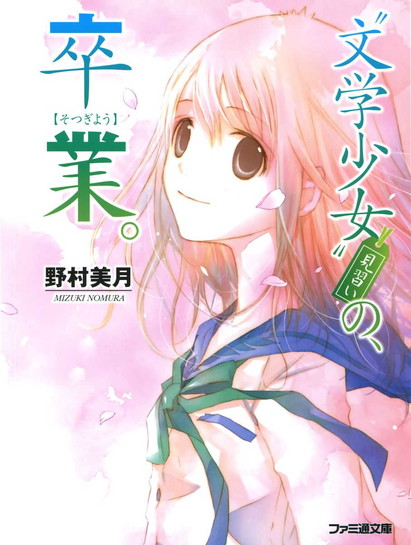

| [野村美月] 文学少女シリーズ14 | |
| 野村美月 | |
| (2015) | |
|
〝文学少女〟見習いの、卒業。
野村美月
|
底本データ
一頁17行 一行39文字 段組１段
太字は底本ではゴシック体太字。
「 ◇ ◇ ◇」は底本では１２字下げて「◇ ◇ ◇」。
顔文字の縦書き再現は環境依存。

「わかったでしょ？ 邪魔よ」親友の瞳から、そう告げられた菜乃。しかも心葉は、そんな瞳とつきあうという！仰天する菜乃の前に、さらに、瞳の過去──人を死なせたと噂された三年前、彼女の側にいた人物が姿を現す。瞳に何か起こっているなら、引くわけにはいかない！心を決め、動き始めた菜乃に、心葉は一冊の本を差し出し......。瞳が抱く秘密とは？そして、迫る心葉との別れと、菜乃の初恋の行方は──。もうひとつの〝文学少女〟の物語、堂々完結！
目次
プロローグ
自己紹介代わりの前書き～わたしが淋しさを知ったのは──
〝文学少女〟見習いの、寂寞。──
一章 戯れの恋はいけません！──
二章 Ｋという少年──
三章 あの日、雪が赤く染まり......。──
四章 私の復讐──
五章 彼への罪──
六章 もし、ボクの心があなたを信じたら──
七章 淋しさを抱いて──
ある日のななせ──
サヨナラのための短い物語
〝文学少女〟見習いの、卒業。──
〝文学少女〟見習いの、卒業。
野村美月
プロローグ 自己紹介代わりの前書き
～わたしが淋しさを知ったのは
『私は淋しい人間です』──静かに微笑み、つぶやいた人がいた。
十六歳のあのときまで、わたしは本当の淋しさを知らなかった。
取り返しのつかない過ちや、大切でたまらない人との別離。それはみんな卵の殻の外側で起きている物語めいた出来事で、わたしは小さく開けた穴のこちらから、ちょっと背伸びをし、息をひそめてのぞき見ているだけだった。
けれど、十六歳の冬と春。卵の殻は崩壊し、わたしの日常は色を変え、形を変えた。
ぱっくり割れ、粉々に砕けた殻の残骸の中に、一人ぽつりと立ちつくす。日は沈み、あたりがゆっくりと暗くなり、心の一部が欠け落ちて、そこから冷たい風が吹き込むような心細い感覚。
それを淋しさと呼ぶのだろうか。
初めて恋した彼は、出会ったときにはもう、青く澄んだ淋しさを抱えていた。
彼の淋しさに、わたしは惹かれた。
彼を慰め癒し寄り添うものになりたいと、胸が震えるほどに願った。
一緒にいる間、あんまり楽しくて、心が甘い想いで満たされて、素っ気なくされても嬉しくて、見つめられるだけでときめいて、口元をほんのちょっとゆるめて笑ってくれるだけで頬がとろけてしまいそうで、ただ幸せで、とても幸せで、このまま時が止まってしまえばいいと願った。
ああ、なんて贅沢な日々だったんだろう。
別れが来るなんて、思わなかった。
こんなに淋しいだなんて思わなかった。
こんな空虚も寂寞も、知らなかった。
恋をしたあの日、夜へ向かう夕暮れの淡い金色のもやの中、桜の花が優しく儚く舞っていた。
そして別れたあの日も、まばゆい光の中、花びらが──。
〝文学少女〟見習いの、寂寞。
一章 戯れの恋はいけません！
「ミュッセの『戯れに恋はすまじ』は、わさびチョコの味がするんです」
膝に載せた薄い本のページをめくり、わたしは重々しく断言した。
放課後の文芸部。
パイプ椅子に体育座りし、気むずかしそうに眉根をぐっと寄せて、〝文学少女〟修行にいそしむわたしの向かい側の席で、心葉先輩はさっきわたしが提出した三題噺を読んでいる。
「アルフレッド・ド・ミュッセは、一八一〇年十二月十一日パリ生まれの作家です。お父さんは政府の高官で、ミュッセは神童と呼ばれた美少年だったんですよ。
あの『愛の妖精』の作者で男装の麗人ジョルジュ・サンドの恋人でもあったんです。
けど、サンドとの恋は破局してしまい、ミュッセは戯曲『戯れに恋はすまじ』を書きあげるのです。
男爵の息子ベルディカンと従姉妹のカミーユは、幼なじみの婚約者同士です。周りも二人の結婚を望んでいるのですけれど、修道院で花嫁修業していたカミーユは、久方ぶりに会ったベルディカンを、それはそれは冷たく拒むのですよ～。
むかついたベルディカンは、カミーユの乳兄弟で純朴な村娘のロゼットに恋をしかけて、夢中にさせちゃうんです！
けど結局カミーユはツンデレで、実はベルディカンのことが大好きで、二人は互いに愛を告白しあうのですが、これをロゼットが聞いていたのですよぉぉぉ！そのあとのことは──ああっ、残酷すぎて、とてもわたしの口からは言えません。
甘いチョコレートだと思って、ぱくぱくやってると、中にわさびがごろりと入っていて、舌が焼けただれてひーひーしてしまうんです。たらしのベルディカンが、軽い気持ちでロゼットの純情をもてあそんだばっかりに──」
椅子の上でふるふると身を震わせ、わたしは思いきり心葉先輩を睨んだ。
「これは戯れの恋はしてはいけないという教訓です！でないと、口いっぱいにわさびをつめ込まれるんです！目の裏まで火がついて、ぼーぼーになるんです！涙と鼻水も垂れ流しで、それは悲惨なことになるんですよ！」
目を据わらせ、こぶしを振り回して繰り返すわたしに、三題噺を読み終えた心葉先輩が、掠しげに微笑みかけてくる。
「わさびチョコは、なかなかおもしろいたとえだね。日坂さんも、すっかり文学少女らしくなったね」
空気に甘くとけてゆくような爽やかで知的で、素敵な笑顔だった。
「そそそそそ、そんなこと言っても惑わされませんからね」
ドギマギして、椅子からずり落ちそうになっているわたしに、また涼やかな目で、
「惑わすだなんて。正直に感想を伝えただけだよ」
と微笑む。
「今日の三題噺も、皮肉がきいててよかったよ。〝ティースプーン〟を魔法の杖だと嘘をついて〝ダンスパーティー〟のビンゴゲームの景品にした〝アライグマ〟の鼻が、どんどん伸びて、大気圏を突破しちゃうんだね。まるで壮大なピノキオだね」
ええい、騙されちゃダメだ！ わたしはキリッと顔を引きしめ、立ち上がった。
「嘘つきの末路は、それほど恐ろしいものなのです。だから心葉先輩！いいかげん、まるっと白状してください！昨日のあれは、なんだったんですか！」
「あれって？」
「瞳ちゃんと部室で、ききききききキスしてたことです！」
叫びながら、頬が情けないほど燃え上がり、舌がろれってしまう。
昨日、放課後！
この場所で！
わたしの想い人は、よりにもよってわたしの幼なじみの親友と、キス！していたのだ！
しかも、親友の瞳ちゃんからは冷え冷えとした目で見られ、
──わかったでしょう......邪魔よ。
なんて、さめた声で言われてしまった。
もちろんわたしは、さっぱり全然、まるまる、ちっとも、わからなかった。
瞳ちゃんと心葉先輩がキス！
あの、男の子に超冷たい瞳ちゃんが、この、一途で純情な女の子を笑顔で振ってのける（※振られたのはわたしだ）心葉先輩と、キス！しかもあのとき、瞳ちゃんのほうから心葉先輩のほうへ顔を寄せているように見えた！
これはある日突然、学校がサンリオピューロランドに変わり、リボンをつけた猫が、くるくる踊りながらお出迎えに現れたくらいの異常事態だ。
わたしは目をむいたまま、二、三秒宇宙空間に投げ出されたあと、
「わからないよぉぉぉぉ！」
と叫び、二人に向かって突進し、なにがあったのか？これはどういうドッキリなのか？わたし抜きでなにをやらかしているのか？それはしつこく問いつめた。
けど、瞳ちゃんも心葉先輩も口を割らなかった。
「ぼくからはちょっと」
「菜乃には関係ない」
と、素っ気ない答えが返ってくるばかりで──うぅぅぅぅ、本当に二人の間に、なにがあったの！
文化祭の劇の練習中、わたしの知らないところでメアドの交換したり、さりげなく親密だったりしてたけど、でもでも、瞳ちゃんと心葉先輩がどうにかなっちゃうなんてありえないし、嫌だよぉぉぉっ！
瞳ちゃんは昔から秘密主義の個人主義だった。一度黙り込んだら最後、腋をくすぐったって、にこりともしなければ、口も開かない。
だからここは心葉先輩に、すっぱり真実を告白してもらわなければ。
歯を食いしばり、ふーふー鼻息を飛ばしながら睨んでいると、心葉先輩が仕方ないなぁというような、少し影のある表情で言った。
「キスはしてないよ」
「ほ、本当ですか？」
「うん」
「嘘をついたらひどいですよ。鼻が伸びますよ」
「ぼくの鼻は伸びてないだろ？ だから嘘じゃないよ。ふいをつかれるのは誰かさんで懲りたから、簡単に許したりしないよ」
「そうですか」
胸が、ぱぁっと明るくなる。
じゃああれば、顔を近づけてただけ？ なんであんなにあからさまに顔をくっつけていたのかとか、本当に口と口は一ミリもふれあってないのかとか、唇の端っこくらいは、さわっちゃったんじゃないかとか、頬にするキスだってキスなんじゃないかとか、気になる部分は山ほどあるけれど、キスしてないのならそっちのほうが、ずっといいから、そういうことにしておこう、うん。
あれ？ でも、心葉先輩の表情はまだ暗い。なにか心に引っかかっているような、なにかを心配しているような、そんな目をしている。
胸がもやっとしたとき、心葉先輩が静かに言った。
「でも、冬柴さんとつきあうことにしたから」
「ええっ！」
驚くわたしを、心葉先輩はやっぱり、なにを考えているのかよくわからない、深い眼差しで見ている。
「あのっ、つきあうって、その──」
「言葉通りだよ、しばらく冬柴さんの彼氏になるということ」
ためらうことなく答えた。
「いいいけません！ 反対です！ だいたい心葉先輩は受験生なんですから、女の子といちゃくらしている暇はないはずです！受験まであと三ヶ月ですよ！」
「......日坂さんの口から、そんな言葉を聞くとは思わなかったよ。ぼくが受験生だってこと忘れてると思ってた」
「ぐっ......ちゃんと心の中で、心葉先輩の合格を祈念していました。本当ですよっ。冬休みには心葉先輩のためにお百度参りをする予定でした。Ａ判定だからって油断してはいけないですからね」
視線を微妙にそらしながら、言い訳していたときだ。
部室のドアが開いて、ショートカットの美少女が入ってきた。
瞳ちゃんだ！
不機嫌そうにしていても美人はやっぱり美人で、陶磁器みたいなすべすべの肌も、長いまつげも冷たく澄んだ瞳も、形の良い薄い唇も、しゅっとした顎のラインも、どこをとっても完璧だ。
いわゆる氷雪系美少女。
スノープリンセス。
小学生の頃から瞳ちゃんにべったりへばりついている、幼なじみのわたしでさえ惚れ惚れしてしまうほどの美少女っぷりなのだから、瞳ちゃんに恋してしまう男の人が現れても、まったく不思議ではない。
けど、心葉先輩と瞳ちゃんがつきあうのは、絶対絶対反対だ！
わたしは両手を大きく広げて、瞳ちゃんの前に立ちはだかった。
「ここから先は一歩も通さないよ、瞳ちゃん！たとえ親友でも──ううん、親友だからこそ譲れないものってあるんだよ。もし、瞳ちゃんが心葉先輩とおつきあいしたいなら、心葉先輩への気持ちを原稿用紙三千枚にまとめて、わたしに提出して！それくらいのパッションを見せてくれなきゃ、瞳ちゃんを恋のライバルとは認められないよ」
が、堂々と宣言するわたしの横を、
「さよなら、日坂さん」
鞄とコートを持った心葉先輩が、あっさり通りすぎてゆく。
瞳ちゃんは冷え切った目でわたしを見て、
「......」
すぐにふいっと顔をそむけ、心葉先輩と並んで歩いていってしまった。
「ぅぅぅ、心葉せんぱぁい、瞳ちゃ～ん......」
十分後──。
わたしは半泣きで、図書室の本棚の裏からストーキングしていた。
心葉先輩と瞳ちゃんの二人は、テーブル席に並んで座っている。
教科書やノートを広げて、心葉先輩が瞳ちゃんに勉強を教えているようだ。
瞳ちゃんなんて、この前の中間テストで学年で二十四番で、教えてもらう必要なんか全然ないのに～～～～。それより、数学と物理が赤点すれすれのわたしに、みっちり個人授業してほしい。
はぅっ！ 今、手がちょっとさわった！
あ、瞳ちゃんが心葉先輩のほうを見上げた。
あっ、あっ、心葉先輩が瞳ちゃんのほうへ顔を寄せて、甘く微笑んで──。
「ぐすっ、井上ぇ」
後ろで、わたしによく似た、じめっとした声がした。
振り返ると、ななせ先輩が目に涙をにじませて、テーブルのほうを凝視している。
「ど、どういうこと」
わたしの背中にすがりつき、ぼそぼそとつぶやく。
「まさか、井上が浮気......？ ううん、そんなことあるわけ......だって井上には遠子先輩が、でも、井上とあの子、劇の練習のとき親密そうにしゃべってた。それにあの子、日坂よりスタイル良くて、日坂より落ち着いてて、日坂より知的で美人で、日坂より百倍、男にモテそう」
「......ななせ先輩、あんまりです」
ひっそり抗議するが、ななせ先輩は聞こえていないのか、わたしの背中に置いた手を、ぶるぶる震わせ、つぶやき続けている。
「ああっ、どうしようっ。井上が日坂より美人な子と......朝倉にメールで相談──ううん、ダメっ、大騒ぎになって井上に迷惑がかかっちゃう。でもでも、竹田が知らせるかも。それにあたし一人じゃどうしていいのか。あああ、あぅぅぅ」
「落ち着いてください、ななせ先輩」
わたしはななせ先輩のほうを向いて、両手をぎゅっと握った。
「きっとなにか事情があるんです。心葉先輩は浮気なんかする人じゃありません。わたしの再三の誘惑も、はねのけてきたんですから」
ななせ先輩が恥ずかしそうに、うなだれる。
「そ、そうだね、あたしのほうが年上なのに、うろたえちゃってみっともない。日坂は冷静だね」
「わたしは心葉先輩を信じてますから」
胸を張って断言したとき、
「あ、井上が、あの子の手を握ってる......！ でも、井上を信じなきゃ」
「ええっ！ それはダメぇ！」
わたしは、ななせ先輩の手を振りほどき、二人のほうへ突っ走っていった。
「日坂、言ってることと違う！ ズルイ！」
ななせ先輩もついてくる。
わたしは肩で息をしながら、心葉先輩の真正面の席に、ドスン！と音を立てて荷物を置いた。
「偶然だねっ、瞳ちゃん、心葉先輩！ ここ、座っていいよね？」
「日坂さん......！ 琴吹さんまで!?」
心葉先輩が、わたしとななせ先輩を見比べ、目を丸くする。
ななせ先輩は、唇を尖らせ横を向いた。
「べ、別にっ、井上が女の子といちゃついてるのが気になったわけじゃないからねっ。日坂が宿題見てほしいって頼むから、仕方なくつきあってるだけだからねっっ」
噛み噛みで言い、真っ赤な顔でわたしの隣に座ると、
「か、関係ないけど、さっきなんで、手とか握ってたの」
横を向いたままつっけんどんに言う。
「へ？」
心葉先輩は一瞬、きょとんとしたあと、おだやかな顔で、
「ああ。消しゴムをとろうとしたら、手が重なっちゃったんだよ」
瞳ちゃんは、相変わらずひんやりした目のまま黙っている。クールミントアイスみたいだ。
「あはは、そうだったんですか。やだもう、ななせ先輩が、すっとんきょうな声を出すから、つい」
「ななな、なに言ってんのよっ。突然、走り出したのは日坂のほうでしょう」
ななせ先輩と二人で、肘をつつきあって言い合っていたら、瞳ちゃんが珊瑚色の唇をすっと開いた。
「井上先輩、この問題なんですけど」
淡々とした口調で心葉先輩に話しかける。わたしたちのことはまるで眼中に入ってないみたいだ。
「ああ、これはね」
わたしたちを見て呆れていた心葉先輩も、瞳ちゃんのほうへ顔を寄せて、やわらかな声で説明をはじめる。
知的で清潔な雰囲気の心葉先輩と、氷雪系美少女の瞳ちゃんは、悔しいことに絵になる組み合わせだった。
完璧、二人だけの世界だ。くっつきすぎだ。
「あっ！ シャーペンがうっかり手からこぼれて！」
わたしはわざとシャーペンを転がし、体と腕をずいっと伸ばして、二人の間に割り込んだ。
「危ないよ、日坂さん」
「......」
心葉先輩が苦笑し、瞳ちゃんが冷ややかな視線をよこす。
「あっ、今度は、消しゴムが！」
「あっ、下敷きが！」
「あっ！ あっ！ ペンケースが滑って」
二人がくっつこうとするたび、テーブルの向かいから、がたん、ばたんと、しつこく割って入る。
目を白黒させて見ているだけだったななせ先輩も、意を決したように、
「べ、別に気にしてないけどっ、鞄が勝手に──！」
と、通学鞄をボーリングの球のように、心葉先輩と瞳ちゃんに向けて滑らせる。
「......琴吹さん、ちょっとこれは無理があるんじゃ」
心葉先輩が額に汗をにじませた。
「あ、あたしがやったんじゃないよ、鞄が勝手に動いたんだよ」
「おかしいですねぇ。きっとポルターガイストの仕業ですよ」
「そっ、そうだねっ。このテーブルは呪われてるのかも」
「霊を払うためには、神の名のもとに真実を告白しなければならないのです」
「......バカじゃない」
瞳ちゃんがボソッとつぶやく。
そのとき。
「すみません、他の生徒さんたちの迷惑になっているようなので、もう少しだけ静かにしていただけないでしょうか」
落ち着いた低い声がした。
いつの間にか、テーブルの横に、ちょっと猫背ぎみの若い男性が、ひっそりとたたずんでいた。
三十歳前後くらいだろうか......。十六歳のわたしから見ると、おじさんだ。
スーツを着ていて、おだやかそうな優しい顔に眼鏡をかけていて、この前読んだ小説に出てきた〝静謐〟という言葉がしっくりあてはまるような、どこか枯れた雰囲気の人で──。
「忍成先生......！ す、すみません」
ななせ先輩が真っ赤な顔で立ち上がる。
三年生を教えている先生なのかな？ 見かけない顔だけど。
わたしも慌てて立ち上がり、ななせ先輩と一緒に謝ろうとした。
瞳ちゃんが心葉先輩の手に、自分の手をすっ......と重ねたのは、そのときだった。
「......行こう」
わたしとななせ先輩の視線が、重なりあった手に釘付けになる。
瞳ちゃんが長いまつげを伏せたまま、さめた声でつぶやく。
「......ここは騒がしいから、もっと静かなところで、ゆっくり教えてくれる？」
な、なに、瞳ちゃん？ その怪しげな台詞は？さ、誘ってる？いけないよ、危ないよ。
心葉先輩は、瞳ちゃんの手を振り払わない。一瞬翳りのある表情を浮かべたあと、瞳ちゃんを気遣っているような澄んだ目で、
「うん、そうだね」
と答え、
「騒がしくして、申し訳ありませんでした」
先生に向かって丁寧に頭を下げると、瞳ちゃんと手を繋いで、図書室から出ていってしまった。
あああああぅぅ、行っちゃったよぉぉぉ。
ななせ先輩が、しょんぼりとつぶやく。
「い......井上を信じるしか、ないよね」
「当然です」
大きくうなずきながら、汗がだらだらこぼれてくる。
気がつくと、まだテーブルの横に先生が立っていた。
眼鏡の奥の目を細め、心葉先輩たちが去ったほうを、すまなそうに見ている。
もしかしたら、自分が追い出したみたいに感じているのかも。逆にこっちが罪悪感を覚えて、
「あのっ、うるさくして、すみませんでしたっ」
ぺこりと頭を下げると、静かな水面にほんのちょっと波が立つように、ひっそりと微笑んだ。
「いいえ。これからは気をつけてくださいね、日坂さん」
「はい」
また頭を下げてから、あれ？ と思った。
今、日坂さんって言った？ ？ ？
わたしの名前、どうして知ってるんだろう？
あれ？ あれれ？
そういえば、どことなく見覚えがあるような......。
疑問に思ったときはもう、猫背ぎみのひょろっとした後ろ姿はカウンターのほうへ遠ざかっていた。
「ななせ先輩、今の先生はどなたですか？」
「先月、臨時で入った司書の忍成先生だよ」
忍成......？
名前を聞いてもピンと来ない。けど、やっぱり会ったことがあるような気がするなぁ......うーん、どこでだっけ。
「知らない」
瞳ちゃんは、このうえなくきっぱり、はっきり、クールに答えた。
翌日の昼休み。
お弁当食べよう、瞳ちゃん！ といつものように声をかけて、机をくっつけて向かい合い、なにか緊張をほぐす会話を──と思案して、新しい司書の忍成先生って誰かに似てない？と話を振った直後だった。
あぅっ、会話が広がらない。
今日こそ、瞳ちゃんが謎の行動をとるわけをつきとめよう、まずは軽快なトークで瞳ちゃんの心を癒して壁を崩してからと、作戦を練っていたのだけど、敵は手強い。ええい、次の作戦だ。
「瞳ちゃん！ わたしが昨日焼いた、この紅白カステラを食べたかったら、心葉先輩とのことを白状するんだよ」
リボンで可愛くラッピングした大きなカステラを、どんっと机に置いて凄むと、瞳ちゃんはお弁当箱を包む水色のハンカチを広げながら、つまらなそうに答えた。
「食べたくなかったら、じゃなくて？今年の正月にあんたが持ってきたあのカステラと同じモンだったら、二度も食べたいとは思わないけど」
「これは改良を重ねた美味しいカステラなんだよ！お母さんたちにも好評だったんだから。ね？一年の歳月をかけてカステラがどう進化したのか、その舌で確かめてみたいでしょう？」
「......別に」
プラスチックの蓋を、優雅な手つきで開ける。
中身が目に飛び込んできたとたん、声が喉で絡まった。
「ひ、瞳ちゃん......それは？」
「......イナゴ」
器の中に、ぎっしりつまった茶色の物体を、瞳ちゃんが箸でつまんでぽしぽし食べはじめる。
食べてる......。
あの瞳ちゃんが、無表情で、イナゴを食べてる。
昔から虫が大っっっ嫌いで、蚊が一匹いるだけで眠れず、殺虫剤を片手に虚空を睨みすえて追いかけ回し、小学校の授業で鈴虫の観察をしたときも、鼻のてっぺんに皺を寄せていた瞳ちゃんが、虫を！
イナゴを！
瞳ちゃんは偏食気味で、お弁当はいつも自分で作ったハムやチキンのサンドイッチで、パンはどこそこのなんとかブレッドで、芥子バターもなになにのメーカーでと決まっている。お気に入りを決めたら、瞳ちゃんは延々それをリピートする。
なのに何故急に、イナゴの佃煮？
イナゴが瞳ちゃんの最新グルメなの？ それにしたって、ごはんも他のおかずもなくイナゴだけって、どういう罰ゲーム？
やっぱり、瞳ちゃんはおかしい！
黙々とイナゴを食べ続ける瞳ちゃんを見て、わたしはあらためて確信した。
大嫌いな虫を食べなくてはならないほど大変なことが、瞳ちゃんの身に起こっているのだ！
「瞳ちゃん！ 紅白カステラは取引なしで瞳ちゃんにあげるよ。だからそれを食べて元気を出して。それで、なんでもわたしに打ち明けて」
瞳ちゃんが長いまつげを、すっと上げる。冷たいほど透明な瞳が、わたしを正面から射抜く。
「......菜乃は、あたしと井上先輩がつきあいはじめたこと、怒ってないの？」
わたしは即座に答えた。
「だって、瞳ちゃんは心葉先輩に恋してないでしょう？だからどうして心葉先輩とつきあうのか、疑問なだけだよ」
「......」
瞳ちゃんは箸を止め、冷たい──冷たい顔で、黙り込む。
十月に瞳ちゃんが、愛犬の散歩中にお豆腐屋さんの前で、二年生の先輩を振ったのは、まだ記憶に新しい。
『どうしたらつきあってくれる？』
涙目で懇願する上級生に向かって、瞳ちゃんは冷ややかに空を指差し、
『今、この空から雪が降ったら』
とそれはクールに、素っ気なく、返したと伝わっている。
絶望した上級生は、お豆腐屋さんに飛び込み、そこで山ほど豆腐を購入し、昼休みに鼻水をすすりながら、やけ食いしたという。
この一件で、瞳ちゃんの氷雪美少女っぷりは、校内にとどろいた。
瞳ちゃんは昔から、言い寄ってくる異性に対して容赦がなかった。
正確には中学一年生の冬──瞳ちゃんの大切な人が亡くなり、あんなに綺麗な長い髪を切り落としたあのときから。
それ以前は、男の子への断り方も、他人への接し方も、もう少しソフトだった。
けど、あれ以来、瞳ちゃんの言葉は氷柱のように冷たく尖り、決して笑わなくなった。
わたしは瞳ちゃんとずっと一緒にいたから、知っている。
もし瞳ちゃんが本気で恋をしたなら、わたしは花束をばらまいて、紅白カステラを一年分くらい焼いて祝福をするだろう。でも、瞳ちゃんは、三年前のあのときみたいには恋をしていない。
「わかるよ、親友だもの」
真面目な顔で断言すると、瞳ちゃんは暗い目になった。わたしと視線をあわせるのを避けるようにうつむいたあと、少しの間黙っていたけれど、唇を小さく噛み、低い声で言った。
「じゃあ......あたしが本気で井上先輩を好きになったら......菜乃はどうする？」
「え！」
わたしは声をつまらせた。
「そ、それはちょっと困っちゃうな。えーと、えーと」
あまりの難問に、うんうん唸ってしまう。
「あたしのこと、憎むでしょ」
「えっ」
「消えればいいって、思うでしょ」
「そ、そんな」
「死ねって思うでしょ」
「きょ、極論すぎだよ！ 瞳ちゃん！」
瞳ちゃんが立ち上がる。
怒りのこもった冷たい目で見おろされ背筋が凍った。瞳ちゃん、すごく怒ってる？
「教えてあげる、菜乃。あんたがすべきことは、あたしを軽蔑して、まとわりつかないことだよ」
険しい声でそう言い、お弁当箱を片付けて離れていってしまった。
わからないよ、瞳ちゃん。
放課後。わたしは胃を痛めながら廊下を歩いていた。
あれきり瞳ちゃんとは話ができないままだ。
早く手を打たないと瞳ちゃんは、ブリザードの向こうへ行ってしまう気がする。
やっぱり心葉先輩に口を割ってもらうしかない。けど、どうしたらいいんだろう。心葉先輩は賄賂も色仕掛けもききそうにない......。
図書室のカウンターにわさびチョコを返しながら、眉間に皺を寄せて次の作戦を考えていたときだ。
「日坂さん」
親しげに名前を呼ばれて顔を上げると、上品な顔立ちをした眼鏡の先生が、ひっそりと微笑んでいた。
司書の忍成先生だ！
わたしは慌てて、へこへこ頭を下げた。
「き、昨日はご迷惑をおかけしました。今日は静かにしてますから。ところでその──先生は、どうしてわたしの名前をご存じなんですか？」
わたしの疑問に、先生はあっさりと答えてくれた。
「以前に、私たちが会っているからですよ」
「やっぱり！ すみません、わたし先生とどこで会ったのか思い出せないんです。この辺に引っかかってるんですけど」
頭のてっぺんをさして情けない顔をしてみせると、眼鏡の奥の瞳を優しくなごませて、
「日坂さんはまだ小学生でしたからね。私も学生でした」
「へ？ 先生、おいくつですか？」
「来年三十になります。きみたちから見たらおじさんですね」
「いえ、そんな」
「でも、日坂さんにはじめて会ったときに言われましたよ。『このおじさん、誰？』って。あのときはまだ二十四歳で大学院に通っていて、若いつもりだったのですが」
大学院......？ 二十四歳？
頭の中で、火花がぱちんとはじける。
思い出した！
「猿のお兄さん！ 瞳ちゃんの家庭教師の！」
大声を出してしまい、慌てて口元を押さえる。
「す、すみません」
「いいえ。よろしかったら、司書室で少しお話ししませんか？ちょうど瞳さんのことで、日坂さんに聞きたいことがあったんです」
図書室の奥にある司書室で、忍成先生は急須でお茶をいれてくれた。
「あ、茶柱が立ちましたね」
「わっ、本当です」
目があって、どちらからともなくにっこりする。
ああ、猿のお兄さんはこういう人だったなぁと、どんどん思い出す。いつもおだやかで優しくて、低い声でおっとりとしゃべる人だった。
小学五年生のとき瞳ちゃんの家に、週に二回、家庭教師が来るようになった。
瞳ちゃんは当時からわたしなんかよりずっと成績がよかったのだけど、中学受験のために、おうちの人が頼んだらしい。
ある日、いつものように瞳ちゃんの家へ遊びに行ったら、眼鏡をかけた見知らぬ男の人がいて、
『瞳ちゃん、このおじさん誰？』
と、尋ねたんだ。しかも思いきり指さして。
『バカね、菜乃。先生はおじさんくさいけど、まだ二十四歳なんだから、こういうときはお世辞で、お兄さんって言うものよ』
と、瞳ちゃんがさらにきついことを言ったような......。
けど、先生はちっとも怒ったりせず、
『瞳さんのお友達ですか？』
と丁寧すぎるほど丁寧に話しかけてくれて、大学で勉強しているという猿の話までしてくれたんだ。
猿はモンキーとエイプにわかれていて、モンキーは尻尾のついている猿。エイプは尻尾のない猿で、より人間に近いんだとか。先生が研究しているのはエイプで、その中の、えっと──。
「ボノボノの研究をしてるんですよね！」
勢いよく言ったとたん、困ったような顔をさせてしまった。
「いえ、ボノボノではなく、ボノボです」
「はわっ、すみません」
ボノボノじゃ、シマリスくんとアライグマくんだ。
わたわたしていると、先生は優しく目元をなごませた。
「日本では、あまりなじみのない種類ですから仕方ありません。覚えていてくれただけで嬉しいですよ。それに猿のおじさんではなく、猿のお兄さんと呼んでくれたことも」
いい人だぁ。けど、小学生の頃に会ったときより、さらに浮世離れして見える。今時の二十九歳って、もっと若々しいよ。
こっそり失礼なことを考えながら、お茶をいただく。甘さと渋みの加減が絶妙で美味しい。匠の技だ。これは自分でお茶をいれるのに慣れているのに違いない。
でも、瞳ちゃんはどうして忍成先生のことを、知らないなんて言ったんだろう？
昨日図書室で会ったときも、挨拶もしないで無視するなんて。週二回会っていた瞳ちゃんが、先生の顔を見忘れるはずないのに......。
瞳ちゃんは、先生のことを嫌ってはいなかったと思う。
その前に塾を辞めた理由が、『○○先生が、じっとりした目で見るからキモイ』だったし。忍成先生のことも気に入らなければ、『クビ、明日から来ないで』くらい平気で言うだろうから。
家庭教師の先生ってどんな人？ って、わたしが訊いたときもクールな顔で『おじさん』と、ばっさりだったけど『......あたしのこと、じろじろ見ない。息をしてないみたいに静かな人』とも言っていた。
他には──うーん、当時、先生の話を、瞳ちゃんはわたしにほとんどしなかったような......。
あ、でも、
「小六のとき、わたしと瞳ちゃんと先生で、海へ行きましたよね？瞳ちゃんが模試でＡ判定をとったら先生が連れてってくれるって約束して」
「ああ、そんなこともありましたね」
忍成先生がやわらかに微笑む。
わたしも懐かしい気持ちになった。
そうだ、受験生だから瞳ちゃんは夏休みも遊びに行けなくて──つまらなそうにしてたら、先生が『次のテストでＡ判定だったら、私からお母さんに頼んであげますよ』って言ってくれたんだ。
瞳ちゃんはすごく頑張って勉強をしてＡ判定をとって、それで一日だけど遠出ができることになり、わたしも瞳ちゃんもすごく嬉しくて、はしゃいでいたっけ。
「みんなで、屋台のトウモロコシを食べましたよね！トウモロコシの皮が歯につくからって、瞳ちゃんがわたしたちに背中を向けて、ぽしぽし囓ってて」
「ええ」
「瞳ちゃんと、波に乗ってどこまで高く跳べるか競争したり」
「はい」
「そしたら瞳ちゃんがひっくり返って、浮き輪がすっぽ抜けて、溺れちゃって、先生が助けて」
その先を口にしかけて、わたしは声をつまらせた。
稲光のように、記憶がよみがえる。
それは、先生が瞳ちゃんに、人工呼吸をしている光景だった──！
蝋燭みたいに真っ白な顔に、ほどけた髪が乱れて張りついていて、瞳ちゃんは白い水着のまま砂浜にぐったりと横たわり、動かなかった。
わたしは瞳ちゃんが死んじゃったらどうしようと、目に涙をいっぱいためて震えていた。
眼鏡をはずした先生が、眉根を寄せ奥歯を噛みしめ切羽つまった表情で、瞳ちゃんの胸を何度も押したあと、唇を近づける。
紫色に変色した瞳ちゃんの唇と、先生の唇が重なるのを、わたしは心臓が破裂しそうになりながら、見ていたんだ。
──日坂さん、今見たことは忘れてください。女の子にとって初めてのキスは大切なものでしょう。だから、瞳さんにも誰にも内緒にしてください。
瞳ちゃんが塩水を吐き出し息を吹き返すのを見てホッとしたあと、先生はひどく困っている表情になり、わたしに向かってひっそり微笑んで、そう言った。
わたしは声が出ず、ひたすら首を縦に、ぶんぶん振ったのだ。
わわっ、そうだった！
猿のお兄さんは、瞳ちゃんのファーストキスの相手だったんだ。
顔を赤くして黙ってしまったわたしを見て、先生もわたしが考えていることがわかったのだろう。
細い指を、唇にそっとあてて、
「内緒ですよ」
と、ささやいた。
あのときと同じように、何度も首を縦に振る。
そうすると、静かに微笑んだ。
「えっとそのっ、瞳ちゃんのことで聞きたいことって、なんですか！」
まだ頬が熱い。
話をそらすと、先生は目をふっと曇らせて、
「昨日、瞳さんと一緒に学習をしていた男子生徒は、日坂さんのお知り合いですか？」
「はい、文芸部の先輩です......けど」
急に心葉先輩のことを訊かれて戸惑うわたしを、先生が浮かない顔のまま見つめている。
「彼と瞳さんは、つきあっているのでしょうか？」
「うっ、そう聞いてます」
私は認めてないけど──と思いながら、渋々答える。
先生の目が、ますます曇る。
「いつからですか？」
「えっと、ごく最近」
わたしへ向けられた先生の表情が少しずつ険しくなってゆくので、わたしは心配になってきた。
「彼はどんな少年ですか？」
「なんでそんなこと訊くんですか？ 瞳ちゃんのおうちの人に頼まれたんですか？」
先生がハッとし、苦笑する。
「いいえ。私が瞳さんの家庭教師だったのは、瞳さんが中学一年生までですから。
すみません、興信所の調査員のようでしたね。ただ純粋に、あの小さかった瞳さんがどんな相手とおつきあいしているのか興味があるだけです。瞳さんは......妹のような存在でしたから」
静かな低い声で語る。その間に、なにか辛いことを思い出しているように、目に暗い影がよぎる。その顔を見ていて、わたしもあの事件のことを思い出して、胸が重くなった。
「中一の、いつまで先生は、瞳ちゃんの家庭教師だったんですか？」
先生が切なそうに目を細める。
「十二月の終わりまでです」
心臓が軋むような感覚がし、わたしは苦い唾を飲み込んだ。
十二月の終わりに瞳ちゃんになにがあったのか、先生は知っている。
クリスマスが目の前に迫ったある日、瞳ちゃんは腰の上まであった長い髪を、ばっさり切った。
高校生の男の子が、亡くなったのだ。
自殺だった。
瞳ちゃんのせいで死んだと、噂されていた。
瞳ちゃんが彼を振ったからって。
瞳ちゃんは誰にも反論しなかった。誰とも一切口をきかなくなり、三学期がはじまってからも毎日登校して、一日中誰とも話さず、クラスの子たちにハブられても冷たい顔で口をつぐみ、休み時間も一人きりで椅子に座っていた。
──冬柴が殺したんだって。
──知ってる。○○高の一年生だよね。
──冬柴って、美人で金持ちだからいい気になって、告白してくる相手、振りまくってたもんね。ひどい振り方したんじゃない。
──あたしもう、冬柴と口きかない。
──あたしも！ 人殺しとなんか話したくない。
わたしは瞳ちゃんが心配で、毎日毎日毎日、瞳ちゃんの教室へ行って、瞳ちゃんに話しかけた。
瞳ちゃんは二ヶ月の間、口をきいてくれなかったし、なにがあったのかも話さなかった。
わたしも聞かなかった。
だって、わかっていたから。
亡くなったのは、瞳ちゃんが恋をしていたあの男の子──櫂くんだって。
あれから三年。
瞳ちゃんは一度も髪を伸ばしていない。
「瞳さんとはこの三年間一度も会っていません。学園でたまたま再会して、どんな生活を送っているのか気になったんですよ。彼と、いいおつきあいができているのなら、私も安心なのですが」
忍成先生が家庭教師をやめたのは、きっとあの事件があったから。先生も瞳ちゃんのことを、純粋に心配しているのだろう。
当時のことを思い出すと、まだ胸が潰れそうになる。
だから先生を安心させてあげるために、わたしは言った。
「瞳ちゃんは元気ですよ。前よりちょっぴり口は悪くなったけど、言いたいことずばずば言っちゃうのも瞳ちゃんらしいです。心葉先輩も、優しくて賢くて繊細で、いざってときには頼りになって、すごくすごく素敵な人です！もう世界一素敵です！」
先生が困惑しているようにつぶやく。
「ずいぶん......高評価なんですね」
わたしは満面の笑顔で、大きくうなずいた。
「はい、だってわたしの大好きな人ですもん」
「！」
とたんに先生の顔が青ざめた。
頬がこわばり、目つきが険しくなる。
「それは、瞳さんと彼と日坂さんの三角関係ということですか？」
「うーん、そうなるかもです」
肩を鷲づかみされ、わたしはぎょっとした。
「いけません！」
細い指が、肩にぐいぐい食い込んでくる。痛いっ。
先生は今にも噛みついてきそうな表情で、わたしの顔をのぞきこんだ。圧倒されて身じろぎもできずにいるわたしを、恐怖で一杯の目で睨み据えながら、苦しそうな息と一緒に言葉を吐き出す。
「瞳さんは彼とつきあっているのでしょう？ きみの横恋慕なのでしょう？だったら即刻あきらめるべきです」
なに？ なにを先生は言っているの？
わたしは、頭がぐらぐらするほど混乱していた。
さっきまで普通に話していたのに、なんで急に──。
先生が、掠れた声で言う。
「恋は──罪悪です」
言葉が胸に噛みついてくる。頭の芯と耳の奥が灼けるように熱くなる。
「恋は世界を崩壊させてしまう。あんなこと、二度とあってはならない。きみは──きみだけは、どうか瞳さんを裏切らないでください」
先生は何故こんなに興奮しているの？
こんなに息を乱し、声を震わせ、苦しそうなの？
恋は罪悪ってなに!?
怯えるわたしの目をのぞきこみ、肩をつかむ指に力を込め、なにかに深く絶望しているように、一言一言刻みつけるように、繰り返す。
「いいですか？ 忘れないでください。恋は罪悪なのです」
◇ ◇ ◇
私が命を終える前に、きみに告白することをどうか許してほしい。
この気持ちは最後まで胸に秘めてゆこうと思っていた。
けど、あの淋しい小説の中で、罪とエゴに苦しんだ哀れな先生が願ったように、死ぬ前にたった一人でいいから、心を打ち明ける相手が、私もほしくなったんだ。
彼を死なせたあの日から、私は他人を信じられなくなっていた。
こんな告白をされて、きみは困るかもしれない。迷惑かもしれない。
文句を言う相手がすでにこの世にいないなんて、本当にひどい話だと思うよ。きみがこの記録を手にし私の心を知るとき、私はすでに死んでいるのだから。
さんざん考えて出した、これが私の結論だ。
私たちはもう、以前のような生活には戻れない。手を握りあうことも、おだやかに微笑みあうこともできない。
それはきみも同じだろう？
あの日、なにもかもが変わってしまった。いや、そうじゃない。私が気づいていなかっただけで、最初からああなる運命だったんだ。
私がずっと感じていた淋しさは、その予兆だった。
すみません。許してください。もう、きみの心を思いやる余裕もありません。ただ、この淋しさを終わらせたい。
私はエゴにまみれている。こんな私を憎んでくれてかまわない。
けど、どうか、わかってほしい。
私ときみは、あの頑なで繊細で秘密主義な、どうしようもないあの彼を間に挟んだ共犯者だった。
きみにしか私の本当の気持ちはわからない。私のゆがんだ想いも、淋しい心も。許されない罪も、きみにだけは打ち明けられる。
だから私はすべての整理を終えて、きみに会いに行ったんだよ。
◇ ◇ ◇
「心葉先輩！」
窓際の席でノートパソコンで小説を書いていた心葉先輩が、目を丸くしてわたしを見上げる。
わたしは机の前まで歩み寄り、両手をついて身を乗り出した。
「瞳ちゃんになにが起きてるのか話してください！忍成先生と関係があるんですよね！瞳ちゃんも先生もヘンです！」
ついさっき、司書室であったことをぶちまける。
心葉先輩をあきらめるよう執拗に迫られたこと。逃げるようにして司書室を退出したこと。
『恋は罪悪です』と忍成先生が繰り返し主張していたことを伝えると、心葉先輩は顔をしかめ、思案するように唇に人差し指をあてた。えらく真剣な表情だ。
「瞳ちゃんと心葉先輩がつきあうようになった理由を、話してください。まずはそこからです」
頬をふくらませ肩で息をするわたしに、ちょっと困ったような目をしたあと、優しい声で答えた。
「ごめん。ぼくからは言えないんだ」
「何故ですか！」
「冬柴さんの気持ちがわかるからかな」
「瞳ちゃんの、気持ち？」
翳りを帯びた、ほろ苦い眼差しで、心葉先輩がうなずく。
「そう、冬柴さんは今、きみの手をとるわけにいかないんだ。きみが近づいても拒絶するしかない。冬柴さんは壊したがっているから」
さっぱりわからない。
でも『あんたがすべきことは、あたしを軽蔑して、まとわりつかないことだよ』と凍てついた目で言われたことを思い出し、胸がさっと冷たくなる。
瞳ちゃんはなにを望んでいるの？ 本当に、わたしの手は必要ないの？
わたしは邪魔なの？ 軽蔑して離れてほしいって、瞳ちゃんは思っているの？本当に？
胸がひりひりと痛む。
三年前、髪をばっさり切り落とし、死人みたいに青ざめた顔をした瞳ちゃんが登校した日のことを、今もはっきり覚えている。
十二月の末の、凍えるような冷たい朝で、瞳ちゃんはコートも羽織っていなかった。宙を見据えた目が絶望で染まっていて、唇は噛みしめすぎて血がにじんでいた。
あんな瞳ちゃん、もう見たくない！
「わたしは瞳ちゃんの友達だから、瞳ちゃんが困っているなら力になりたいんです」
焦れったい気持ちで主張する。そう、わたしは引くわけにはいかない。
心葉先輩が、暗かった表情を、ふっ......となごませた。
「きみなら、そう言うだろうと思った」
嬉しそうな、あたたかな目で、
「日坂さんの、誰かのために損得なしで一生懸命になれるところ、ぼくはとてもいいと思うよ」
いきなりそんなことを言われて、涼しげな微笑みまで頂戴して、わたしは頬が熱くなって、へどもどしてしまった。
「なななななんですか急に──ハッ！ また誤魔化そうとしてますね？そうはいきませんよ！わたしの扱いがちょっとばかし上手になったからって、いい気にならないでください」
「今のは、素直な感想なんだけどな」
うろたえるわたしに、爽やかな甘い眼差しで言う。意識してやってるんじゃないとしたら、とんでもないタラシだ、危険すぎる。
「そ、そんな目で見たってダメです。今、この場で心葉先輩に手のひらにキスされて、跪いて愛をささやかれても、わたしは引き下がりません。わたしは友情に厚い女なんです。瞳ちゃんのピンチにラブってる場合じゃありません」
心葉先輩がおかしそうにくすりとしたあと、急にまた真剣な眼差しになり言った。
「なら、日坂さんが自分で答えに辿り着いてごらん。冬柴さんが何故きみを拒絶しなければならないのか。なにをしようとしているのか。
冬柴さんの意志を尊重することが、必ずしも本人のためになるとは、ぼくも思っていない。けど、今それを冬柴さんに伝えられるのは、日坂さん、きみしかいない」
立ち上がると、かつかつと足音を立てて本棚のほうへ歩いてゆく。
そこで立ち止まり、一冊の本を抜き出し、振り返ってわたしに差し出した。
さらさらの前髪の下にある澄んだ目が、わたしをまっすぐに見つめる。
そこに浮かんでいるのは、信頼。
きみならできるよ、という無言の励まし。
表紙が色あせた古いハードカバーの本を、わたしは両手で受け取った。そんなに厚い本じゃないのに、手に重さがずしりとかかる。
「『こころ』......？」
タイトルを口に出してつぶやく。
作者は夏目漱石。
背筋が緊張で、ちょっと震えた。
心葉先輩が、冒険者に助言を授ける賢者のように告げる。
「読んでごらん。......きっとその物語の中に、冬柴さんと忍成先生の秘密が隠されているよ」
帰りの電車の中で、自宅の机で、わたしは夢中でページをめくった。
古い紙は乾いていて埃っぽく、指先が、かさかさになる。けどそんなこと気にせず、なめるように文字を追い続けた。
漱石は、学校の授業で『坊っちゃん』や『吾輩は猫である』を部分的に読んだことがある。『こころ』も中学の教科書に一部掲載されていた。けど、最初から最後までまともに読むのは、これがはじめてだ。
端麗で簡潔な文章は、わたしの頭にもすんなり入ってきた。そこに描き出される登場人物の葛藤も、中学のときよりも胸や喉を鋭くしめつけ、途中から時間を忘れて没頭した。
物語は、『上 先生と私』『中 両親と私』『下先生と遺書』の三つの章に分かれている。
大学生の〝私〟が出会った〝先生〟は教養のある年上の男性で、私は彼を慕い、自宅に通うようになる。
人嫌いの先生は、美しい奥さんと二人で暮らしている。先生には辛い過去があり、そのために他人との交流を断ち、世捨て人のような毎日を送っているようだった。
先生は私に、『恋は罪悪です』と告げる。
私は先生の苦悩の原因を知りたいと願うけど、先生は、意味ありげな言葉をつぶやき、私の心をいたずらにかき立てるばかりで、本質的なことは話してくれない。
そんな中、私は卒業し、しばらく実家に滞在する。父の病気が悪化し危篤に陥ったとき、先生から分厚い手紙が届くのだ。
そこには、この手紙があなたの手に落ちる頃には、私はもうこの世にはいないでしょうと書いてあった。
私は先生のもとへ向かい、列車の中で手紙を読む。
先生が、叔父であり後見人であった人に財産を騙し取られたこと。故郷と縁を切り、未亡人とそのお嬢さんの暮らす家に、下宿することになったこと。
お嬢さんに恋をしたこと。
ここで、先生の昔なじみの親友であるＫが登場する。
養家に勘当され行く場所がなかったＫを、先生は自分の下宿に誘い、一緒に暮らしはじめる。そうしてＫも先生と同じように、お嬢さんに恋してしまうのだ。
Ｋはそのことを先生に打ち明ける。
けど先生はＫに、自分もお嬢さんに恋していることを話すことができない。
お嬢さんは自分よりもＫのほうが好きなのではないかと激しく嫉妬し、奥さんにお嬢さんを妻にくださいと頼み込み、了承を得るのだ。
Ｋはそのことを知り、自分の部屋で自殺してしまう。
先生はお嬢さんと夫婦になるが、Ｋへの罪の意識に苦しみ続け、私にすべてを告白し、死を選ぶ。
物語は、先生の手紙で終わっている。
読んでいる間ずっと、〝先生〟や〝お嬢さん〟が、わたしの知っている人たちに重なって、鳥肌が立った。
この物語に、瞳ちゃんや先生の秘密が隠れていると、心葉先輩は言っていた。
なら、やっぱり、瞳ちゃんは〝お嬢さん〟で、忍成先生が〝先生〟なの？そうしたら、自殺したあの男の子──櫂くんは〝Ｋ〟？
櫂くんのイニシアルがＫなのは多分偶然だ。けど、悪い風邪をひいたみたいに、寒気が止まらない。
ううん、まだそうだと決まったわけじゃない。それに、まったく小説の通りだなんてこと、ありえない。
三年前の事件のあと、忍成先生は瞳ちゃんと会ってもいないと言っていた。第一先生と瞳ちゃんじゃ年齢が違いすぎる。先生と知り合った頃、瞳ちゃんは小学生で、三年前だってまだ中学一年生だ。
二十六歳の大学院生から見たら、中学一年生の女の子なんて、まるきり子供だ。
そりゃ瞳ちゃんは小学生の頃から美少女だったけど......今より髪が長くて、おしとやかなイメージで、スカウトとかもされてて、小学五年生のとき塾の先生にいやらしい目で見られてキモイって言ってたし、中学生のとき大学生にストーカーされたこともあったし、変なおじさんに声をかけられたこともあったり──ああぁ、ぅうぅぅぅ、どうしよう、忍成先生が瞳ちゃんに横恋慕しても、おかしくないと思えてきた！相手が瞳ちゃんなら、ありえるかもって......。
じゃあ、先生が瞳ちゃんと櫂くんの仲に嫉妬して、瞳ちゃんのお母さんに『お嬢さんをください』と、こっそり申し込んで、二人は婚約して、それにショックを受けた櫂くんは自殺しちゃったの？
やっぱりヘンだよ～～～～～～。
わたしは頭を抱え、そのままベッドに仰向けになった。
海で瞳ちゃんにおおいかぶさって、苦しそうに唇をあわせていた先生の姿が浮かび、胸の奥がざらざらする。
あれは事故で、キスじゃなくて人工呼吸だったんだ。自分も死にそうな顔で瞳ちゃんに息を送り込んでいた先生に、やましい気持ちはなかったはずだ。
けど、不確定なことが多すぎる。
瞳ちゃんはなんで、忍成先生を無視するのか。
忍成先生が急に激昂した理由も、瞳ちゃんと──櫂くんのことも。
「先生が、うちの学校に来たのは──偶然だったのかな......」
『恋は罪悪です』と言った先生の、絶望でゆがんだ顔を思い出し、あのときつかまれた肩が凍えるように冷たくなった。
二章 Ｋという少年
週末の土曜日。わたしは都心から少し離れたところにある大学を訪れていた。案内図を見て、その広さに茫然とする。
うちの高校も相当広いと思っていたけれど、桁が違う！敷地を端から端まで移動するのに、二、三十分かかりそうだ。
わたしが目指していたのは、サークルの部屋が立ち並ぶ一角だった。この映像研究会に、櫂くんの高校時代の先輩がいると聞いたのだ。
情報をくれたのは、中学時代の同級生のほっしーだった。三年前に亡くなった男の子のことを調べていると打ち明けると、ほっしーは驚いた目をし、すぐに神妙な顔つきになった。
『それって冬柴絡み？ 中学で冬柴がハブられてたとき、相手の高校生のことも、すごく噂になったよね。けど、菜乃は絶対に話にまじってこなかったじゃない。冬柴が話してくれること以外、聞きたくないって言ってさ。なのにどうしたのさ』
『詳しく言えないんだけど......そこを知らなきゃ、瞳ちゃんの悩みに辿り着けない気がするの』
ほっしーは『よくわかんないなぁ』とつぶやいたけど、
『柏木櫂のことなら情報あるよ。あたしの姉貴が同じ高校に通ってたし、美少年で有名だったからね。冬柴が叩かれたのも嫉妬だったんだよ』
と言って、すぐに櫂くんが当時所属していた高校の映画サークルの先輩に会えるようセッティングしてくれた。
『ありがとう、ほっしー。今度ケーキバイキングおごるね』
『別にいいよ』
ほっしーはちょっと淋しそうな、真面目な顔で言った。
『冬柴って、菜乃のことしか信用してないじゃん。あたしたちには扉閉めてるっていうかさ。......きっと、三年前のあの事件のとき、菜乃だけが冬柴に対して変わらなかったからだろうね。......だから、まぁ......冬柴になんかあったんなら、力になれるのは菜乃しかいないんじゃない？頑張れ』
『うん』
瞳ちゃんの本心は、まだわからない。
けど、櫂くんの死に原因があるんじゃないかという予感はしていた。忍成先生もそれに関わっているんじゃないかって。
『こころ』みたいに、先生と瞳ちゃんと櫂くんが三角関係だったかどうかは、断定できないけど......。
氷まじりの冷たい雨が降り出しそうな鉛色の空の下を、ぶかっとしたベージュのブーツを履いた足で、てくてく歩きながら、二回だけ会ったことのある、櫂くんの顔を思い出す。
細くてやわらかそうな茶色の髪。
雪みたいに白い肌。
意地悪そうな薄い唇。
冷たい目。
それから一番印象に残っている、左耳で揺れる銀色のピアス。
はじめて会ったときは、髑髏のピアスをしていた。
二度目に会ったときは、ナイフのピアスだった。
どちらも光をはじいて冷たく光っていた。
櫂くんはとても綺麗な子で、瞳ちゃんと並んで歩いている様子は、王子様とお姫様みたいだった。高校の制服を着た櫂くんと、中学の制服を着た瞳ちゃんを見かけたのは、中学一年生の夏のはじめ頃だ。
木々が緑の枝をしなやかに広げる並木道で、瞳ちゃんと櫂くんは手を繋いでいて、わたしは焦ってしまった。
二人はわたしのちょうど正面から歩いてきたので、気をきかせて隠れることもできず、わたわたしていると、瞳ちゃんが櫂くんからするっと手をほどき、
『じゃあね、櫂』
と言って、何事もなかったように、わたしと歩きはじめたのだった。
振り返ると、櫂くんはわたしたちをじっと見ていた。
『瞳ちゃん、デートだったんじゃないの？ 彼氏を放っておいていいの？』
『誰のこと』
『誰って、今の』
『知らない』
瞳ちゃんは思いきりとぼけていたけれど、顔が赤かった。
『知らないっ、なに言ってるの、菜乃のバカ、本当に知らない子よ』
『でも、手......繋いでたよね』
そう言うとますます真っ赤になって、怒っているように口を尖らせて、
『手なんて、フォークダンスでも繋ぐでしょ』
と言って、わたしの手をぎゅっと強く握った。
瞳ちゃんの手は汗ばんでいて、熱かった。
わたしと手を繋いだまま唇を固く閉じて、ムッとしているような、恥ずかしがっているような顔で、うつむいていて──。
ぼそっと言ったんだ。
『あたしは......一生に一回しか、恋はしない。簡単に心を許したりしない』
それは決意表明のようで──瞳ちゃんの心臓が戸惑いながらドキドキ高鳴っている音が、手のひらを通して伝わってくるみたいで──わたしもすごくドキドキして、黙っていたんだ。
二度目に櫂くんに会ったのは、それからだいぶあと。十二月だった。
今度は櫂くんは一人で、わたしも学校の帰り道で、一人きりだった。櫂くんは寒そうに肩をすくめて道の端に立っていて、わたしを待っていたみたいだった。
わたしがびっくりして足を止めると、怖い顔で近づいてきて、
『あのさ......イブは、瞳とどっか行く？』
と、いきなり訊いたのだ。
ぼそぼそとした低い声で、よぉく見ると目の下が赤らんでいて、うつむいて、いっぱいいっぱいって感じだった。
『ううん。今のとこは予定ないよ』
と、こちらも緊張しながら答えると、
『......本当？』
『うん』
『......そっか』
ホッとしたようにつぶやいて、
『ありがとう』
恥ずかしそうに言って、去っていった。
左の耳たぶでナイフの形のピアスが、きらりと光って目を射て、わたしは心臓をドキドキさせて見送ったのだ。
櫂くんはイブに、瞳ちゃんをデートに誘うんだな、と思った。
そうすると、自分が誘われたわけでもないのに胸がきゅっとして、頭の芯がますます熱くなって、ぼーっとした。
翌日瞳ちゃんに、
『櫂くんと最近会った？』
と訊いたら、瞳ちゃんは真っ赤になって、うろたえて、
『バカじゃない？ なんでいきなりそんなこと訊くの？そんな名前の人、知らない、聞いたことない』
と、つっけんどんに言って、くるりと背中を向けてしまった。
こっそりのぞき見ると、赤い顔のまま、ひどく頼りなげな様子で唇を噛んでいて、その表情が可愛らしいのになまめかしくて、ドキッとした。
当時のわたしは、まだ恋を知らない。
けど、瞳ちゃんのそんな大人びた危うい顔を見ているだけで、胸が甘く震えるようで、ひりひりと切ないような、むずむずと浮き立つような、不思議な気持ちになった。
そうして、
ああ、瞳ちゃんは、恋をしてるんだな......。
と、思った。
櫂くんは、いつ瞳ちゃんをデートに誘うんだろう？もう言ったのかな？瞳ちゃんはなんて答えたんだろう？二人はイブにどこへ行くんだろう？どんな言葉を交わすのだろう？
想像するだけで甘い気持ちになって──。けれど、瞳ちゃんと櫂くんがイブを過ごすことはなかった。
櫂くんはイブを迎える前に、自ら命を絶ってしまったから。
長々と考えている間に、サークル棟に辿り着く。
「すみませーん、日坂菜乃といいますが」
『映像研究会』と表示があるドアを開けて声をかけると、よれよれのシャツに、ばさばさの髪の男の人が出てきた。
「あ、保品サンから聞いてるよ。入って」
部屋の中は、いろんなものが積み重ねられていて、雑然としていた。ちょっと文芸部に似ている。男の人は庄司さんと名乗った。今、大学二年生で、櫂くんのひとつ先輩ということだった。
「櫂くんは、高校で映研に入ってたんですね。櫂くんは映画が好きだったんですか」
庄司さんが電気ポットのお湯でいれてくれた、ティーバッグの紅茶を飲みながら、話をする。
「うん、そうだな。よく授業をサボって一人で映画を見に行ってたよ。制作のほうにも興味があって、映画関係のバイトとかしてたな。
無口で表情にとぼしくて、他人とコミュニケーションをとりたがらないやつだったから、なにをするにも一人だったけどさ。
部室でみんなでバカ騒ぎしてるときも、隅のほうでヘッドホンをつけて映画のＤＶＤを見ていたよ。ちょっと肩に手を置いただけで、汚いものにさわられたみたいに払い落として睨むし、話しかけても答えないんで、生意気だって言われてたな」
庄司さんの話を聞きながら、櫂くんの姿を思い浮かべる。
他人とコミュニケーションをとりたがらない──ああ、確かにそんな雰囲気の男の子だったかも......。ひんやりした淋しげな空気に包まれていて、まるで壁の向こう側にいるようで......。
「なんつーか......生きにくそうなやつだな......って、思ってた。
綺麗な顔してたから、その気になれば人気者になれたろうに。告白してくる女の子を、『あんた誰』『知らない』『つきあうとか興味ない』とか、そりゃあ冷たく振るものだから、ドライアイスって呼ばれてたよ。そんで、絶対笑わなかった。親しい人相手には違ったのかもしれないけど、櫂が笑った顔を誰も見たことないって話をしたことあったな。あいつ、笑うことあるのかなって」
でも、わたしに『ありがとう』って、恥ずかしそうに言った。
イブに瞳ちゃんをデートに誘おうとしていた。普通の男の子でもあったんだ。
櫂くんが、瞳ちゃんにイブのデートを断られて自殺したとは、わたしは今でも思っていない。瞳ちゃんも、櫂くんに恋していたから。デートを断るわけない。
じゃあ、どうして櫂くんは死を選んだのだろう。
庄司さんが、櫂くんが亡くなったときの状況を話してくれた。
自分の部屋で、工業用のナイフで胸を刺したこと。
夜、帰宅した家の人に発見されたこと。
「遺書はなかったそうだ。遺書を残すような相手がいなかったってことなのかな......。櫂は中学生のとき両親が事故で亡くなって、生まれは山口だって聞いたことある。遠縁の若いお兄さんに引き取られて、東京へ来たらしい」
「若い......お兄さん？」
引っかかって尋ねると、
「そのときはまだ大学院に通う学生だったんだけど、その人くらいしか保護者になってくれる人がいなかったらしいぜ。櫂がピアスをつけて登校するのをやめないんで、教師が無理矢理はずそうとしたことがあってね。櫂は『ボクにさわるな、誰もさわるな！』って興奮して教師を突き飛ばしたんだ。それで、保護者の人が呼び出しくらって学校へ来たんだよ。歳のわりに枯れてるっていうか、えらく落ち着いてて、眼鏡なんかよく似合っててさ、学者って感じの人だったな」
胸が、ざわっとする。
大学院？ 眼鏡？
それって、もしかして──。
「担任の先生が、その人の前で櫂を叱りつけて『ピアスをはずして、真面目にならないと、引き取ってくださった保護者の方からも見捨てられるぞ』って、きついこと言ったらしいんだ。そしたら、その人が櫂に言ったんだってさ」
庄司さんが、ちょっと感激している表情で、その言葉を口にする。
──ずっとピアスをつけていても、私は櫂を見捨てたりしません。だからピアスをすることが櫂にとって必要なら、はずさなくてもいいんですよ。
その声が、自然に忍成先生の声に変換される。
おっとりとした低い声。
「そのときは櫂も、泣きそうな顔でうつむいてたって。あの人だけは櫂にとって特別だったんじゃないかな」
「あのっ、保護者の方の名前ってわかりますか？」
「忍成良介さんだよ」
拍子抜けするほどあっさり庄司さんは答え、さらに驚くことを言った。
「うちの大学の研究室に今も残っていて、会ったことがあるよ。さすがに櫂のことはあれこれ訊けなかったけどさ」
映研を出たあと、私はまっすぐに忍成先生が所属している研究室へ向かった。
忍成先生は、櫂くんの保護者で同居人だった。
二人の間には、そういう繋がりがあったんだ！瞳ちゃんが櫂くんと知り合ったのも、先生を通じてだったのかもしれない。
ああ、ますます『こころ』に似てくる。
胸の内側が、じゃりじゃりするような焦りと不安を覚えながら、研究室のドアを叩く。
けれど、先生は出かけていて不在だった。
「すぐに戻ると思うから、そこで待ってて」
と、中にいたお姉さんに、ソファーを指される。
近代的な建物に反して部屋の中はあちこち古めかしい。革の色があせた焦げ茶色のソファーに落ち着かない気持ちで座っていると、
「ね、オシさんと、どういう関係？」
と、お姉さんたちに興味津々で尋ねられて、弱ってしまった。
「えっとその、忍成先生がわたしの学校で司書をしてて」
「へぇ、早速女子高生が訪ねてくるなんて、オシさん、やるね」
「そ、そういうんじゃありません！ わたしはこちらの大学が第一志望なので、ちょっと見学してみたいなぁと思って、来てみたんです。忍成先生に、案内してもらえないかなって......そ、それだけです」
「はいはい、真っ赤になっちゃって可愛いわね。ドーナツをどうぞ」
にやにやしながらナプキンに載せたドーナツを出してくれる。
「オシさんがバイト先から、しょっちゅう売れ残りをもらってくるのよ。そうだ、プリンもあったわ」
バイトってお菓子屋さん？ ちょ......ちょっと意外だ。
「忍成先生、司書の他にもバイトしてるんですか」
「貧乏なのに高い本を買っちゃうから、生活が苦しいんですって。田舎の旧家の出だって聞いたこともあるけど」
「忍成先生ってその......どういう方でしょう？」
「やっぱりオシさんに興味あるんだ」
「そういうわけではっ」
赤い顔で、わたわた手を振っているのをどう解釈したのか、お姉さんたちはわたしの両脇に座り込んで、先生のことをあれこれ教えてくれた。
年齢のわりに地味だとか、真面目すぎてじじくさいとか、やっぱりいい家のおぼっちゃんなんじゃないかとか、ご両親は他界されているとか、執着心ってものがなくて今にも消えてしまいそうなところがあるとか、心臓がちょっと弱いらしいとか──。
「先生は、恋人とかいるんでしょうか？」
「う──ん......。婚約者がいるって、前に誰か言ってたような。オシさん口が固いからなぁ」
婚約者？
ドキドキして息をつめるわたしに、いたずらっぽい目で続ける。
「あ、でもぉ、恋人ならあの子がそうなのかしらね？毎日ラブレターを届けに来る美少年」
「び、美少年......！」
いきなり美少年!?
「そうそう、今日も来てたわよ、美少年！ オシさんは親戚の子だって言い張ってるけど、あやしいなぁ」
彼女たちの話では、ここ十日ほど毎日、制服を着た無口な美少年がやってきて、忍成先生宛の手紙を置いてゆくという。
「ほら、そこの封筒よ」
机の上にシンプルな白い封筒が載っている。わたしは息をのんで見つめた。
「中身は、なんなのでしょう」
「わからないのよね～。ちょっとふくらんでて、なにか入ってるみたいなんだけど」
お姉さんたちも気になるらしく、ひとしきり謎の美少年の話題が続いた。けど、封筒の中身も、美少年と忍成先生の関係も、確かなことはわからなかった。
櫂くんの姿を思い出す。
櫂くんも、ひんやりしたムードの美少年だった。
でも、櫂くんは死んでいるんだから。
先生は、なかなか戻ってこない。
わたしは甘さ控えめのドーナツを食べ終え、プリンの器も空にしてしまった。
「おかしいわね。なにしてるのかしら」
お姉さんたちが、用があって部屋を出なければならないというので、わたしはお礼を言って帰ることにした。
「ドーナツとプリン、ごちそうさまでした」
「またいらっしゃい、大学のことなら、あたしたちでも相談に乗れるわよ」
「はい。ありがとうございます」
お辞儀をし、部屋をあとにする。
櫂くんのことや、忍成先生のことが少しわかったけれど、逆に謎も増えてしまった。
美少年って、誰なんだろう。
それに、漱石の『こころ』の通りなら、やっぱり先生が櫂くんを裏切るような行為をしたんだろうか。
──きみだけは、瞳さんを裏切らないでください。
司書室で顔をゆがめ声を震わせて訴えた先生を思い出し、背中がゾクッとしたとき。
建物の外に、猫背ぎみの姿が一瞬だけ見えた。
先生だ！
二階の窓に張りつき、庭を見おろす。
先生は一人ではなく、ブレザーの制服を着た男の子と一緒だ！
先生の背中が壁になっていて、男の子の姿がよく見えない。
けど、もしかしたら手紙を届けに来るという、あの子なんじゃ！
鼓動が速まったとき、いきなり細い腕が先生のほうへ伸び、首に妖しく絡みついた。
そのままつま先立ちで、先生のほうへ倒れ込む。
ええええええ、ちょ、ちょっと──。
心臓が口から飛んでゆきそうなほどパニクるわたしの目の中に、ほっそりした男の子に抱きしめられ胸に顔を埋められて立ちつくす、先生が見えた。
二人はなにか言い争っているようで、ときどき男の子が首を横に振る。それを繰り返し、先生がためらうように、なだめるように、男の子の背中に腕を回す。
透明な冬の日射しの下、木陰に身を隠すようにぴったりひとつに重なりあったまま、二人は時間が止まったみたいに動かない。
わたしは目の玉を突き出し、喉をからからにして、凝視していた。
先生は、ボーイズラブな人だったの!?
◇ ◇ ◇
恋は罪悪です。
本で読んだ言葉が、耳から離れない。
けれど、彼に対して感じていたあの気持ちは、恋だったのだろうか。
違うものだったんじゃないか。
一人の人間が死んでゆく様子を、二人で眺めていたことがある。
曲がった首。流れる血。見開かれたまま閉じない眼。びくびくと震えていた指が少しずつ動かなくなって......かすかに聞こえていた吐息が完全に途絶え......冷たくなってゆくのを、声も出さず、手を差し伸べることもせず、ただ静かに見ていた。
私たち二人だけが世界からゆっくりと切り離されてゆくような、心もとない感覚......。
目の前に広がる、凍えるような闇。
「死んでしまったね......」
低い声で、怯えたようにささやいたのは、どちらだったのか。
「一緒に行きましょう」
そう言って、手と手を握りあった。
あれは契約だった。手のひらにはりつく汗ばんだ生ぬるい感触だけが、確かなものだった。
──一緒に生きましょう。
もしかしたら、そう言ったつもりだったのかもしれない。
一人きりでは、生き続ける理由を思いつけなかったから。
◇ ◇ ◇
翌日の日曜日。犬が「ばうばうっ！」と吠える声で目を覚ました。
近所に犬を飼っている家はない。
起き抜けのぼんやりした頭のまま、おひさま色のカーテンを開けると、道路にスリムなジーンズにブーツ、ジャケットの瞳ちゃんが立っていて、冷たい目でわたしの部屋を見上げていた。握りしめた銀色の鎖の先で、どっしりした体型の黒い犬がしきりに吠えている。
わたしは慌てて、そのへんにあったジャージに着替え、ぶかっとした黄色のコートを羽織って、絡まる髪を手ぐしですきながら、階段を駆け下りた。
「お母さん！ ちょっと散歩してくる！」
台所に向かって大声で叫び、靴を引っかけ、玄関のドアを開ける。
瞳ちゃんはむすっとした顔で、立っていた。愛犬のアウグストも一緒だ。
「おはよう、瞳ちゃん」
笑顔で挨拶すると、
「......」
ふいっと顔をそむけ、歩き出す。
アウグストがお姫様の忠実な護衛のように胸を張り、瞳ちゃんの前をのしのし歩いてゆく。
尻尾が短く首が太く耳が垂れていて、プロレスラーみたいにごつい体つきのアウグストは、ドイツで軍用犬や警察犬なんかとして活躍しているロットワイラーという犬種だ。小学六年生のときに冬柴家にやってきて、瞳ちゃんが世話をしている。
アウグストという仰々しい名前も瞳ちゃんがつけた。本名はもっと長くて、フリードリヒレオなんちゃらバイスなんちゃらとかいうんだけど、呪文みたいで覚えられない。
たまに瞳ちゃんは、本名で呼びかけている。
そうしないとアウグストが名前を忘れてしまうからって。最初からアウグストだけでじゅうぶん立派すぎと思うんだけど。瞳ちゃんはよく変なことにこだわる。
「爽やかな朝だね～、瞳ちゃん。たまには早起きもいいもんだね～」
コンビニとお豆腐屋さんしか開いていないような、早朝。
公園へ向かう定番のお散歩のコースを、白い息を吐きながら並んで歩く。
瞳ちゃんは公園の噴水の前まで来ると、険しい顔でわたしを睨んだ。
「昨日の昼間、どこへ行ったの？」
冷たい声に心臓がドキンとし、汗が噴き出す。
「えっと......大学、見学に」
「先生に会いに行ったでしょう」
うわっ、バレてる。
どうして!? ほっしーが話した？ ううん、ほっしーが瞳ちゃんにバラす理由がないし、瞳ちゃんが用もなく、ほっしーに連絡するはずもない。
じゃあ、どうしてバレてるんだろう？
「もしかして、忍成先生から訊いたの？」
先生の同僚の人たちが先生に話して、先生が瞳ちゃんにとか......。でも、瞳ちゃんは先生のことを無視してて──。
「余計なことしないで」
鋭い刃物でばっさり切り捨てるように言う。
「でも、忍成先生は、瞳ちゃんの家庭教師だった猿のお兄さんだよね？」
瞳ちゃんが顔をしかめる。わたしはかまわず続けた。
「どうして、先生のこと知らないって言ったの？」
「菜乃には関係ない。もう先生には近づかないで」
アウグストが、「ばう！」と吠える。
「関係あるよ」
わたしは強い口調で言い返した。
氷みたいに冷たく透き通った目を、決して引かない覚悟で見つめ返す。
「瞳ちゃんは心葉先輩を巻き込んだもの。それに、瞳ちゃんは親友だから、放っておけないよ」
瞳ちゃんが肩をぴくっと揺らし、ゆっくり顔をしかめる。また怒っているみたいだった。
「言ったでしょう？ 菜乃がすべきことは、あたしを軽蔑して、まとわりつかないことだって。あたしが今一番望んでることは、菜乃があたしを嫌いになることだよ」
言葉が氷のナイフみたいに胸に突き刺さる。
心葉先輩が言ったように、瞳ちゃんは壊したがっている──けど、瞳ちゃんがどういう子なのか、わたしは誰より知っているつもりだ。
アウグストの鎖をぎゅっと握りすぎて指が白く冷たくなっていることや、感情が読みにくい氷みたいな透明な目の奥に、どこか必死な色が浮かんでいることに、ちゃんと気づいている。
三年前のときと同じように、瞳ちゃんが苦しんでることも。
だから、微笑んで宣言した。
「無理だよ。絶対嫌いになんかならないよ」
瞳ちゃんがギリッと唇を噛む。感情があふれ出るのを必死にこらえるように、わたしを睨む。
「瞳ちゃんのこと、軽蔑なんかしない」
中学二年生のとき、わたしがテニス部の試合でレギュラーに選ばれて、三年生の先輩に、嫌がらせでスポーツドリンクに塩を入れられたことがあった。
そのとき瞳ちゃんは、先輩のテニスシューズに塩を一袋ぶちまけたんだ。
そうしてクールな顔で、
『先輩を見習っただけです。文句があるならこの場でどうぞ』
と言ってくれたんだ。
先輩は、たじたじとしていた。
わたしは、瞳ちゃんの行為に驚きながらも嬉しくて、瞳ちゃんのためにも絶対勝とうと張り切って試合に臨んで──うんとうんと張り切りすぎて、試合中に回転レシーブをして骨折したのだった。
そんなオチはともかく、あの日わたしのために戦ってくれた瞳ちゃんを、軽蔑したり嫌いになったりできるはずない。
たとえ瞳ちゃんが恋敵になったとしても、絶対に。
「瞳ちゃん、今、困っているよね？ なんか悩んでるよね？中一の冬に瞳ちゃんが髪を切ったとき、わたしは理由を聞かなかった。瞳ちゃんが話したいと思ったときに話してくれたらいいと思ってたんだよ。あのとき、わたしにはそれくらいしかできることがなかったから」
瞳ちゃんの好きな男の子が、亡くなった。
それはもう、わたしにはどうにもならないことだったから。
どうして彼が死んだのか、原因はなんだったのか、そんなこと知っても、彼が生き返るわけじゃない。だから興味本位の噂話は、全部スルーした。
「でも今度は、わたしも力になれると思う」
そう、あのときとは違う。瞳ちゃんは、今、このとき、悩みを抱えている。
昔、二ヶ月の間、誰とも口をきかなかった──それほど苦しんでいた──あのときみたいな思いを瞳ちゃんにさせないために、わたしにできることがきっとあるはずだ。
「だから、瞳ちゃんが話してくれないなら、わたしが自分で辿り着くよ。それで勝手に助ける」
朗らかに言い放つ。
瞳ちゃんは黙ったまま、唇を噛み続けていた。アウグストが、「ばうばう！」と吠えると、
「......うるさい、アウグスト」
低い声でつぶやき、哀しそうにまつ毛を伏せて、うつむく。
わたしはしゃがんで、アウグストの首を抱きかかえた。
「えへっ、アウグストも瞳ちゃんのこと、心配してるんだよーっ。ねー？」
そうだそうだ、と言うように、アウグストが「ばうばうばう」と吠え、わたしの頬をなめる。
わたしはアウグストのつやつやした黒い毛を撫でながら、優しく尋ねた。
「忍成先生と櫂くんは、一緒に住んでたんだね......。瞳ちゃんは......櫂くんとつきあってたの？」
瞳ちゃんが握りしめている鎖が、冷たく鳴る。
「......がうよ」
違うよ、と言ったのだろうか。
視線を上に向けて、ハッとした。
瞳ちゃんは頬を固くこわばらせ、真っ青な顔で震えていた。そのたび、鎖が氷でできた鈴のようにチリチリと鳴る。
「......けど、イブには......映画を見に行くはずだった。櫂は死ぬはずじゃなかった......。なのに雪は赤く染まって......」
声がざらついてゆく。普段あまり感情をあらわすことのない目で、火のような憎しみが燃え上がるのを、驚愕とともに見つめる。
赤い雪!?
血で雪が染まったって意味？ でも櫂くんは自宅の部屋で亡くなったんじゃ？ただの比喩？けど瞳ちゃんはそういうポエマーな表現をする子じゃない。
わたしが不安を感じている間も、瞳ちゃんの目に浮かぶ憎しみは、手のつけようがないほどふくれ上がってゆく。ひりひりした空気が瞳ちゃんを包み、顔が苦痛にゆがみ、呼吸も荒くなる。
「櫂を裏切った相手を、あたしは絶対許さないっ！」
吐き出された言葉は、熱い渦のようだった。
瞳ちゃんが、こんなに激しい目つきをするなんて！こんなに憎しみをあらわにするなんて！わたしの体も渦に投げ込まれ、真っ赤な炎に炙られたみたいだった。息もできないほどに、鼓動が高まる。
瞳ちゃんが憎んでいるのは、先生？
忍成先生が、『こころ』の先生みたいに、櫂くんを裏切ったから？だから許せないと言っているの？
胸が灼けた鏃で、ぐちゃぐちゃにかき回されているような不安に、頭の中までカァッと熱くなる。
まさか瞳ちゃんは、先生に復讐しようとしているの!?
瞳ちゃんが険しい顔で背中を向ける。もう一言もしゃべらない。
わたしの助けなど必要ないというように、鎖をぐいっと引っぱって、先に歩き出してしまった。
アウグストが瞳ちゃんを心配するように、くんくん鳴いていた。
一体瞳ちゃんと櫂くんの間に、なにがあったんだろう。それに忍成先生は関わっているんだろうか。
瞳ちゃんがあんなにも憎んでいるのは、やっぱり忍成先生なの？
翌日の昼休み。
お弁当の包みを持って廊下を歩きながら、暗い気持ちで考える。
瞳ちゃんは、わたしと口をきかないと決めたらしく、お弁当箱につめたイナゴの佃煮を、一人でぽしぽし食べていた。
「菜乃ちー、冬柴さんと喧嘩したの？あたしたちと食べる？」
クラスの子たちが、気にして誘ってくれたけど、
「そんなんじゃないよ。お昼は心葉先輩に用があるから部室で食べるね」
と、なるべく明るい声で断った。
わたしが他の子たちとお昼を一緒にとったら、瞳ちゃんは孤立してしまう。
瞳ちゃんはわざとそう仕向けているのかもしれないけれど、絶対に避けたかった。三年前みたいに、瞳ちゃんが誰とも口をきかず、お人形みたいにただ登下校を繰り返すなんて嫌だ。
そのために、瞳ちゃんの悩みの元を突き止めたいのに、先生や櫂くんのことを考えると、頭がこんがらがってくる。
大学の庭で、先生が抱き合っていた男の子は誰？
『こころ』で、先生が恋してたのはお嬢さんだったけど、ひょっとしたら、こっちの先生は櫂くんとデキていて、先生が他の男の子と浮気をして、櫂くんがショックを受けて亡くなったとか？
それで、瞳ちゃんは先生を櫂くんを死なせた浮気者と憎んでいて、復讐しようとしているの!?
うわあああああ、なに考えてるの！ いくらなんでも、そんなボーイズラブなことがあるわけ──。
「日坂さん」
「わわ！ はい！」
中庭の渡り廊下で、いきなり声をかけられ、わたしは飛び上がった。
「はぅ、忍成先生！」
今まさに不埒な妄想をしていた相手が、びっくりした顔で目の前に立っていて、ますます慌てる。
「すみません、急に呼び止めて」
申し訳なさそうに謝られてしまった。
「土曜日に、日坂さんが大学にこられたと聞いて」
「わわわわわたしは、なにも見てません！」
男子高校生の背中に切なそうに手を回していた先生の姿が、ばっと頭に浮かび、真っ赤な顔で主張する。
先生が不思議そうに首をかしげる。
「あのっ、えっと、大学のこと色々教えてほしくて──で、でも先生が見あたらなくて──見てないというのは、つまり先生を見てないということで、他になにか怪しいものを見たわけじゃ──だからつまり──」
ダメだ～。自分でもなにを言っているのかわからなくなってきた。
ええい、もう腹をくくろう！
わたしは息を整え、切り出した。
「先生、わたし、わかったんです。この前おっしゃってた『恋は罪悪』って、夏目漱石の『こころ』ですね」
先生が眼鏡の奥の目を、見開く。
そうして、ひっそり微笑んだ。
「日坂さんは、文学少女ですね」
静かで淋しそうな笑みにドキッとするわたしに、おだやかな声で語る。
「はい、正解です。あの小説は、私には......少々厳しい内容です。
あれに登場する〝先生〟がね......あんまりダメな人間すぎて、いたたまれなくなるんですよ。頭でっかちなだけの役立たずで、臆病で......。醜いエゴに満ちている......。
死にたいと願うほどの罪を犯したのに、死ぬ勇気が持てず、どうでもいい日々を過ごしている......」
真冬の中庭は風もなく、草も木も息を止めて眠っているようで、すべてがシンと静まりかえり、冷え切っていた。
そんな淋しい景色を静かに見つめ、先生がつぶやく。
「彼はもっと早く死ぬべきだった......そうは思いませんか」
死ぬべきだった。
その言葉が、先生自身に向けられているようで、冷や汗が出た。
「わ、わたしは、死ぬのはよくないと思います！『こころ』の先生も、人付き合いせず引きこもってうだうだ考え込んでたのがいけなかったんですよ！たまには外へ出て、ぱーっと発散すべきです。ね！先生もそうしましょう！死のうなんて考えちゃダメです！」
熱弁を振るった直後に、ぎくっとする。これじゃ先生が死のうとしてるみたいじゃないか。
「す、すみませんっ！ 今のは忍成先生のことじゃなくて、『こころ』の先生のことで──」
「いいんですよ。似たようなものですから」
さらりと言われて、ますます焦る。
「それって危ないですよ」
「でも、事実、似てるんです。私と、瞳さんと、櫂は、あの小説の中の人々に」
白い顔に射す、暗い影。
眼鏡の奥の瞳も、淋しそうに翳りを帯びる。
「日坂さん......きみは私に、櫂と瞳さんのことを訊きにきたんじゃないですか？」
おだやかに指摘されて、心臓がぎゅっと縮んだ。
先生は気を悪くしているようにも、怒っているようにも見えない。ただ静かに、わたしを見つめている。
だからわたしも度胸を決めて言った。
「そうです。瞳ちゃんの様子がおかしくて心配だったから。──教えてください、三年前になにがあったんですか？先生がうちの学校の司書になったのは、偶然なんですか？先生や瞳ちゃんや櫂くんが『こころ』に似てるって、どういう意味ですか？」
先生は、『こころ』の〝先生〟みたいに、曖昧な答えしかくれなかった。
「そのままの意味ですよ。あの〝先生〟の愚かしさに、弱さに、エゴに、私は嫌悪を感じながら共感せずにいられません」
「じゃあ、先生は瞳ちゃんに恋をしていて、櫂くんから奪ったんですか？」
「......半分だけ正解です」
「半分？」
先生の目に浮かぶ影が、濃くなる。
「私たち三人の関係は『こころ』に似ていました。けれど、ひとつだけ大きく異なる部分があったんです」
「なんですか」
わたしの喉はいつのまにか乾き、手には冷たい汗がにじんでいた。
冷え切った中庭に、透明な光が斜めに降り注いでいる。
ひどく静かな──淋しい顔で目を細め、先生はゆっくりと言葉を紡いだ。
「私は誰も愛しませんでした。......誰一人、愛せませんでした。それが私の罪で、そのために可哀相なＫは亡くなりました」
時間が止まってしまったように、世界が静まり返る。
先生の言葉が難しすぎて、絶対に許さないと叫んだ瞳ちゃんの怒りの表情が頭をよぎって、ただ立ちつくすわたしに、
「金曜日は失礼なことを言ってしまって、すみませんでした。びっくりしたでしょう？でも、どうかきみたちは『こころ』の悲劇を繰り返さないでください」
ひっそりと告げて、先生は去っていった。
校舎から五時間目のはじまりを知らせるチャイムが聞こえ、わたしはお弁当を食べそこねた。
「──先生と櫂くんは、やっぱりボーイズラブだったんでしょうか」
放課後。漱石の『こころ』をめくりながら、溜息混じりにつぶやくと、心葉先輩はぎょっとしたように、キィを叩く手を止めた。
「そ、それは、いきなりすぎじゃないか」
えらく焦っている様子でつぶやく。
「でも、『こころ』のＫと先生も、読み返してみると怪しいです。先生もＫも、やけにべったりだし」
「二人は幼なじみで親友だったから」
「でも、会話とか、ねっとりしすぎですよ。Ｋが好きなのは、お嬢さんじゃなくて先生だったって言われても信じちゃいます」
「そういう説もなくはないけど......それはその、そういう目で読むから、そう見えちゃうだけじゃないかな」
心葉先輩が、引きつった笑いを浮かべる。
「いいえ、Ｋだけじゃなく、〝私〟も怪しいです。海で先生に出会って追いかけ回すシーンなんか、まるで一目惚れですよ。先生が着替えるのを盗み見しているあたりとか、変質者っぽくてエロいです」
「エロって──」
「それにほら、先生にも指摘されちゃってますよ。『あなたの心はとっくの昔からすでに恋で動いているじゃありませんか』って」
図星を指されて『恋とは違います』と否定する〝私〟に、先生は大人の余裕で告げるのだ。
『恋に上る階段なんです。異性と抱き合う順序として、まず同性の私の所へ動いて来たのです』
「カッコいい同性にドキドキしちゃうのって、よくあります。だから櫂くんもＫや〝私〟みたいに、先生のことが好きだったとしてもおかしくないです。一方、先生は、誰のことも愛せない孤独なクールビューティーで、『こころ』の先生みたいに悪気なく男心をもてあそんで、それで痴情がもつれて、こんがらがっちゃったのかもしれません。
ただ、そこまでハードになってしまうと、わたしの感覚では理解できないんですよね。男同士の愛を否定するつもりは、まったくないんですけど......。『ヰタ・セクスアリス』とか『仮面の告白』とか読んで、がっつり勉強すべきでしょうか？」
真面目に尋ねると、心葉先輩はパソコンのキィから手をだらりと離し、肩を落として呻いた。
「なんでそっちへ行っちゃうの！ てゆーか、きみの頭の中では『こころ』の先生は、すでに男心をもてあそぶ魔性のクールビューティーで確定なの？まずその認識をあらためるべきだ。夏目漱石が草葉の陰でひっくり返ってるよ。それに、忍成先生と櫂くんだって勝手に同性愛者にしたら気の毒だよ」
やけに実感ありげな、同情的な口調で言う。
「でも、心葉先輩がわたしに『こころ』を読むよう勧めたのは、櫂くんが亡くなった状況が、『こころ』のＫの自殺と似ていたからですね？」
「そうだね......。それと、忍成先生自身が、自分を『こころ』の〝先生〟に重ねているように感じたから。恋は罪悪だって、日坂さんに言ったこととか......」
「忍成先生は、『こころ』の先生は、もっと早く死ぬべきだった......って、わたしに言ったんです」
暗い顔で伝えると、心葉先輩もハッとする。
「『こころ』の先生が自分に似すぎていて、いたたまれないって話しているとき、苦しそうだったし、淋しそうでした」
「......」
忍成先生は、自分も早く死ぬべきだと思ってるんだろうか。
死んだほうがいいと思いながら生きなければならないなんて、考えただけで心臓がしめつけられて、泣きたい気持ちになる。
心葉先輩も眉をひそめている。
「中庭で抱き合っていた男の子のこととか、瞳ちゃんが絶対許さないって言ったこととか、本当にわけがわからないことだらけで。それとも先生は、両親を亡くした櫂くんを引き取ったけど、愛情を注げなかったってことなんでしょうか？たとえば先生が櫂くんを虐待してたとか？瞳ちゃんはそんな櫂くんに同情して愛するようになって、鬼畜な先生に立ち向かうけれど、櫂くんは先生から逃れられなくて──あぅっ、そういうのも、クラスの河合さんが読んでたボーイズラブ漫画でありました」
「だからボーイズラブから離れようよ！」
「でも、先生の耽美なラブシーンがちらついて──わたし変な方向に目覚めちゃったんでしょうか？」
「今でもじゅうぶん変なのに、これ以上変にならないでくれ」
心葉先輩が溜息をつく。
「......日坂さんは、あまり考え込まないほうがいいのかもしれないよ」
確かに、わたしの粗末な脳味噌じゃ、理論的に思考するにも限度がある。
「わかりました。こうなったら忍成先生がどんな人なのか、ぴったり張りついて、わたしの目と耳で確かめてみます！」
鼻息を荒くするわたしを、心葉先輩は、
「......やりすぎないようにね」
と、ものすごく不安そうに見ていた。
「というわけで、臨時の図書委員として、先生のお手伝いをさせていただきます。しばらくの間、よろしくお願いいたします」
翌日の放課後。
司書室でぺこりと頭を下げると、忍成先生は口をぽかんと開けた。
「えっと......臨時、図書委員って？」
「押しかけ弟子と思って、こき使ってください」
「こき使うほど仕事はないのですが」
「でしたら肩でももみましょう！ わたし、結構うまいんですよ。先生って、すごくあちこち凝ってそうですよね」
「いや、遠慮しておきます」
「そうですか。いつでもおっしゃってくださいね」
「あの......日坂さん」
「はい、なんでしょう！」
「いつまでいるんですか？」
「わたしが先生を見極めるまでです。それまでお世話になります」
真面目に答えると、先生は額に軽く手をあてた。
「立ちくらみですか？ いけません。そこに横になってください」
「大丈夫です......。きみのこと、瞳さんからいろいろ聞いてましたけど、まさかここまでだなんて」
と、ぶつぶつつぶやく。
「瞳ちゃん、わたしのこと先生に話してたんですか？」
先生の表情がふっとなごみ、懐かしそうにつぶやく。
「ええ。足に怪我をしている猫を見つけて、手当をしてあげようと追いかけ回して、他人のおたくの屋根にのぼって通報されたとか」
「うっ」
「お年寄りに道を訊かれて、隣町まで案内してあげて、自分が迷子になって警察に保護されて、パトカーで帰宅したとか」
「うぅっ」
「近所の幼稚園児にねだられて、スーパーヒーローごっこをして、鉄棒の上で変身ポーズをしたら足を滑らせて、捻挫したとか」
「あぅ」
「こりずに園児を集めて公園でショーを開いて、今度は滑り台から逆さまに滑り落ちて、頭を割る怪我をしたとか」
「わたしが集めたんじゃありません！ 勝手に集まってきちゃって、期待の眼差しで見るから......」
わたしは真っ赤な顔で弁明した。
瞳ちゃん、どうしてわたしの恥ばかりしゃべるの！
先生は口元をゆるめて、
「そんな武勇伝をたくさん聞いてましたから、日坂さんにはじめて会ったとき、ああ、この子があのって......」
どうりで、瞳ちゃんの家ではじめて挨拶したとき、わたしの顔を見て、やけににこにこしていたはずだ。
愛想のいいおじさん──いや、お兄さんだと勘違いしていた。
あれは、にこにこではなく、にやにやで、単に笑いをこらえていただけだったんだ。
恥じ入るわたしに、先生がひっそりと言う。
「私は、うらやましいと思いましたよ。そんな風に他人とまっすぐに関わることのできるきみが」
「え」
「とても、うらやましくて、まぶしかったです」
──私は誰も愛しませんでした。......誰一人、愛せませんでした。
先生の言葉を思い出し、胸がすーっと冷たくなる。
誰も愛せないなんて、そんな哀しいことを、どうして先生はこんなに静かな目で語るんだろう。
「先生は、人間が嫌いなんですか？」
「そうですね」
またひっそりと答える。
「人と猿、どちらが好きかと訊かれたら、猿のほうが好きです。人の間にいるよりも、森の中で猿と暮らしたいと......昔から思っていました」
「それは......淋しくないですか」
「何故ですか」
さらりと問い返されて、声をつまらせた。
「だ、だって、猿は言葉が話せないし」
「言葉が通じれば、淋しくないのでしょうか？」
先生が水のように澄んだ目でつぶやく。
「どれだけ言葉を重ねても、同じものにはなれないのに......自分と他者とが違うものだと、思い知らされるばかりなのに......。
人は結局、独りなのです。わかりあうことなどできはしません。
理解したようなふり、わかりあえたようなふりをしながらも、結局は自分のエゴのためにしか生きられない──」
瞳の中に、静かな哀しみが揺らめく。
儚い声で、先生はつぶやいた。
「だから私にとっては、人といるほうが淋しい......とても淋しい」
胸が、ぎゅっとしめつけられる。
「で、でも、わかりあえる人だっていると思うんです。二人でいることが最高に幸せな人たちだって」
「そうですね......」
先生はうつむくと、眼鏡を指でそっと直す仕草をした。
「そういう人も......いるのでしょう」
声が少しだけ震えている。先生はなにか動揺しているようだった。うつむいた頬のあたりが、こわばってゆく。
「心からの信頼を寄せあう美しい人たちの上には、きっと雪も降るでしょう。......私の上に、雪が降ることはありませんでした。だから......私は、私以外の人の上に降るはずだった雪を止めたんです」
先生の呼吸がしだいに荒くなってゆくのを気にしながら、わたしは『雪』という言葉に息をのんだ。
瞳ちゃんも、赤く染まった雪の話をしていた！
絶対に許さない！ 火みたいに真っ赤な目で。全身にひりひりした憎しみをみなぎらせて。
「私は、自分のエゴを優先させました。エゴから手に入れて、エゴから手放しました」
「先生、雪って──」
私はハッとした。
先生が胸を押さえ、床にがくりと膝をついたのだ。
額に大粒の汗がにじんでいる！ 肌も紙みたいに真っ白だ！
「先生！ どうしたんですか！」
「っく、だ、大丈夫です......。たまに、っっ、体が不具合を起こすんです。慣れているから平気です。薬が......ポケットに」
「薬？」
声がくぐもって、よく聞こえない。
わたしは迷わず先生の上着のポケットに手を突っ込んだ。指が、固く冷たいものに触れる。
あった！
引っ張り出した小瓶を開けて、先生の口にあてる。
わたしはいささか乱暴だったかもしれない。ほとんど瓶を突っ込むようにして、先生にそれを飲ませた。
眼鏡がはずれて床に落ち、先生は苦しそうに目をきつく閉じたまま、細い喉を上下させた。
「今、救急車を呼びます」
携帯を出して、番号を押そうとすると、汗でびっしょり濡れた手で、手首をきつくつかまれた。
「もう、大丈夫です」
「でも」
「本当に平気ですから」
まだ相当に顔色が悪い。けど、先生は人を呼んでほしくなさそうだった。
「騒ぎになると、学園にいられなくなります。今はまだ辞めるわけにいきません」
わたしの手をつかむ指は氷みたいに冷たい。細い指先に、ぐっと力がこもる。
今はまだ辞めるわけにいかないって、どういうこと？先生は、ここでなにをしようとしているの？
先生の気迫に押されて、それ以上番号を押すことができなかった。
「ありがとうございました。日坂さんがいてくれて助かりました」
先生が床から眼鏡を拾い上げ、顔にかける。
「本当に大丈夫なんですか？」
不安でいっぱいのわたしに、ひっそり微笑んでみせる。
「ええ。言ったでしょう？ 体が不具合を起こすのには慣れているんです。今のはいきなりでしたから、情けない姿を見せてしまいましたね。今日はもう帰って休みます」
「そのほうがいいです！ その、お体はどこか悪いんですか？」
「心臓が少し」
「心臓！」
目を丸くするわたしに、
「そんな大げさなものではなくて、生活にも支障はありませんし、無理をしなければいきなり止まったりはしません。だから、そんなに驚かないでください」
と、おだやかに言う。
「す、すみません。でも、あの──やっぱり心配だから、わたし送ってゆきます！」
忍成先生は、「病弱なお嬢様ではないんですから」と再三辞退したけれど、わたしは、途中で発作が起きたら大変ですと言って、引き下がらなかった。
目の前であんな風に苦しむ姿を見て、心配で仕方がなかったのだ。
「先生は病弱なおじさんなんですから、言うことをきいてください。でないと救急車を呼んじゃいますよ」
携帯を見せて脅すと、
「日坂さんにはかないませんね......」
と苦笑した。
「ねぇ、日坂さん。瞳さんが何故私立の受験に合格したのに、公立の中学へ進学したのか知っていますか？」
まだ汗がにじむ辛そうな顔で、いきなりそんなことを訊いてきたので、わたしはきょとんとした。
「公立のほうが家から近いからって、瞳ちゃんは言ってましたけど。通学に一時間半もかけるなんて、バカみたいって」
「それだけではね、ないんですよ。瞳さんが名門私立を蹴ったのは」
「へ？」
「今度、瞳さんに訊いてみるといいですよ」
そう言って、ひっそり笑った。
先生の家は、古いアパートだった。
二階建てで上下に三つずつ部屋があり、二階の東南の角部屋に『忍成』とプレートがある。薄闇の中にひっそりとたたずむ様子が、先生に似ている。
「日当たりが良さそうなお部屋ですね」
「大家の特権です」
「先生が大家さんなんですか？」
「亡くなった親が残してくれたんです。田舎にある生家はとっくに処分してしまったんですが......ここは居心地がよくて、学生のときからずっと暮らしています。もうじき......引き払う予定ですが」
「お引っ越しされるんですか」
「......そのつもりです」
中は意外と広く、余計な家具もなく、さっぱりしていた。本があちこちに積み重ねてあり、塚を築いている。
と、そのとき、窓際の文机が目にとまった。
そこに白い封筒が何通も投げ出されていて、息をのむ。あの封筒！大学で見たやつだ！周りにきらきらした銀色のアクセサリーが、ばらまかれている。
ピアス？
心臓がズキン！ と痛くなる。
「どうかしましたか？」
「せ、先生、このピアスは、先生のですか？」
必死に、普通の声で尋ねる。
頭の中では、櫂くんがいつもピアスをつけていたことや、そのせいで先生が学校へ呼び出しをくらったことが、ぐるぐる回っていた。
「それは......贈り物です」
先生が翳りのある眼差しでつぶやく。
「男の子からですか！ いえ、あの、女の子からでもいいんですけど」
「男の子からですよ。親戚の子がアクセサリーを作るのに凝っていて、送ってきてくれるんです」
「そ......そうですか」
「おじさんには似合わないデザインですけれど」
「はは、そうですね。いえ、先生がおじさんというわけじゃ」
わたしは焦って、
「えーと、お手洗いお借りしますね」
と誤魔化した。
「玄関のすぐ横ですよ」
「ありがとうございます」
親戚の子って......あの庭で抱き合っていた男の子？やっぱり櫂くんの他にも親戚がいるの？それで、封筒に手作りのピアスを入れて届けているの？
あれこれ悩みながらドアを開けると、洗面台があった。
あれ......？
なにか違和感を覚えて、洗面台のほうへ顔を近づける。なんだろう......？あるべきものがないような......。
ぺたぺたと壁にさわって気づく。
そうか！ 鏡がないんだ！
蛇口の上にのっぺりとした白い壁が広がっている。さらによく見ると、穴が四つ開いている。指で結ぶと、ちょうど鏡のサイズになった。
ということは、もともとはここに鏡があったということだ。
「先生、洗面台の鏡、割れちゃったんですか？」
部屋に戻って尋ねると、
「私がはずしたんです」
やっぱりどこか暗い目で答えた。
「え？ どうして？」
「必要ないですから」
「え？ え？ 髪の毛をとかすときとか、お髭をそるときとか、目にゴミが入ったときとか、鏡がないと困りませんか？」
「慣れました。見たくない顔を朝晩見せられるよりマシです」
先生が、ほんの少し顔をしかめる。それは嫌悪の表情で......。自分の顔が、嫌いなのかな？
「先生のお顔、上品で優しそうで、イケてると思うんですけど」
先生はやわらかに目を細めた。
「ありがとうございます」
そうして、わたしに緑茶とドーナツを勧めてくれた。
「このドーナツ、研究室でもいただきました。甘さ控えめでヘルシーですよね。先生はお菓子屋さんでもバイトしてるんですね」
とぽとぽとかすかな音を立てて湯飲みにお茶を注ぎながら、先生がつぶやく。
「ええ。書籍代が追いつかなくて」
「でも、体が弱いのに掛け持ちでお仕事したりして、大丈夫なんですか？」
すると、ひっそり微笑んで、
「自分の体のことは、自分が一番よくわかっていますから。無理はしません」
本当かな......。
そういう人にかぎって、無茶をしそうで心配だ。
家具の少ない静かすぎる部屋で、向かい合ってお茶を飲んでいると、『こころ』の先生を思い出す。
『先生は何時も静かであった。ある時は静か過ぎて淋しいくらいであった』
『私は最初から先生には近づきがたい不思議があるように思っていた。それでいて、どうしても近づかなければいられないという感じが、どこかに強く働いた』
忍成先生も静か過ぎて......謎めいていて、目がそらせない。
一生懸命に目と耳を凝らしていないと、なにか致命的なことを見落としてしまいそうで、不安になるのだ。
子供の頃に、ボノボノの話をしてくれたときは、もう少しだけ若々しくて明るかったんだけどな......。
甘みの少ないドーナツを食べ終えて、湯飲みが空っぽになっても、どうにも去りがたい気持ちが込み上げて、わたしは言った。
「そうだ、お夕飯、わたしが作ります」
「日坂さん、そこまでしていただく必要はないんですよ」
「いいえ、わたし、臨時図書委員で先生のアシスタントですから」
明るく断言し、台所へ向かう。
心臓が悪い人って、なにを作ればいいんだろう......？風邪だとおかゆが定番だけど、うーん......。
冷蔵庫を開けると、卵も野菜も梅干しもある。
やっぱりおかゆにしよ、うん。
土鍋を出し、お米を研ぎながら、あんまり後ろがシンとしているのが気になって振り返った。
座布団の端が見える。
先生は確かにそこにいるはずだ。
けど、この家はなんて静かで、生き物の気配を感じないんだろう。アパートって、もっと隣の音とか下の音とか聞こえてくるものなんじゃないか。
なのに、まるで物音がしない。
すべての音が、白くくすんだ砂の壁に吸い込まれてゆくように、ただただ静寂だけが存在している。
先生は学生の頃からここに住んでいると言ってた。じゃあ櫂くんも、この部屋で一緒に暮らしていたんだ。
そうして、このどこかでナイフを胸に刺して、亡くなった──。
想像したとたん、背筋がゾクッと震えた。
けれど、わたしはホラーは大好きだし、慣れている。だから櫂くんの亡霊がまだ部屋の中に漂っているのなら、出てきてほしいと思った。
瞳ちゃんとイブに映画を見に行く約束をしていたのに、何故イブの前に自殺したのか理由を話してほしいって。
──櫂を裏切った相手を、あたしは絶対許さないっ！
火のような目で叫んでいた瞳ちゃん。
櫂くんは死ぬはずじゃなかったと、薄い肩を怒りで震わせていた。
何故、瞳ちゃんがあんなに憎んでいるのか、思いつめているのか、どうすれば瞳ちゃんの心は癒されるのか、教えてほしい。
そんなことを考えていたせいだろうか。
玄関のほうでガチャリ......とノブが回る音がしたとき、わたしは櫂くんの亡霊が、わたしの呼びかけに応えて、訪ねてきてくれたのかと思ってしまった。
一瞬だけびくっとしたあと、包丁を握りしめたまま大急ぎでドアに駆け寄る。
わたしが手を触れる前に、軋んだ音を立ててドアが開いた。
櫂くん......！
「きゃっ！」
とたんに悲鳴が上がる。
ドアの向こうに立っていたのは櫂くんではなく、首にファーのついた派手なコートを着た女の人だった。
「なに、あなた」
目の縁に、きらきらしたシャドーやらアイラインやらを塗りたくって、ばさばさの長いまつ毛をカールさせたその人は、上がり気味の眉をさらにキッとつり上げて、わたしを睨んだ。
「いきなり人に包丁を向けるなんて、一体どういうつもり？それになによ？あなたひょっとして中学生？」
いえ、高校生ですと言おうとしたけれど、女の人がすごい勢いでまくし立ててきて、しゃべる隙がない。
「ああああああっ、もー嫌っっ！ あのぼんくら！どこまでロリコンなの？こんな去年まで小学生だったみたいな乳くさい中学生を部屋に連れ込むなんて！
みんな、あいつの人畜無害なフケ顔にダマされるのよ！さんざん待たせたあげく、頭軽そうな中学生と手に手をとって、駆け落ちでもやらかす気？最低っっっ！」
「そのっ、激しく誤解が生じているようですが、この制服は中学校のものではなく、高校のもので、先生と逃避行する予定もないです」
包丁をおろして、どうにか発言すると、
「んまぁ、中学生に高校の制服着せてんの？ 服だけ変えても、十四歳以下に手を出したら、区の条例に引っかかるのよ！」
「えっと、わたしは十六歳で......」
女の人は聞いちゃいなかった。
「あなた、良介は筋金入りのロリコンよ。あなたもあと一、二年したら、飽きて捨てられるわよ。良介はね、しょぼいイルカの髪飾りを後生大事に持っていて、夜な夜な胸に押しあてて撫でまわしている変質者なんだからっ。生きる価値のないクズよ！詐欺師よ！犯罪者よ！」
「あのぉっ！」
わたしは声を張り上げ、女の人の言葉を遮った。
「なによっ！ 文句あるの！」
「あります」
「へ？」
「いくら変質者で詐欺師で犯罪者でも、生きる価値がないは言い過ぎだと思います。それに、先生が変質者で詐欺師で犯罪者かは、わたしが自分で判断します」
女の人が、わなわなと震え出す。
「泥棒ねずみのくせに、生意気ね！」
「普通、泥棒猫って言いませんか」
「猫は高貴で可愛いでしょう！ あたし、猫は好きだもんっ。だからあなたみたいな、頭ぽわぽわの幼児体型の中学生、ねずみかハムスターでじゅうぶんよ！」
ひどすぎる......泥棒ねずみなんて、人生ではじめて言われた。
唖然としていると、後ろで先生の声がした。
「すみません、珠子さん。今日は体調が優れないので帰っていただけますか。珠子さんがご不満を感じている件は、後日必ずお話させていただきますから」
珠子さんと呼ばれた女の人は、めいっぱい不服そうに、すねているように、先生のほうを睨んでいたけれど、
「珠子さん、お願いします」
先生が静かに頭を下げると、
「話すことなんか一ミリもないわ！ あんたなんか熱帯雨林で一生猿の尻を追っかけてりゃいいのよ！いっそ猿と結婚しろ、バカ！」
派手な赤いエナメルの靴でドアを蹴り飛ばして、帰ってしまった。
ローズ系のきつい香水の残り香が、そこいら中に漂っている。
「今のは、どなたですか」
「許嫁です」
先生が淡々と答える。
「許嫁！」
古い小説の中でしかお目にかかったことがない単語に、わたしは目を丸くした。ああでも、先生の同僚の人たちが、先生は田舎の旧家の出で、婚約者がいるって話していたような......。
「珠子さんは父方の親戚で、私の両親が亡くなったときに、叔父が私と珠子さんの結婚を決めました」
「先生のご両親って、いつ亡くなられたんですか？」
「私が高校一年生のときです。車の事故で、二人一度に他界しました」
「じゃあ高一で、さっきの女の人と婚約したんですか！」
「そうなります」
......わたしには考えられない世界だ。
「けど、珠子さんと家庭を持つ気はないんです。珠子さんには、おつきあいしている男性の方がこれまでに何人もいらしたのですが、その人たちとうまくいかなくなると、私との結婚話を進めようとするんです。さんざん待ってやったのだから、そろそろいいでしょうと」
「はぁ......先生も苦労されてるんですね」
「今ので、あきらめてくれればいいのですが......。珠子さんは私と同じ年齢で、来年の誕生日で三十路に突入しますから、相当切羽詰まっているのでしょう。またやってきそうな気がします......あの人は不屈の人ですから」
困っている様子でつぶやく。
わたしは訊いてもよいものか迷いながら、口を開いた。
「先生は、ロリコンなんですか？」
「な」
忍成先生がうろたえる。眼鏡が鼻の下までずり落ちる。
「え、それはその......」
「詐欺師で犯罪者は、悪意ある中傷誹謗としてスルーできるんですけど、ロリコンはちょっとその......気になるとゆーか。イルカの髪飾りを夜な夜な、なめ回しているとか、やけに具体的だし」
「なめ回してはいません！」
先生が叫ぶ。ずれた眼鏡をせかせかと直し、頬を染めて目をそらした。
「その......そういった髪飾りは、確かに所持していますが......」
「持っているんですか！ イルカの！ 幼児がつけそうな！」
「......妹の形見なんです」
「え」
先生は暗い顔つきで立ち上がると、隣の部屋へ行き、箪笥の一番上の段を開けて、そこからなにか出してきた。
戻ってきて、わたしに見せてくれる。
男の人にしては綺麗な白い手のひらに載っていたのは、淡い水色の布に包まれたイルカのバレッタだった。
虹色のスワロフスキーを、ところどころに埋め込んだ大きなイルカの後ろに、銀色の留め具がついている。
確かに大人の女性がつけるには、メルヘンチックで引いてしまいそうだ。けど、小さな子供がつけたら、きっとすごく可愛いだろう。
先生は、髪飾りと一緒に、妹さんの写真も見せてくれた。
幼稚園の制服を着た女の子が、高校の制服を着た先生と手を繋いで、嬉しそうに笑っている。肩よりも少し短い髪の毛は栗色で、さらさらして、やわらかそうだ。
先生も今よりずっと若い。このときから眼鏡をかけていて賢そうで、口元をゆるめて微笑んでいる。いつも見せる、ひっそりした淋しそうな笑みではなくて、満ち足りた幸福そうな笑みだった。
「可愛い妹さんですね。おいくつなんですか」
尋ねてすぐ、胸が冷たくなった。
さっき、妹さんの形見って言ってた。じゃあ妹さんはもう......。
「すみません、わたし余計なこと言いすぎですね」
しゅんとすると、ゆっくりと首を横に振って淋しく微笑んだ。
「いいえ。これは妹が四つのときの写真です。両親が亡くなる直前に撮ったもので、妹も翌年......」
途中で哀しそうに目を伏せ、うつむいてしまう。奥歯を噛みしめ肩を小さく震わせている様子から、妹さんを失ってどれほど辛かったのかが、痛いほど感じられた。
たった五歳で、妹さんはどうして亡くなってしまったのだろう。病気だったのかな？それとも事故で？
どちらにしても、先生はすごく辛くて苦しかっただろう。
「この髪飾りは、大事なものなんですね」
「はい」
手の中の髪飾りを見おろし、先生が遠い目をする。
「これを見ていると......妹の姿が浮かんでくるんです。頭の後ろに髪飾りをつけて、澄んだ声で歌っていたことや......。髪がさらさら揺れて、とっても楽しそうに、幸せそうに笑っていたことや......」
先生の目の奥から、あたたかな光のように愛おしさがにじみ、虹のようにゆっくりと広がってゆく。
ああ、今、先生はとても優しい顔をしている。
きっと妹さんのことを思い出しているのだろう。
瞳さんは妹のような存在ですと、前に先生は言っていた。
もしかしたら瞳ちゃんに、亡くなった妹さんを重ねていたのかもしれない。だったらなおのこと、先生が瞳ちゃんを傷つけるようなことをするとは、思えないのに。
絶対許さないという、瞳ちゃんの言葉を思い出すたび、胸に鋭い痛みが走り、もどかしさに息が苦しくなる。
瞳ちゃんが、あんなに先生を憎んでいるように見えるのは、何故なんだろう。
先生と櫂くんと瞳ちゃんの間に、どんな哀しみや痛みがあったんだろう。
イルカを見おろす先生の表情が、だんだん曇ってゆく。
手のひらの中に大事に抱きしめるように、イルカをそっと握ったあと、水色の布に包み直し、もとの場所に戻した。
肌にひりひりと染みこんでくるような淋しい空気を変えるため、わたしは明るく立ち上がった。
「お料理途中だったんで、再開しますね。メニューは、おかゆスペシャルですよ」
あれこれ考えていたせいで、おかゆスペシャルは失敗だった。
冷蔵庫にあった材料を、ありったけ切り刻んで煮込んだおかゆは、お米よりもその他の具材のほうがはるかに多く、卵と野菜とベーコンと諸々のごった煮という奇っ怪なものになってしまった。
「うぅ、おかゆは得意だったんですけど。欲張りすぎました」
「栄養はたっぷり摂取できそうですよ」
先生は私が出したおかゆもどきを、残さず食べてくれた。
「ごちそうさま、美味しかったです」
「いえ、わたしこそ、とんでもないものを召し上がっていただいて、申し訳ありません。先生はいい人だと、瞳ちゃんに言っておきます」
「......それは、どうでしょう」
また暗い顔になる。
肩をひそめただけじゃなくて、実際に顔の色も青くなり、気分が悪そうだった。
つぶやく声も苦しそうな低い声だ。
「私は......瞳さんにとって、よい先生では......ありませんでしたから」
後悔しているような絶望しているような、それでいて激しさはまったくなく、ただ静かで淋しそうな......そんな顔。
わたしまで胸がすーっと冷たくなって、声が喉で止まって、えらく哀しい気持ちになってしまった。
先生が伏せていた目を、わたしに向ける。
そうして、切ないほど優しい表情で、尋ねた。
「瞳さんは、どうしていますか」
先生に復讐しようとしているみたいです、とは言えず、
「元気ですよ。お弁当も、もりもり食べてました」
と誤魔化す。
すると目を細め、あたたかく微笑んだ。
「よかった。瞳さんには櫂の分まで幸せになってほしいので」
三人の間に、なにがあったんだろう......。
瞳ちゃんのこと、こんなに思ってくれているのに、瞳さんにとって私はよい先生ではなかったと苦しそうに言う......。
一体なにを、先生はしたんだろう。
あんな風に後悔するような、どんな過ちを犯したんだろう。
胸がズキッとして、
「先生、あまり無理しないでくださいね」
と言って、アパートをあとにした。
冷え切った夜の道をひたひたと歩きながら、妹さんの話をしているときや、瞳ちゃんや櫂くんの話をするとき、先生が哀しそうだったことを思い出して、無性に淋しかった。
寒さと淋しさは、どこか似ている。
気がつくと、わたしは外灯のほのかな明かりの下で、『こころ』の中で、先生が〝私〟に向かって言った台詞を、つぶやいていた。
──私は淋しい人間ですが、ことによるとあなたも淋しい人間じゃないですか。
◇ ◇ ◇
二人でいるとき、彼とはほとんど話をしなかった。
夜遅く帰宅すると、彼はよく明かりを消した部屋で膝を抱え、ぼんやりと物思いにふけっていた。
窓から射し込む月の光が彼の白い横顔にあたって、ひどく神秘的で、孤独に見えた。
どちらが食事を作ると決まっていたわけではない。けど、いつのまにかどちらかが台所に立ち、残る一人が黙って席に着くようになっていた。
二人で食卓を挟んで黙々と食事を口にしているときや、それが苦痛ではないと思えるとき、相手も静かに箸を動かしているとき──やはり私たちは似ていると感じた。
私も彼も早くに家族を失い、他人を信じていなかった。
人は醜い。
エゴの塊で、自分の欲望のために他人を裏切る。
だから、この世のなににも、誰にも、期待していなかった。
まるで鏡に映る自分と暮らしているように──彼と私は、この世にたった一人の、二人だった。
きみに会うまでは。
三章 あの日、雪が赤く染まり......。
「『こころ』は、甘さのないドーナツみたいな味がするんです......。とっても淋しい味なんです。このぽっかり空いた真ん中の部分がポイントです。はむはむ食べていると、いきなりなくなって、寒々とした深淵が広がっていて愕然とするんです......」
放課後。
わたしはパイプ椅子の上に体育座りし、膝の上に顎を載せて黄昏れていた。
「忍成先生は、ボーイズラブのようであり......ロリコンのようであり、シスコンでした......」
部室のドアを開けるなり、暗い顔でそんな風に言われた心葉先輩は、目を白黒させた。
「ひ、日坂さん。そういう勝手な憶測を、うかつに口にするものじゃ──それに、このドーナツはなに？きみが焼いたの？」
ナプキンの上にこんもり盛ったドーナツを見て尋ねる。
「昨日、先生のおうちで、お土産にいただいたんです。バイト先のケーキ屋さんの売れ残りだそうです。心葉先輩もどうぞ」
「あ、ありがとう......」
向かいの席で、居心地悪そうにドーナツをもそもそ食べはじめる。
「......あまり甘くないんだね」
「はい、漱石ちっくな味わいなんです」
「この味......家で食べたことがあるな......。お母さんが作るドーナツに似てる」
心葉先輩がぽつりとつぶやいた。
「お気に召したのなら、いくつでもどうぞ」
そう言って、わたしは鬱々とした気持ちのまま、言葉を続けた。
「先生は、昨日わたしにいろいろ話してくれました」
猿のことや妹さんのこと、それから許嫁がいきなりやってきてわめきちらしたこと、文机の上にちらばっていたピアスのこと──わたしが目で見たこと、耳で聞いたこと、心で感じたことを、ひたすら心葉先輩に打ち明ける。
先生は今日、学校を早退した。
今朝、ホームルームがはじまる前に、図書室に様子を見に行ったときは、顔色もよくホッとしたのに、放課後また図書室へ行ってみたら、用事があって帰ったという。
具合が悪くなったんじゃないといいのだけどと、心配だった。
途中から心葉先輩は、食べかけのドーナツを手にしたまま、なにやら考え込んでいるような表情をしながら、わたしの声に耳を傾けていた。
そうやって心葉先輩に聞いてもらうことで、わたしも自分の気持ちを整理し、今、考えていることを、一生懸命に伝えた。
「......先生は、なんだか淋しい人です。でも、先生が自分の都合だけで他人を傷つける人だとは、わたしには思えないんです」
わたしが、そうあってほしいからじゃなくて、昨日ずっと先生の話を聞いていて、先生の目を見ていて、先生がとても後悔して、苦しんでいるように感じたから。
「瞳ちゃんが先生に対して抱いている怒りは、本当に正しいんでしょうか。
櫂くんのことも、先生のことも、わたしはまだなにも理解していなくて、間違った想像をしているのかもしれません。でも、心で感じたことも否定したくないんです」
膝に顔を載せたまま、暗い気持ちでつぶやく。
どうにかしなきゃいけないと思っているのに、足踏みしていて進めない。
心葉先輩に愚痴ってるみたいでみっともない──また落ち込みかけたとき、わたしを見つめる心葉先輩の眼差しが、春の日射しのようにやわらいだ。
え。
なに？ 心葉先輩、笑ってる。
戸惑うわたしを見つめ、心葉先輩は澄んだ優しい目で、しみじみとつぶやいた。
「......ああ、そうか、こんな気持ちだったんだな」
吐息のような、やわらかな声。
それは、独り言みたいだった。
「え、えっと」
うろたえると、いたずらっぽい表情になって、
「世話の焼ける後輩が成長してゆく様子を見守るのは、とっても気持ちのいいものだなって認識しただけだよ」
まぶしい微笑みに、また心臓が飛び出しそうになる。
心葉先輩は、すごく嬉しそうに口元をほころばせている。
あれ？ わたし、さっきまでずどーんと落ち込んでいて、暗くなっていたのに......なんだろう、視界が開けたっていうか、心がすごく軽い。
心葉先輩が、わたしの頭に、ぽん、と手を載せる。
「日坂さんの思うとおりにやってごらん。日坂さんが相手とまっすぐに向き合って、相手の気持ちになって想像したり思考したりするなら、きっと真実が見えてくるよ」
あたたかな手のひら。
そこから、力が流れ込んでくる。わたしはくすぐったいような、わくわくするような気持ちで、
「はい」
と、答えたのだった。
思い返してみれば、心葉先輩に『思うとおりにやってごらん』なんて言われたのは初めてだ。いつも『余計なことするな』とか『頼むから、おとなしくしててくれ』とか、溜息をつかれていたのに。
お墨付きをもらったわたしは、日が暮れかけた道を、先生のアパートへ向かって意気揚々と進んでいた。
もし、また先生の具合が悪かったら、今度こそ美味しくてシンプルな玉子がゆを作ってあげよう。それからピアスと封筒のことも、もう一度訊いてみよう。庭で抱き合っていた男の子が誰なのかってことも、さりげなく。
外は雨が降っていて、風は肌を刺すほど冷たい。空も家もわたしも、どんよりした灰色の空気に包まれている。
おひさま色の傘を差し、雨水をぱしゃぱしゃはじきながら白い息を吐いて歩いていたとき、曲がり角からせかせかと飛び出してきた、赤と黒の柄物の傘の女の人にぶつかった。
「ちょっと、危ないじゃない！」
「す、すみません！ あれ？」
「んまっ」
女の人が眉をキッと上げる。
今日もメイクをばっちりキメて、レザーの派手なコートをまとったその人は、先生の婚約者の珠子さんだった。
向こうもわたしの顔を覚えていたようで、怖い目をする。
「あなた、昨日良介のとこにいた泥棒ねずみの中学生ね！なによ、ちゃっかり通い妻きどり？良介はロリコンだから長続きしないわよって、親切に忠告してあげたのに」
「わたしは十六歳の高校生ですし、通い妻でもありません。先生が家庭教師をしていた瞳ちゃんの友達で......」
「瞳？」
珠子さんの眉が、ぴくりと動く。
「それって櫂とつきあってた、あのお人形みたいな顔した生意気な子？」
「瞳ちゃんのこと、ご存じなんですか！」
びっくりして尋ねると、思いきり顔をしかめて、
「忘れるもんですか、初対面で喧嘩を売られたんだから。
良介んちに行ったら、櫂とその瞳って子がいて、挨拶もしないでずかずか近づいてきて、『櫂は、ずぅっとこの家にいるのよ！あんたにも誰にも櫂を追い出したりできないわ！櫂はこの家の子なんだから！』ってわめいて、あたしの目の前でドアを閉めてチェーンをかけたのよ」
瞳ちゃんがそんなことを？
でも瞳ちゃんらしい。
瞳ちゃんはクールに見えて、大事な人のために熱くなれる人だから。
「そりゃ、あたしと良介が結婚したら、出てってもらうからねって櫂に、いつも言ってたけど、いきなりあの態度はないんじゃない？ちょっと美少女だからって、目上の人間に対する礼儀がなってないわよ」
珠子さんはぷりぷり怒っている。
わたしは思い出して言った。
「そうだ。大事なお知らせです。先生はロリコンではありません。あのイルカのバレッタは妹さんの形見でした」
とたんに、指で鼻をぐいっと押された。
「知ってるわ。ああ言ったのは嫌がらせよ」
珠子さんがツンと横を向き、歩き出す。
かかとがえらく細いハイヒールは、すべりやすそうで雨の日には不向きだと思うのだけど、水たまりも気にせず、勇ましく大股で歩いてゆく。
わたしも並んで歩き出した。
「あのぉ、婚約者の方のご意見をお聞きしたいのですが......櫂くんと先生はその、デキていたのでしょうか」
ヒールがずるっとすべる。
「な、なに言ってんの、あなた──」
「いえその、仲がよかったそうなので、そういうこともあったのかなーって......参考までに」
「......仲がいいとか、そんなほのぼのしたもんじゃないわよ」
珠子さんがまた、ぷいっと横を向く。
何故かこわばった、怖い顔をしている。
「あれは......病気よ。櫂は良介に依存しすぎていたし、良介も櫂に対して怒ったり反対したり一切しなかったわ。そういうのって......不健全でしょ。家に病んだ人間が一人きりならどうにかやってけるけど、二人もなんて冗談じゃないわ。とても面倒見切れないし、一緒になんか暮らせない。あたしまでおかしくなりそう」
病気？
病んでる？
過激な言葉に、ドキッとする。珠子さんから見た二人の関係は、そんなに危ういものだったの？
「あの、じゃあ、先生が瞳ちゃんに横恋慕してたなんてことは」
「それはありえないわ」
きっぱり答える。
バカバカしい、考える余地もない、そんな断定的な口調だった。
「ね、それより、イイ男がいたら紹介して」
傘についた水滴を散らして、くるりとわたしのほうへ向き直るなり、顔をぐいっと近づけてくる。
いきなりそんなことを言われて、わたしは「へ？」と気の抜けた声を上げた。
珠子さんは思いきりマジな目で、
「医者とかパイロットとか大企業の社長とか、独身でイケメンの金持ちが、知り合いに一人くらいいるでしょう？」
「えーと......運転手付きのぴかぴかのベンツに乗っていて、だだっぴろい洋館の別荘とお洒落なアトリエを持っている、大金持ちの独身でゴージャスな美形なら知ってますけど」
アトリエの女主人を思い浮かべながらつぶやく。わたしの知り合いで一番お金持ちといえば間違いなく彼女だ。でも、あれ？麻貴先輩って独身だったっけ？この前赤ちゃんが生まれたばかりだから、旦那さんがいるよね。
珠子さんはすっかり乗り気で、
「んまぁ、別荘！ いいじゃない。歳は？」
と食いついてくる。
「大学生で、珠子さんよりだいぶ年下かも」
「問題ないわ。あたし、年下にモテるのよ。ちょっとあなた、携帯貸して」
と、自分の番号をわたしの携帯に登録し、
「ふっふっ、オッケー。今月中に合コン設定してね。頼んだわよ」
と、一方的に決めて、ほくそ笑む。
「あーんな、しょぼくれた男なんかより、ずっと大金持ちのイケメンをつかまえてやるんだから。良介ってば、さっさとボロアパートを更地にして売り払って現金にしろって言ってるのに貧乏なまんまで、もう、あんな男いらない。あたしの夢はセレブ妻なんだから」
酔っぱらっているようなうかれ調子で言い放ち、ヒールをかつかつ鳴らして先をゆく珠子さんに、
「では先生の家へ向かう必要はないんじゃありませんか？」
と指摘してみると、ムッとした顔になり、
「親戚の七回忌のこと知らせるのを忘れてたのよっ。どうせ来るつもりないんでしょうけど。あんたこそ良介になんの用？」
と、すごまれた。
「わたしはお見舞いです。先生は心臓が弱いみたいで心配で」
「心臓？」
珠子さんが怪訝そうな顔をし、
「ああ、発作のこと？ あれは......」
なにか言いかけたときだ。
ひっと声をつまらせ、珠子さんが目をむいた。
突然どうしたんだろう？ なにを驚いているの？
珠子さんの視線を追うように、振り返る。
銀の糸を垂らしたような雨の中、古びたアパートの二階。
東南の角にある先生の部屋の玄関先に、モノクロの映画に出てくる恋人たちのように静かに抱き合う二人がいる。
一人は忍成先生で、もう一人は制服の上にフードのついたダウンコートを羽織った男の子だ！
忍成先生の胸に顔を押しつけるようにして、抱きついている。
先生もうつむき加減の愁い顔で、男の子の華奢な肩に手をそっとかけて、なにかささやいている。二人の足元に、ネイビーブルーの傘がひとつ、転がっている。
ぼ、ボーイズラブ？
頭の中が、ぐるぐる回り出す。
やっぱり先生は、そっちの人だったの!? 恋人が会いに来たの？
そのとき珠子さんが、喘ぐようにつぶやいた。
「まさか──そんな......櫂？」
櫂くん!?
珠子さんは真っ青だった。両手で傘の柄を固く握りしめ、忍成先生の胸に顔を埋めている男の子を凝視している。
あの子が櫂くんだっていうの!? でも、櫂くんは自殺したんじゃ！
心臓が口から飛び出しそうなほど混乱していると、男の子がつま先立ちになって、先生のほうへ顔を寄せ、耳を！噛んだ！
うわぁぁっ！ うわぁっ！
わたしの目と口が、ますます開く。珠子さんも目をむいたまま身を乗り出す。
その直後、男の子が右手に持ったナイフで、先生に切りつけた！
情趣あふれる雨のラブシーンから一転して、いきなりの血なまぐさい刃傷沙汰に、わたしは夢中で叫んだ。
「先生！」
ナイフを振り上げていた男の子がびくっ！ と肩を跳ね上げ、傘も持たずに階段を駆け下りてゆく。
先生は、喉から赤い血をたらりと流し、男の子が去った方向を冷え冷えとした暗い眼差しで見つめている。
「や、やっぱり、櫂......」
珠子さんがわたしにしがみついて、震え出す。
けど、わたしは雨の薄闇の中へ消えてゆく男の子の横顔を、彼が階段を駆け下りるときに、はっきりと見てしまった。
彼──。
ううん、違う。
唇を噛みしめ、ぎらぎらと光る鋭い目をして走っていったのは、わたしのよく知っている女の子──。
瞳ちゃんだった。
◇ ◇ ◇
はじめて会った日、きみは私に明確な敵意を向けてきたね。
きみの目は氷のように冷たく鋭かった。
私を、気にくわない邪魔なやつとはっきり認識していて、視線だけでなく言葉や態度でも、そのことを隠そうとしなかった。
だからきみに、共感を覚えたのかもしれない。
私も、きみのことを煩わしく思っていたから。
きみの存在に心をざわめかせ、きみという女の子が、なるべく私の生活から遠いところにあればいいと願っていた。
お互いを憎む気持ちは、まったく同じだった。同じものを欲しがっていて、同じものを渡したくないと、気がふれそうなほど思いつめていたね。
だから、私たちは引き合った。
彼への気持ちが恋ではないとしたら、きみへの気持ちはなんだろう。
彼が秘密を持っていることを、きみは知っていただろうか。
彼が、注意深くそれを隠していたこと。
それが明かされることを、なにより恐れていたこと。
そのために、とても苦しんでいて、淋しかったこと。
きみは、知っていただろうか。
◇ ◇ ◇
勢いを増す雨の中を、わたしは瞳ちゃんの家へ向かって走っていた。
先生は、わたしと珠子さんが駆け寄っても、男の子が消えたほうをぼんやりと眺めていた。
首からは血が流れ、噛まれた右の耳に歯の形に赤く痣が浮かんでいて、ドキッとするほどなまめかしくて、
──皮膚が切れただけだから、大丈夫です。大した傷じゃありません。
手で血をぬぐって、淡々とつぶやいた。
今のは誰？ と珠子さんが震えながら尋ねても、ひっそりと笑って、誰もいませんでしたよと答える。
──ふざけないで！ その怪我はどう説明するの？
──ああ、じゃあ幽霊かもしれませんね。
静かすぎる声で告げられて、珠子さんは引きつった顔で、「ぐっ」とか「うっ」とか呻き、言葉を失ってしまった。
けど、あれは幽霊じゃなく、瞳ちゃんだった。
わたしは混乱したまま、先生のアパートをあとにしたのだった。
一体どうして瞳ちゃんは、男の子の制服を着ていたの？どうして先生をナイフで切りつけたの？
大学の庭で先生と抱き合っていたのも、瞳ちゃん？
冷たい雨が、顔にぱらぱらと吹きつける。
先生は、自分を切りつけたのが瞳ちゃんだとわかっていたはずだ。なのに、黙っているのは何故？
瞳ちゃんをかばっているの？ 瞳ちゃんは何故、あんな風になっちゃったの？
水たまりに足を突っ込んで、ソックスがぐちゅぐちゅになって、気持ち悪い。コートも水浸しに近い。瞳ちゃんの携帯に電話をしても繋がらない。瞳ちゃんのことが心配で、わたしは急いだ。
瞳ちゃんの家は西洋風の大きな建物で、周りを高い塀で、ぐるりと囲まれている。
門の前でチャイムを鳴らしたけれど応答がなかった。
瞳ちゃんのお父さんもお母さんも、それぞれお仕事を持っていて、忙しくて家を留守にしていることが多い。
わたしは、何度も何度も何度もチャイムを鳴らした。
帰ってないのかな、瞳ちゃん。
門の向こうから、アウグストが「くぅん、くぅん」と、哀しげに鳴く声がした。
皮膚がざわつくような嫌な感じがして、わたしは門を押し開けて中に入った。
アウグストのか細い鳴き声が、雨の音に混じって聞こえてくる。侵入者に対して勇ましく立ち向かう声ではなく、消え入りそうな弱い声だ。
息をひそめて早足で進む。
木々が生い茂る庭は真っ暗で、そこに華奢な人影が、ぼうっと浮かび上がっている。
白いダウンコート、雨で頬や耳にぴったり張りついた短い髪、こわばった頬。虚空を見据える冷え冷えとした目──。
全身に水を浴びたように、熱が引いた。
激しく降りしきる雨の中、瞳ちゃんが傘も差さずに立っている。
髪も、制服も、ダウンコートも、水を吸ってびしょ濡れで、アウグストが瞳ちゃんのズボンをくわえ、家の中へ入ろうというように引っ張っている。
けれど瞳ちゃんは、ぴくりとも動かない。険しく張りつめた眼差しで宙を睨み続けていた。
その顔は、三年前、櫂くんが亡くなったあと、クラスの誰とも口をきかなかったときの瞳ちゃんと同じで、足もとから寒気が這い上がった。
「瞳ちゃん！」
雨に濡れた芝生で滑って転びそうになりながら、瞳ちゃんに駆け寄り、傘を差しかけ、
「家へ入ろう！」
と訴える。
「......入りたくない。放っておいて」
怒りのこもる低い声で、瞳ちゃんが答える。わたしも声を荒げた。
「放っておけるわけないでしょ！ そんな男の子の制服なんか着て、先生にあんなことして！瞳ちゃんは、なにがしたいの！」
瞳ちゃんは、わたしが差し出した傘を、うっとうしそうに押しやり、強い決意のこもる表情で言い放った。
「あたしは、櫂がしたかったことをしてるんだよ。あたしは、櫂だから」
再び、ぞわっとする。
瞳ちゃん、なにを言ってるの？ 自分のこと、櫂くんだなんて。
けど瞳ちゃんは、正気みたいだった。
氷のような冷たい目で宙を見据えたまま、きつい声で続ける。
「──櫂もびしょ濡れで、立ってた。雨の日、あたしが家に帰ったら、傘も差さないで、門の横であたしを待ってたの。イブの一週間前だった。
なんで雨の中突っ立っているの、バカじゃないって怒ったら、『どうしても今日会いたかった』って、おずおず言うの。あたしは櫂を家に上げて、シャワーを使わせて、お父さんの服を貸してやった......。お茶を出して、『用はなに』って訊いたら、またもじもじして──」
一瞬、哀しそうな目をし、唇を噛んだ。
陶器のようになめらかな白い顔を、雨が幾筋も伝い落ちてゆく。それからまた顔を硬くこわばらせ、苦しそうにつぶやく。
「イブに、櫂と映画に行くはずだった。この制服も、乾かして櫂に返すはずだった。でも、アパートに服を持っていった日──あたしは──あのとき、あたしは──」
声がしだいに高くなり、瞳ちゃんの目に真っ黒な感情が広がってゆく。
憎しみとか、絶望とか──！ 苦しそうに喘ぐ瞳ちゃんを見ていられなくて、わたしは傘を投げ出し、両手で瞳ちゃんの腕を抱え込んだ。
「家に入ってシャワーを浴びよう、瞳ちゃん！」
「はなして、お風呂なんて一生入らなくてもいい」
「なにバカなこと言ってんの。一回の入浴に三種類のソープを使い分けるくらい綺麗好きなくせに」
「入浴しなくたって、人は死にやしないのよっ」
「文明人は、雨に濡れたらお風呂に入るものだよ」
アウグストと一緒にぐいぐい引っ張って、どうにか家に連れ込む。
そこでまた唖然とする光景を見た。
玄関ポーチに、半透明のゴミ袋が七つも積み重ねてあって、青や、ラベンダーのカラフルな色が透けて見えている。
「って──これ、まさか、全部服？」
「明日、燃えるゴミの日だから」
わたしは、しゃがみこみ、ゴミ袋の中身を開けていった。
「このハイウエストのワンピース、この前買ったばっかりじゃない！こっちのブルーグレイのスカートは、瞳ちゃんのお気に入りでしょ？ああぁっ、これ！瞳ちゃんが、どうしても欲しくて、二時間も迷って定価で買ったロングカーディガン──！って、袖が片方ない！あああああっ、こっちのワンピースも、スカートの部分が斜めにざっくり──！瞳ちゃんが切ったの？」
わたしが放り出した服を、瞳ちゃんがさめた様子で袋に詰め直す。
「もう、いらないから」
「いらないって、このジャケットも、こっちのキャミソールも、瞳ちゃん気に入ってたじゃない」
「......でも、もういらないの」
女の子がお気に入りの服を捨てるなんて、ただごとじゃない。まさか瞳ちゃんは男の子にでもなるつもりなんだろうか。
「あうぅ、とにかくまずお風呂だよ！」
ゴミ袋の口を結ぼうとする瞳ちゃんを、袖のとれたコットンのワンピースでごしごし拭いて、バスルームへ向かう。アウグストも一緒だ。
まだ、ごねるのを無理矢理服をはいで、頭からお湯をかけてやった。
続いてシャンプーをかけ、わしわし洗う。
瞳ちゃんは「バカ」とか「お節介」とかずっと文句を言っていた。気分は、不機嫌な猫を洗い上げるトリマーだ。
かまわずスポンジで全身を洗う。わたしも、瞳ちゃんも、アウグストも、泡まみれになった。
「あんたって、信じられないことするね、菜乃」
「それは瞳ちゃんのほうでしょ」
「......お節介」
「わかってるなら、わたしと会うときは、瞳ちゃんらしく綺麗にしてて」
「......あんた、制服、ぐちゃぐちゃだよ」
「はぅ！」
「一人だけ服着てるの、やらしい」
アウグストまで一緒に「ばうばう！」と吠える。
「ぅぅ、そーゆーこと言う？ わかったよっ、脱げばいいんでしょ」
もそもそとボタンをはずしてゆくと、
「............胸、全然大きくならないね」
「よ、余計なお世話だよぉ。ちょっとずつ成長してるんだから」
わたしは瞳ちゃんの顔にシャワーを向けて、お湯をかけてやった。
そのあと二人でバスタブに入って、中にお湯がたまるまでじっとしていて......。体があたたまったところであがり、乾いた服に着替えてやっとすっきりした。
「よかった、瞳ちゃんが服を全部破っちゃわなくて」
瞳ちゃんから借りたスウェットの上下は、わたしには裾が長い。そのくせウエストがゴムなのに微妙にきついのがムカツクけど。
瞳ちゃんの部屋で、ホットカーペットに座って、ドライヤーの風を、わたしの髪と瞳ちゃんの髪と、アウグストと交互にあてる。
わたしの髪は、細くてやわやわで、油断すると熱風の中ですぐ絡まって、やっかいなことになる。瞳ちゃんの髪はさらさらでコシもあって、うらやましい。
出会った頃、背中で揺れる綺麗な長い髪は、わたしの憧れだった。なにしろ、瞳ちゃんと仲良くなったきっかけが、
『ね、ねっ、すぅぅぅごく、きれーな髪だねっ、さらさらだねぇ、いいなー、いいなー、ちょっとだけさわってもいい？』
と、わたしが目をきらきらさせて迫ったことだし。よく、美容師さんゴッコとか言って、お互いの髪を編んだりしたっけ。
「瞳ちゃんの部屋に入るの、久しぶりな気がする」
「そうでもないよ。あんた、しょっちゅう来てるじゃない」
「子供の頃はほとんど毎日だったからさ」
「......高校生にもなって、そんなに来られたらうっとうしい」
「でも、たまに瞳ちゃんに、無性に会いたくなることがあるよ。嬉しいことがあって報告したいときとか。うまくいかなくて愚痴りたくなっちゃったときとか。あと、瞳ちゃんが、呼んでるような気がするときとか」
「なにそれ、オカルト」
「うーん、そうかも」
「別に呼んでないし」
ベッドの脇に、おひさま色のカンガルーのぬいぐるみが置いてある。頭に『必勝！』のはちまきをつけている。わたしが瞳ちゃんの十二歳のバースデーに贈ったやつだ。瞳ちゃんは私立の中学の受験を控えていたから、頑張ってねという応援も込めたんだ。
瞳ちゃんは今でも大事に持ってくれている。
ドライヤーの熱風が、瞳ちゃんの耳元の髪をさらさら揺らす。ブラシをかけると、指がやわらかな耳たぶにふれた。
「あのさ、櫂くんって、ピアスつけてたよね」
そっと尋ねると、瞳ちゃんがぴくりと肩を揺らし、ぶっきらぼうに答えた。
「......あれは、人避け、だよ」
「人避け？」
「ピアスをつけてると、人が寄ってこないからって......。中学生がピアスをつけてたらちょっと目立つし、みんなビビって話しかけてこないって......櫂は信じてたの」
庄司さんが言ってた。
櫂くんは、誰ともつきあわない子だったって。誰のことも信用してなかったんじゃないかって。
なんだか胸がきゅっとした。
瞳ちゃんが、うつむいたままつぶやく。
「ピアスは櫂が自分で作ってたんだ。あいつは性格は不器用なのに、手先は器用だったから。左耳にしかピアスをつけないから、一つしか必要じゃないはずなのに、必ず二つ作るの」
目をしばたかせ、掠れた声で言葉を続ける。
「......一つは淋しいと思っていたのかもしれない」
一人は淋しいと──やっぱり櫂くんも感じていたんだろうか。
瞳ちゃんが先生にピアスを届けていたのは、櫂くんのピアスと関係があるのかな......櫂くんがしたかったことを、自分はしているのだと言っていたけど......。
瞳ちゃんが、ふいっと横を向く。
瞳ちゃんが視線をそらすのは、恥ずかしがっているとき、弱気になっているときだって知っている。
アウグストが、瞳ちゃんの指を「くぅん」と鳴きながらなめる。その指で、アウグストの首を撫で、ぽつりと言う。
「亡くなる前の日にね......櫂が、また訪ねてきたの」
伏せたまつ毛が、かすかに震える。
「コーヒーをいれてくれないかな......って、櫂はあたしに言った。インスタントじゃないやつ。ぬるめ、砂糖抜き、あたためたミルクつきって、淡々と......」
瞳ちゃんがコーヒーをいれて戻ってくると、テーブルの上にピアスがちらばっていた。
驚く瞳ちゃんに、
『もういらないから、瞳にあげる』
と言って、櫂くんは部屋を出ていこうとした。
『コーヒーは？』
瞳ちゃんが呼び止めると、
『コーヒー、飲めないんだ』
淋しそうにつぶやいて、帰っていったという。
それが、櫂くんから瞳ちゃんへの最後の言葉だった。
翌日、櫂くんはナイフで自分の胸を突いて亡くなった。
「......裏切りがなければ、生きていたかも......。真っ白な雪が降ったかも......」
瞳ちゃんの声は消え入りそうに小さく、どうにもならない絶望がにじんでいた。
最後に櫂くんが訪ねてきたとき、櫂くんの異変に気づいていたのに、どうして引き留められなかったのかと、自分を責めてるみたいだった。
ふいに──瞳ちゃんの唇が震え、顔がゆがみ、目に冷たい怒りが浮かんだ。
「許しちゃいけない......絶対に」
先生をナイフで切りつけたこと、雨に打たれて宙を見据えていたことが頭をよぎり、ハッとする。
瞳ちゃんの中で、消えかけていた怒りがじわじわとふくれあがってゆく。
まるで瞳ちゃんの耳元で、誰かが「許してはいけない」と、ささやいているように。瞳ちゃんが弱気になるたび、それじゃダメだ、復讐を続けなければならないと、脅迫するように。
苦しそうに喘ぎ、置き時計をつかむなり、床に叩きつけた。
ガチャン！ と音がして、乾電池が飛び出し、針が止まる。アウグストが「ばうばう！」と吠える。
息をのむわたしに、瞳ちゃんは険しい声で言った。
「もう帰って、今、一番菜乃の顔を見たくない」
どうしよう、どうしたらいいんだろう。
帰り道。雨はまだ降り続いている。
わたしは、携帯電話で心葉先輩を呼び出した。
「ぶっちゃけヤバいんです。ボーイズラブは瞳ちゃんでした」
「日坂さん、もっとわかりやすく話してくれないかな」
心葉先輩が苦い声を出す。
わたしは忍成先生のアパートで見たことや、瞳ちゃんと話したことを、早口で打ち明けた。
瞳ちゃんはマズい、不安定で追いつめられている、放っておいたら、なにをしでかすかわからない、また櫂くんになって、忍成先生をナイフでざっくり切り裂きそう。
心葉先輩は、わたしが話している間、ずっと黙っていたけれど、話が終わると、思案ありげな口調で言った。
「日坂さん。日曜日に冬柴さんとデートをしようと思うんだけど」
「えええっ」
「水族館なんかどうかな」
「ちょ、ちょっと待ってください！」
わたしは慌てた。
「瞳ちゃんは、デートなんかできる状態じゃ──」
けど心葉先輩は落ち着いた声で、
「その日はカップルデーで、カップルで行くと半額になるんだって」
うぅ、気晴らしに遊びに連れ出すつもりなんだろうか。
なら別にデートじゃなくてもいいじゃないですか。や、ヤキモチ焼いてる場合じゃないとわかってるけど、やっぱり心葉先輩が他の女の子とデートするなんて嫌だよ。
瞳ちゃんはお魚アレルギーで、水族館に行ったら、くしゃみが止まらなくなりますと言ってやろうかと思ったとき。
「日坂さんも誰か誘ってみるといいよ」
「へ」
「知り合いの男の人とか」
男の子ではなく、男の人と、心葉先輩は言った。
わたしはハッとし、携帯に噛みつくように叫んだ。
「わ、わかりましたっ。心葉先輩が瞳ちゃんとデートするなら、わたしだって他の男の人と浮気しちゃいます」
「え？ デート？」
忍成先生は、目をぱちくりさせた。
翌日の放課後。わたしは司書室に飛び込むなり、「日曜日に水族館でデートしましょう！」と迫ったのだった。
「そうです。カップルで行くと半額になるんです。先生はわたしに恩があるはずですよね？わたしが作ったおかゆを全部食べましたよね？
昨日も、わたしが叫ばなかったら、皮膚一枚切られただけじゃすまなかったですよ！ざっくりやられてましたよ！だから恩返しに、水族館の入場口でカップルのふりをしてください。断るなら、先生はボーイズラブで結婚詐欺師でロリコンだって、あることないこと言いふらします！」
脅迫がきいたのか、日曜日の午後、先生は病欠も逃亡もせず、わたしと水族館のゲートをくぐってくれた。
都心の水族館は交通の便もよく、わたしも家族や友達と利用したことがある。
入り口のチケット売り場で、先生がわたしの分までお金を払ってくれた。
「え、自分の分は払いますよ」
お財布を出すわたしに、
「恩返しですから、私が払うのが筋でしょう」
おっとりと言う。
たかってしまったみたいで心苦しい。
「ありがとうございます」
オーシャンブルーのチケットを受け取ったとき、後ろで声がした。
「菜乃？」
振り返ると、瞳ちゃんと心葉先輩が立っていた。瞳ちゃんは驚いているのか、顔をこわばらせている。
わたしはわざとはしゃいで、
「うわぁー、瞳ちゃんと心葉先輩も来てたんだ！カップルデーは半額で、お得だもんねー！」
「......」
瞳ちゃんは唇を噛み、黙っている。
隣で心葉先輩が、
「本当に偶然だね」
と、おだやかに言う。
忍成先生も、やっぱり驚いているみたいだった。瞳ちゃんの顔を見て固まっていたけれど、やがて苦しそうに微笑んだ。
「......」
瞳ちゃんが苛立ちを隠そうともせず、先生を睨む。大きな目に、怒りと非難をいっぱい込めて、ひたすら強く。
先生はほろ苦い笑みで、瞳ちゃんの視線を受け止めている。ひどく辛そうな、切ない感じの笑みだ。
「よかったら、一緒に回りませんか、心葉先輩っ」
「うん......そうだね、日坂さん」
「いいですよね？ 先生？」
「いいよね、冬柴さん？」
「......」
「......」
瞳ちゃんは黙っている。
先生も困ったように唇を閉じている。
空気がひりひりと張りつめて、胃が破けそうだ。
最初に言葉を発したのは、瞳ちゃんだった。
「......好きにすれば」
険しい表情でぼそりと言い捨てて、先に歩き出す。
心葉先輩がわたしにちょっと視線を寄越し、瞳ちゃんを追いかける。
「行きましょう、先生」
「......はい」
わたしも、憂い顔の先生と歩き出す。
心葉先輩が、瞳ちゃんと先生をこんな形で会わせたのは、二人に話しあう機会を持ってほしかったからだろうか？
だとしたら、今のところ成功しているとはいいがたい。四人で同じ方向へ進んでいるというのに、瞳ちゃんは鉄のお面をつけたみたいに顔を硬くこわばらせて、わたしたちを無視するし、先生はそんな瞳ちゃんを、心配そうに苦しそうに、そっと見つめるだけで、話しかけようとしない。
わたしが一生懸命、
「ほら！ 瞳ちゃん、イワシがいっぱいだよ！ぐるぐる回ってるよ！イワシはつみれが美味しいよね～！」
と明るく叫んでも、
「先生、アザラシですよ！ 白じゃなくて灰色です！わたし、アザラシは白くてふわふわだと思っていました！」
と話を振っても、張りつめた重苦しい雰囲気が漂うばかりだった。
瞳ちゃんは顔を引きつらせ頑なに沈黙を続けたあげく、なんと！心葉先輩の腕に自分の腕をからめた！
心葉先輩は軽く目を見張ったけど、ほどかない。
ひ、瞳ちゃん、お願い、心葉先輩にそんなにくっつかないで。
つい、背後から念を送ってしまう。
珊瑚礁の中を泳ぎ回る赤や水色や黄色の熱帯魚を心葉先輩と並んで見ている姿は、本当の恋人同士のようだ。
一方、わたしと先生は、親戚の叔父さんを無理矢理引っ張り回している、彼氏のいない可哀相な女の子とかに見えてるかも......うぅ。
そんな風に瞳ちゃんたちのほうばかり見ていたら、段差に気づかず、足を滑らせコケかけた。
「ひゃっ」
「危ない、日坂さん」
先生が後ろから抱き留めてくれる。
「はわ、ありがとうございます」
「いえ。大丈夫ですか？」
「ちょっと足がぐぎっとしたけど、平気です」
赤面しながら答えると、
「骨折はクセになるから、気をつけてくださいね。また松葉杖で登校することになったら大変ですから」
と、優しい顔で言われた。
「あれ？ わたしが中二のとき、テニスの試合で回転しながらネットの柱に突っ込んで、骨折して松葉杖をついてたの、なんで知ってるんですか？」
忍成先生が、わずかに声をつまらせる。
「え？ 小学四年生のとき、ヒーローショーでジャングルジムから飛び降りて片足で着地して、しばらく松葉杖をついていたと聞いていたので」
「あのときは、捻挫しただけです」
「そうでしたか......」
先生は曖昧に微笑んだ。
わたしと先生が密着しているのが気にくわないのか、瞳ちゃんが怖い顔でこっちを睨んでいる。先生は、瞳ちゃんの視線に気づいていないようだった。
「バイカルアザラシは、淡水に住むアザラシなんですよ」
と、学者らしく、あれこれ説明してくれる。
先生の声はとてもひっそりとして、小さかったので、わたしは先生の言葉を聞くため、自然と先生と寄り添う形になった。
瞳ちゃんの視線が、さらに険しくなる。
ほの青い水槽の中を見つめながら、先生は淡々と話している。
水槽に、わたしと先生。心葉先輩と瞳ちゃんが映っている。
たたえられた水はどこまでも透明で、ひれをゆっくりと動かして移動する魚たちは、儚い花びらのようだった。
水泡が、光の中を上へ上へと昇ってゆく。
「......雪みたいですね」
先生が、ぽつりとつぶやいた。
「へ」
「水の泡が」
眼鏡の奥の目が、遠くを見るようにかすんでいる。
ゆっくりと、ゆらめきながら昇ってゆく水の泡は、先生の目には舞い落ちる雪に見えているのだろうか。雪の向こうに、櫂くんを見ているのかも......。
降るはずの雪を止めたって、どういう意味だったんだろう。
雪が赤く染まったって......。
そのとき、瞳ちゃんが鋭い声で、言った。
「『シザーハンズ』って映画を知ってる？ 両手がハサミになっている男の話だよ。人の世界に受け入れてもらえなかった哀れなハサミ男は、愛する人のためにクリスマスに雪を降らせるんだ」
心葉先輩に向かって話しかけながら、その言葉を心葉先輩にではなく、別の相手に聞かせようとしているみたいだった。
『シザーハンズ』は、わたしも見たことがある。
ハサミ人間のホラーだと思ってレンタルしたら、ファンタジックで切ない物語だった。
ジョニー・デップ演じるハサミ男が、巨大な氷の塊を自分のハサミで削って、そのかけらが雪のように、ふわふわ舞うシーンは、溜息が出るほど綺麗で、うっとりしてしまったのを覚えている。
人工の雪の中、ハサミ男が恋をした美しい少女が、微笑みを浮かべて両手をゆっくりと雪に向かって差し伸べるのだ。
けど、何故急に、瞳ちゃんはハサミ男の話なんかをはじめたの？
未完成品として取り残された孤独なハサミ男は、櫂くんを思わせる。
それに、雪のことも──。
「ボクも、ハサミ男のように雪を降らせたかった」
わたしは、ぎくっとした。
今、瞳ちゃん『ボク』と言った！
夜の庭で、全身に雨を浴びながら険しい眼差しで、櫂がしたいことをするのだと言い放ったことを思い出し、背筋が瞬時に冷え上がる。
──あたしは、櫂だから。
まさか瞳ちゃん！
櫂くんになってるの？
心葉先輩が息をのむ。忍成先生も眼鏡の奥の目を苦しそうに細める。
火がめらめらと燃え上がるように、瞳ちゃんの顔に憎しみが広がってゆく。自分を傷つけてでも相手を傷つけずにいられない破滅的な激しさが、無謀な情熱が、細い体を青白く包み込む。
そうして、危うげで不安定な目つきのまま、櫂くんのまま、先生のほうへ歩き出した。
淡いブルーの照明、
透き通った青い水槽、儚げにひれを揺らす魚の群れ、
ゆっくりと上昇する水の泡、
シンと凍りついた空気の中、櫂くんが、怒りのこもる声で唸る。
「あの映画の中で、ハサミ男はみんなに裏切られるんだ。
彼を優しく外の世界へ連れ出してくれた人も、家族や隣人として迎えてくれた人たちも、みんな最後は彼を裏切るんだよ。邪魔だ！出て行け！おまえは危険だ！存在してはならない異物だ！消え失せろ！冷たい目を向け追い払う！」
先生との距離が縮まるほど瞳ちゃんの声は高くなり、目つきも危うさと苦悩を増してゆく。
瞳ちゃんの糾弾を一身に浴びる先生は、目に翳りを浮かべ、痛みを必死でこらえるように手を握りしめ、立ちつくしている。
瞳ちゃんの顔が、感情の高ぶりを表すように大きく崩れて、泣いているみたいになった。
「どうして──！ 最後にそんな仕打ちをするなら、どうして──。ボクが、ハサミ男が望んでいたのはただひとつ、瞳なんかじゃなく──」
言葉のナイフで胸を鋭く切りつけられたように、忍成先生が眉根をぎゅっと寄せる。
瞳ちゃんの──櫂くんの右手が、先生のほうへ伸びる。
その手が先生の顔に触れようとしたとき。
頭上でアナウンスが響いた。
──忍成良介様。お連れの方がお待ちです。総合待合室までおこしください。
瞳ちゃんの足が、手が、止まる。
先生も、惚けた顔になる。
緊張が断ち切られたあとの、居心地の悪い沈黙が続いた。
わたしはおずおずと口を開いた。
「先生、誰かと待ち合わせしてたんですか？」
「......いいえ」
「同姓同名？ でも忍成って、割と珍しい名字だし」
「とりあえず......行ってみましょう」
瞳ちゃんのほうを気にしながら、先生が言う。
狐につままれた顔のまま、歩き出す。
わたしも先生についていった。そのあとを、冷ややかな目の瞳ちゃんと、神妙な顔をした心葉先輩が、少し離れてついてくる。
待合室に辿り着き、先生が名前を告げると、案内員の女の人が、歯切れの悪い声で言った。
「申し訳ありません。ついさっきまでお連れの方がいらしたのですが、お手洗いにいかれてしまって、戻って来られないんです」
「はぁ......」
先生はなんとも答えようがない様子だった。
「私の連れというのは、どんな方だったでしょう」
「学生服を着た高校生くらいの......綺麗な男の子ですよ。これを忍成様に渡してくださいと頼まれています」
そう言って、白い封筒を先生に差し出した。
わたしはハッとした。
先生の家の机にピアスと一緒に置いてあったのと、同じ封筒だ！大学の研究室に、美少年が毎日届けに来た──。
でも、あれは櫂くんの制服を着た瞳ちゃんだったはずじゃ。
先生の顔に驚きが浮かぶ。
封筒を受け取ると、その場でもどかしげに中身を確かめた。
封を切って逆さにすると、中から銀色のアクセサリーが滑り落ちてくる。
ナイフの形をした一組のピアス！
そのひとつが先生の手のひらからこぼれ、床に落ちる。
「！」
眼鏡の奥の目が大きく見開かれ、頬がこわばった。そのまま瞳ちゃんのほうを振り返る。
瞳ちゃんは引きつった顔で、床に落ちたピアスを見おろしていた。この瞬間、急に息ができなくなったように、両手を喉にあてて苦しそうに喘ぎ、唇を小さく動かし、なにかつぶやいた。
......かい。
櫂、と言ったのだろうか。
何度か唇を動かし目をぎゅっと閉じ、手を震わせ、足首をぐにゃりとふらつかせ、しまいには顔をそむけ、ひどく具合が悪そうにつぶやいた。
「あたし......帰る」
「冬柴さん」
「瞳ちゃん！」
瞳ちゃんは冷水を頭から浴びせられた人のように真っ青な顔で、よろよろと背中を向け、走っていってしまった。
「ぼくが行く」
心葉先輩が小声でささやいて、瞳ちゃんを追いかける。
そのまま二人とも遠ざかって、見えなくなる。
忍成先生が、辛そうにすがめた目で見送る。
わたしは忍成先生と一緒に、しばらくの間、待合室の椅子に黙って腰かけていたけれど、誰も現れなかった。
「どうして......封筒にピアスが入っていたんでしょう」
つぶやくと、先生は暗い顔で首を横に振り、
「......わかりません」
と答え、膝の上で手を組み合わせ、疲れ切ったように深くうなだれてしまった。
◇ ◇ ◇
どうか、秘密を打ち明けてほしい。
彼の心の内にある、暗い感情に私はとうに気づいている。
あの日、そこにあるはずのないものを見てしまった驚き。
あのときから、彼が心の中でなにを守っているのか、なにを恐れているのか、知ってしまった！
けれど、彼は頑なに口をつぐみ、私には決して話さない。なにも感じていないふりで、誤魔化す。
私は何度か彼にカマをかけた。彼が私にだけは彼の〝こころ〟を見せてくれることを願った。それが私にとってどんなに辛い告白であっても、彼の口から明かされるのなら、きっと耐えられる。
ああ、どうか私を信じてほしい。
窓を揺らす冷たい風を聞きながら、布団の中で幾度も幾度も寝返りを打った。あの日から、私の夜は長く恐ろしくなり、眠れなくなった。
薄い襖の向こうに彼の存在を感じながら、その心が私の手の届かないはるか遠くにあることを思い知らされて、淋しさで張り裂けそうになっていた。
心をちぎってわけてほしいとは、望まない。
ただ、ほんの少しだけ、その心を覆う鎧を開いて、中を見せてほしいだけだ。
本当に、ただそれだけだった。
でも、彼の口からその言葉を聞く機会は、永久に失われてしまった。
わかりません。
私はもう、なにもわかりません。
私は寂寞でした。どこからも切り離されて、世の中にたった一人でした。
四章 私の復讐
翌日、瞳ちゃんと忍成先生は、学校へ来なかった。
瞳ちゃんは病欠で、忍成先生は親戚の人の七回忌で故郷に帰省中だと図書委員の人から聞いた。
放課後、瞳ちゃんの家へ行って、『おおい、瞳ちゃん』と庭から瞳ちゃんの部屋に向かって呼びかけたけど、窓のカーテンは閉じたままだった。
翌朝も、目覚ましを三つかけて早起きし、庭でアウグストの首を抱きしめて、奥歯ががちがち鳴るような寒さと闘いながら待ったけど、瞳ちゃんは出てこなかった。
中一のときと同じだ......。
あの封筒とピアスは瞳ちゃんにとって、それほどショックだったんだろうか。誰がピアスを届けたんだろう。
瞳ちゃんが苦しんでいるのに力になれないことが切なくて、瞳ちゃんの気持ちが見えないことも、瞳ちゃんがわたしを頼ってくれないことも淋しくて......。
くんくんと哀しそうに鼻を鳴らすアウグストの背中を、しょんぼり撫でていた。
「この話に出てくる人って、みんな淋しいですよね......」
放課後の文芸部で、『こころ』を読み返しながら、暗い気持ちでつぶやく。
「〝私〟は先生のことを慕っているのに、素っ気なくされているし、先生は自分に絶望して誰も信じられなくなってるし......。奥さんは先生に秘密を打ち明けてもらえないし......Ｋは......親友だった先生に裏切られて、死んじゃったし......」
悪い人なんて一人もいないのに......どうして、こんなにみんな噛みあわなくて、淋しいんだろう......。
「人はみんな淋しい、ってことなのかもしれないね」
向かいの席でノートパソコンのキィを叩いていた心葉先輩が、手を休め、真面目な声で言う。
「わかりあおうとしても、なかなかわかりあえないし、擦れ違ってゆく......」
なにかを思い出すように、淡い目をする。
忍成先生も、同じことを言っていた。
──わかりあえたようなふりをしながらも、結局は、自分のエゴのためにしか生きられない。
──だから私にとっては人といるほうが淋しい......とても淋しい。
澄んだ目で、静かな声で、淋しいとつぶやいたこと。
わたしの胸にも、もやもやとした淋しさが広がってゆく。
「夏目漱石も、淋しかったんでしょうか」
「そうかもしれない......。漱石は若い頃から神経衰弱に苦しんでいて、それをまぎらわすために、『吾輩は猫である』を書いたと言われているくらいだから、人生の痛みや苦しみを感じやすい、繊細な人だったんじゃないかな」
「神経衰弱って、トランプですか？」
心葉先輩が、かくっとする。
「どうして、トランプで苦しむのさ」
「いえ、賭けトランプで大負けして、借金取りに追われていたのかと」
「違うよ。今はあまり聞かない病名だけど、神経がひどく苛々したり、圧迫感があったり疲れがとれなかったり、目眩や頭痛を伴ったり──鬱みたいなものかな。
漱石は文部省からの要請で、三十代で英語の研究のために一人でロンドンに留学するんだ。けれど、ろくに費用ももらえず、ほとんど引きこもりで研究に励んだために、孤独と不安から神経衰弱を悪化させてしまった。当時日本では、漱石は発狂したって噂がささやかれたそうだよ。『吾輩は猫である』を書いたのは帰国後で、この作品が評判になって、そのあと『坊っちゃん』や『草枕』なんかの初期の代表作を、次々発表してゆくんだ」
「神経衰弱は治ったんですか？」
心葉先輩が、曖昧な表情を浮かべる。
「うん、そうだね、朝日新聞に入社して『虞美人草』の連載をはじめて、漱石の文名は確かなものになり、神経衰弱に悩まされることはなくなったんだけど、今度は胃病に苦しむことになるんだ」
「ひぇっ」
作家って大変なんだな......と汗をにじませるわたしに、心葉先輩が続きを語る。
「前期三部作とも言われている『三四郎』『それから』『門』を書き上げた頃から、胃潰瘍が悪化して、療養で出かけた旅館では大量に吐血をして、生死の境をさまようほどだった。このとき漱石は四十三歳で、以降、彼の作品は、写実性を深めながら人間のエゴイズムの探求へ向かってゆく」
エゴイズム？
忍成先生の言葉を思い出し、胸がぎゅっとしめつけられる。
『こころ』の〝先生〟の弱さやエゴに、嫌悪しながら共感せずにいられないと、暗い目でつぶやいていたこと──。
「胃潰瘍で入院し、連載も中断し神経衰弱も再発して、そんな中で漱石は試行錯誤を繰り返しながら、理想の小説を追求し続けた。
そうして、四十七歳のときに『こころ』を書き上げたんだ。
『こころ』は、四月から八月にかけて百十回に渡って連載されて、岩波書店の処女出版として半自費出版の形で刊行されたんだよ。この小説の中で、漱石は人間のエゴイズムの深淵を書き上げてみせたんだ」
「どうして漱石は、エゴとか深淵とか追求したんでしょう。そんなの書いたら、胃潰瘍も神経衰弱も、悪化するんじゃないですか」
心葉先輩が目を伏せ、考え込むような表情になる。
「確かに......心の中の暗い部分をのぞき込むのは、とても辛い作業だろうね......。
けど、漱石が人の持つ罪悪を書こうとしたのは、そうした我欲が、誰もが持ちうる感情だったからじゃないかな......。それを、どう昇華させてゆくかを、漱石はそれこそ血を吐くほど必死に考えたように思うよ。
『こころ』も、彼にとってはひとつの通過点にすぎなくて、そのあとも深淵をのぞき込む作業を繰り返しながら、書き続けたんだ。
漱石の最後の作品である『明暗』は未完に終わってしまったけれど、もし書き上げていたら、答えに辿り着いていたかもしれない」
人が持つエゴイズムをどう昇華するのか。
絶対的な孤独と絶望の中に、救いはあるのか。
漱石について語る心葉先輩は、どこか厳しい大人びた表情をしていた。
パソコンで小説を書いているとき、たまに見せる、わたしからは遠くて淋しい──近寄りがたい眼差し。
文化祭の前、心葉先輩も苦しみながら小説を書いていた。
小説誌に連載されている『文学少女』のことを、わたしはまだ訊けずにいる。
連載は次で三回目で、執筆者の名前はいまだに公表されていない。誰が書いているのか、いろんな作家の名前があがり、話題になっている。
深淵をのぞきこむ狂おしい気持ちを、きっと心葉先輩は知っている......。
おだやかな声で、心葉先輩がつぶやく。
「晩年の漱石は、則天去私を理想としたと言われているよ」
「則天去私って、なんですか？」
「私心を捨てて自然のままに生きることかな」
「それって、お釈迦様みたいな感じですか？」
「はは、そうだね」
心をすっかり捨ててしまうことなんて、できるんだろうか。なにも求めず、なにも期待せず、ただあるがままに。
森に暮らす、平和な猿のように──。
先生のことを思い出して、また隙間風が吹いているみたいに淋しくなった。
周りに自分以外の人間が一人もいなければ、憎むことも裏切ることも哀しむこともないだろうけど......。
それはそれで、とっても淋しいんじゃないかな......。
その夜、櫂くんの先輩だった庄司さんから携帯に着信があった。
「櫂のことで、ひとつ思い出したことがあって」
と、しんみりと話しはじめる。
「櫂は誰とも親しくならなかったし、俺もめったに話さなかったんだけどさ......。亡くなる一週間くらい前だったかな......櫂がイブに映画を見に行くって言ってたんだ。イブの映画館なんかカップルだらけで、一人もんはいたたまれないぞってからかったら、ちょっとだけ赤くなって......。
『一人じゃないよ』
って、言ったんだ。あの無愛想なやつが照れてて、えらく可愛かったよ」
──あのさ......イブは、瞳とどっか行く？
──ううん。今のとこは予定ないよ。
──......本当？
──うん。
──......そっか。
櫂くんと交わした会話が耳に、目に、よみがえる。
ホッとしたようにつぶやいて、恥ずかしそうに、『ありがとう』とつぶやいたことも。
雨の日に、瞳ちゃんの家の前で待っていて、おずおずと映画のことを切り出したという櫂くん。
瞳ちゃんはそのとき、どんな気持ちだったんだろう。
瞳ちゃんが『いいよ』って答えたとき、きっと櫂くんも嬉しかっただろうなとか、そんなことを考え出したら、どんどん胸が苦しくなって、鼻の奥がツンとした。
どうして櫂くんは、死んじゃったんだろう。
まだ瞳ちゃんと映画を見てなかったのに。どうして、『もういらない』って、ピアスを置いていったんだろう。
「櫂くんは、イブになんの映画を見る予定だったんですか」
庄司さんが言葉を濁す。
「さぁ......。俺も興味があって訊いたけど、タイトルは教えてくれなかった。ただ、こう言ったんだ」
耳をすますわたしに、ほろ苦い声で言う。
「『その日は、映画館の中に雪が降るんだ』って──。目を閉じて、すごく嬉しそうにさ......」
映画館の中に......雪？
ああ、また雪だ。
先生も、瞳ちゃんも、櫂くんも、雪にこだわっている。けど、それがなんなのか、わからない。
「櫂は、誰が誘っても、『映画は一人で見るものだから』って答えるやつだったから、あれは本当に驚きだった。相手は誰だよって追究しても、教えてくんなかったけど。あんな風に櫂が身近に見えたことってなかったよ。なんというか普段の櫂は、〝俺たちとは違うヤツ〟......って、感じだったから」
庄司さんの声が急に暗くなる。
携帯の向こうから、何度かためらうような気配がして、やがてくぐもった小さな声で言った。
「......あのさ、櫂が前に、おかしなことを言ったんだ」
「おかしなこと？」
「あいつがあんまり頑ななんで、俺もついムカッとして、どうして、おまえはみんなと同じようにできないんだ、協調性を持てないんだって説教したんだ。そしたら、すごくさめた顔で......『人が死ぬのを見たことがある』って」
首筋を冷たいハケで、すっと撫でられた気がした。
庄司さんの声が櫂くんの声になり、耳の奥で響き渡る。
「──『あのとき遺伝子が書き換えられて、人と違う生き物になってしまったのかもしれない』って」
庄司さんとの通話を切ったあと、心葉先輩の携帯にかけてこのことを伝えると、心葉先輩は考え込むように黙っていた。
「......」
「庄司さんは冗談かもしれないと言ってましたけど、どうなんでしょう」
心葉先輩が低い声でつぶやく。
「櫂くんは、冗談を言うタイプではないから、本当に人が死ぬのを見たことがあったのかもしれない。それがどんなシチュエーションなのかは、わからないけど」
「......そうですね」
「櫂くんのご両親は、どうして亡くなったんだっけ」
「えっと、車の事故だったと思います」
「忍成先生と同じだね」
「あ、そう言われれば」
そのあと、親戚の叔父さんに引き取られたところも同じだ。
先生は、妹さんが亡くなってすぐ、叔父さんの家を出て一人暮らしをはじめたと言っていたけど。
心葉先輩はまたしばらく沈黙したあと、
「櫂くんは、イブに冬柴さんと、なんの映画を見るつもりだったんだろう」
と、わたしが疑問に思ったのと同じことをつぶやいた。
「雪が降るシーンがある映画じゃないでしょうか......『映画館に雪が降る』って言っても、実際に館内に雪は降ったりしないですから」
「雪が降る映画か......」
「たくさんありますね」
「うん......上映時期で捜せば、ある程度絞り込めるかもしれないけど。それでも多いだろうね」
「ですよねー、クリスマスですもん」
雪が降るシーンが印象的な映画を、思い浮かべてみる。
『シャイニング』は、吹雪に閉ざされたホテルが舞台だった。和製ホラーにも『孕み -HARAMI- 白い恐怖』ってゆーのがあったなぁ。『30デイズ・ナイト』は、雪におおわれたアラスカの小さな町で、ヴァンパイアと死闘をくりひろげるんだっけ。
って、好きな女の子をホラーに誘ったりしないか。前に瞳ちゃんに、『いいゾンビ映画あるんだけど、行かない？』って言ったら、『趣味悪い』って思いきり冷ややかな目で見られたし......。
心葉先輩が言う。
「とりあえず、その期間に上映していた映画のリストを作ってみるよ。それを見て検討してみよう」
「はい」
「それと、先生の婚約者の珠子さんって人と、会えないかな」
「心葉先輩、年上の女の人が好きなんですか！」
「違うよ。先生の話を聞いてみたいだけだよ」
「そ、そうですよね。あはは」
わたしは、しらじらしく笑った。
電話の向こうで、心葉先輩が呆れている気配が伝わってくる。
「えーと、珠子さんなら、合コンをセッティングしたら会ってくれるかも。でも、メンバーはセレブなイケメンでないとダメみたいです」
「......紹介できそうな人を捜してみるよ」
そんな話をして、電話を切った。
翌日も、瞳ちゃんと先生は学校へ来なかった。
わたしは瞳ちゃんの代わりにアウグストを散歩させたあと登校し、放課後、文芸部の部室で、心葉先輩が作ってくれた映画のリストを見ながら話し合った。
「『シザーハンズ』は、やってないんですね。ひょっとしてリバイバル上映してたのかと思ったんですけど。そしたら、『降る雪を止めた』っていう忍成先生の言葉が、映画に行けないよう妨害したって意味にとれるかなって」
「うーん、そうだね」
「瞳ちゃんが言ってた『赤い雪』は、そのままストレートに、櫂くんが雪の日に亡くなったって意味にとっちゃっていい気がします」
「いいや、櫂くんが亡くなった日の天気を調べたけど、雪は降ってなかった」
「ええっ、じゃあ──ハサミ男のようにクリスマスに雪を降らせてくれるはずだった櫂くんが死んでしまって、雪が赤く染まったって意味でしょうか」
「それは......あるかもね」
「あ、この映画、わたしお正月に見ました。南海の孤島に漂流した旅行者たちが、ゾンビに襲われるんです」
「......日坂さん、お正月からどういう映画を見てるの」
心葉先輩が、苦い顔になる。
「お正月にゾンビ、最高ですよ。映画館もすいてたし、兄と弟と三人で見に行って、兄弟の仲も深まりました」
「兄弟で行ったの!?」
「はい。あ！ これも知ってます！」
「......もうゾンビはいいよ」
「ゾンビじゃありません。『青空に似ている』です」
リストをめくる心葉先輩の手が、止まる。
「この映画、大好きなんです～～～～。ドラマもおもしろかったけど、やっぱり映画版の穂積里世ちゃんの樹が初々しくてきゅんとしちゃうんです～。映像も綺麗なんですよ～。夕日に包まれた校庭とか、金色の廊下とか、雨上がりの並木道とか。ラストの水飲み場のシーンとか、もうドキドキです」
「......そう。一度も見てないから、知らなかったよ」
「じゃあぜひ見てください。心葉先輩もきっと気に入りますよ。心葉先輩が書かれるお話と、雰囲気がとても似ていて──」
わたしは声をつまらせた。
自分がひどくバカげたことを言ってしまったんじゃないかという不安が、ふいに胸をぎゅっとつかんだのだ。
心葉先輩は、静かな眼差しでわたしを見ている。
その目が、わたしの不安をさらにかきたてる。
頭の中に、よぎったひとつの名前。
それは、『文学少女』の作者は誰かという議論が交わされるとき、必ず上がる名前で──あのとき中学生だった女の子なら誰でも知っている名前で──もう書かないだろうと言われていた人の名前で──。
「......」
頭の奥がじぃんと痺れて、心臓が張り裂けそうなほど鼓動が高まる。
わたしと心葉先輩は、しばらくの間、無言で見つめ合っていた。
わたしは、顔が赤らむほどうろたえて。
心葉先輩は、大人びた静かな目で。
「あ、あの」
沈黙に耐えきれず、わたしはぎこちなく笑った。
「で、でも、『青空に似ている』は、夏のお話で、雪が降るシーンは出てこないから、櫂くんが見るつもりだった映画とは違いますね」
心葉先輩も、口元をかすかにゆるめる。
「そっか......。じゃあ別の映画だね」
「はい。一体なんなんでしょう。えーと、この映画は......」
必死にリストに見入るふりをする。
動悸は収まらなかった。けれど、今ここで、心葉先輩がなにものであるかを知らされるのは、とても怖かった。
きっとどうしていいのか、わからない。
今は瞳ちゃんの問題に集中しなくちゃ。
そのあとも、二人であれこれ意見を出し合ったけど、櫂くんが瞳ちゃんを連れていきたかった映画は、わからなかった。
夜、携帯に珠子さんから電話がかかってきた。
「留守電聞いたわよ。あたしに会いたい男の子がいるんですって？やっぱりあたしって、年下にモテるのね。でもさすがに高校生は結婚相手としてちょっとねー。
まっ、気が向いたら電話したげる。メアドと番号教えといて。もしかしたら親戚に将来有望なイケメンのお兄さんとかいるかもしれないし。それより、別荘とベンツを持ってる例のゴージャスくんとの合コンの日程はまだ決まらないの？」
「いえ、それはまた今度。ところであの......ご親戚の七回忌とうかがったのですが、先生はまだそちらにいらっしゃるんでしょうか」
「今日、帰ったわよ。もう東京じゃない」
「そうですか」
じゃあ、明日には学校へ来るだろうか。
「それよか、良介、ヤバいんだけど」
珠子さんの口調が変わる。
「へ？ ヤバいって」
「今まで一度も来たことのなかった耿介叔父さんの法事に来たのも、びっくりだったけど、顔色がえらく悪くて、良介のほうが死人みたいだったわ。
法事中に、いつもの発作起こして、汗をだらだらかいてゼイゼイやってるし。
そりゃ、自分と同じ顔の遺影が飾ってあるのは、いい気分じゃないだろうけどさ。無理して来ることなかったのに」
「発作って──心臓ですよね！ 先生は大丈夫なんでしょうか？それに、同じ顔の遺影って」
「そっくりなのよ、耿介叔父さんと良介は。それと良介は心臓が悪いわけじゃないから、心配することないわ。てゆか、とっとと死んじゃえ、あんなバカ。あたしが看病してやろうとしたら、シリアスな暗ぁい顔で、『どうしたら憎んで、見下げはてて、忘れてくれますか』なんて言ったのよ！信じられない！」
心臓が悪いわけじゃないというのは、どういうことなのか訊きたかったのだけど、珠子さんはものすごく怒っていて、口を挟めなかった。
「良介に問題があるとしたら、体より心のほうよ。そっちはもうマジにヤバそうだから一応あなたも気をつけてやってよねっ。あたしは本当にもう知らない。病んだ男になんか関わりたくないわ。合コン早くセッティングしてちょうだい。居酒屋は嫌よ。ワインバーにして！」
わめくだけわめいて、通話を切ってしまった。
──良介に問題があるとしたら、体より心のほうよ。
その言葉が、耳に残っていた。
◇ ◇ ◇
彼と似ていることが、はじめは心地よかった。
けれど、いつからか苦しくなりはじめていた。
彼と私は別の人間で、彼は私に秘密を持ち、二人の心が完全に同じものになることはないと知ってしまったから。
それでも、きみの名前が瞳でなかったら、私はきみをあれほど気にかけたりしなかっただろうし、私たちの関係はもっと別のものになっていたかもしれない。
朝、犬を連れて歩くきみを見かけて、背筋を凛と伸ばした姿や媚びのないまっすぐな瞳や、光にきらめく長い髪が、とても美しいと思った。
きみが冷たく見えて、内面はとても熱いことも、強そうで脆い部分があることも、決して意地悪にはなりきれないところも、きみのことをずっと見ていたから、この世で四番目くらいには、きみについてよく知っていた。
きみは最初から私に敵意を持っていたけれど、きみは私に対して策を弄する必要なんてなかったんだ。
きみの名前が瞳であったときから、この運命はもう決まっていたのだから。
今はもう、ただ静かな場所へゆきたい。
人は誰も立ち入らない。
聞こえるのは、風のざわめきと鳥や動物の鳴き声だけ。
そんな場所で暮らしたかった。
きっとそこには、裏切りも絶望もない。
すべては単純で、あるがままで。
彼が望んだ静寂の楽園。
そこへ辿り着くために、私は心を捨ててゆこう。
◇ ◇ ◇
翌朝、瞳ちゃんの家へゆくと、アウグストの小屋が空っぽになっていた。
瞳ちゃんが、散歩に連れていったんだ！
わたしは慌てて駆け出した。
いつもの並木道、いつもの曲がり角、コンビニ、ポスト、お豆腐屋さん──。
瞳ちゃんとアウグストのお散歩コースを真っ白な息を吐きながら走ってゆくと、公園へ続く道で、アウグストを連れた瞳ちゃんを見つけた。
「瞳ちゃん！」
呼びかけると、足を止めてクールな顔で振り返った。
「おはよう！」
肩で息をしながら、笑顔で言う。
「......」
「えへへ、朝早いと、ゆっくりできていいね。ごはん二杯も食べちゃったよ。走ってカロリー消費しなきゃ」
瞳ちゃんがそっけなく尋ねる。
「......目覚まし、いくつ使った」
「三つだよ──って、使ってないよ～！ め、目覚ましが鳴る前にばっちりだったもん。わたしだって、たまにはそういう日があるんだよ」
「......五分置きで、タイマーセットしたでしょ」
「うっ」
「......菜乃は、いつもそうだから。遠足の朝とか、試験の最中とか」
幼なじみはこれだから困る。お互いの手の内がバレバレだ。
「きょ、今日は二個目で起きたもの。三個目は鳴らさなかったんだよ」
と、せめて胸を張ってみる。
「......バカ、自慢することじゃないよ」
ぼそっとつぶやいて、歩き出す。
わたしも隣に並んだ。
アウグストが誇らしそうに胸を張って、わたしたちの前を歩いてゆく。
「あんた、この前うちのポストに、変な飴、放り込んでいったでしょ」
「あ、のど飴だね。あれはハーブ入りの手作りなんだよ～。瞳ちゃん、風邪で休んでるって先生が言ってたから、お見舞い」
「一瓶もあって、食べきるの大変だった」
「えー、食べきっちゃったの？ 一日二粒くらいがいいんだよ。でも気に入ったんなら、また作るよ」
「もういい。口の中が殺虫剤臭くなるから」
「殺虫剤じゃなくてハーブだよ～。そうだ、今年のお正月は、ハーブ入り紅白カステラに挑戦してみようかな」
「それ、うちに持ってこないでね」
「大丈夫、瞳ちゃんの分もちゃんととっておくよ」
「いらないって、言ってんだけど」
いつもと変わらない会話。
瞳ちゃんは、わたしと目をあわせない。
水族館でのこととか、雪のこととか、聞きたいことがいっぱいある。
櫂くんのことも、先生のことも......。
けど、瞳ちゃんが部屋から出てきて、いつものように話してくれたので、わたしも普通に話を続けていた。
瞳ちゃんちに戻ってアウグストを繋いだあと、二人で電車に乗り、学校へ向かう。
校門をくぐり、昇降口で靴を履き替えながら、
「この時間は昇降口もすいてて、ゆったりだね」
「あんたが登校する時間帯も、すいてるでしょ」
「そんなことないよ。殺気だって駆け込んでくる人がいっぱいだよ」
「......ふーん」
瞳ちゃんが、どうでもよさそうにつぶやき、靴箱から上履きを出す。
と、瞳ちゃんの動きが止まった。
横からのぞき込むと、靴の上に折りたたんだ紙が載っている。
「わ、ラブレター？」
「......」
瞳ちゃんが紙を開いて、中の文字に目を走らせる。険しい表情で、じっと睨みつけたあと、二つに破いた。
「え、あの、いいの？」
返事をせず、さらに細かく破き、ゴミ箱に捨ててしまう。
「......行こう」
ぶっきらぼうに言い、歩き出した。
瞳ちゃんがラブレターを捨ててしまうのは、珍しいことじゃないんだけど......。
今の手紙、ラブレターだったのかな......？
休み時間に図書室へ行ってみる。
忍成先生も、今日は来てるかな。
姿を捜していると、ななせ先輩に会った。
「ひ、日坂......！」
顔をあわせるなり、もじもじする。
「ななせ先輩、こんにちは」
「えっとその、ひ、久しぶり」
「先週も会いましたけど」
指摘すると、ますますそわそわし、なにか言いたげな上目遣いになる。
「べ、別にどうでもいいんだけど......い、井上と、日坂の友達は、あれから、どう」
ああそうか。
瞳ちゃんと心葉先輩のことを気にしてるんだ。ななせ先輩から見たら、二人が本当につきあっているようにしか見えないだろうし。
「ななせ先輩が心配されるようなことは、まったくありませんよ。だから受験、頑張ってください」
「......うん。日坂がそう言うなら」
小さな声で気弱に答える。
「あ、忍成先生、来てますか」
「朝、会ったよ。でも今は、いないみたい」
「そうですか」
「忍成先生、今年いっぱいの雇用だって知ってる？」
「え」
「来年、外国へ行くんだって。猿の研究かなんかするのに」
先生が、もうすぐいなくなってしまう！
そのことに、わたしはショックを受けていた。司書室で発作を起こしたとき、まだ辞めるわけにいかないから、病気のことは内緒にしておいてほしいって言っていたのに。
まだ赴任したばかりなのに、こんなに急に......。
「猿の研究って、どこへ行くんですか？」
「さぁ......。あたしも他の委員の子から聞いただけだから」
ななせ先輩は、ぼそぼそとつぶやいた。
瞳ちゃんは、このことを知ってるのかな。
昼休み、瞳ちゃんと向かい合ってお弁当を食べながら、何度か口にしかける。
「えっと、忍成先生さ」
とたんに瞳ちゃんの顔がこわばって殺気を放つので、声が止まってしまうのだった。
「先生の話はしたくない」
「そ......そだね。ごはんは美味しく食べたほうがいいよね」
お愛想笑いをしながら言うと、どこかしゅんとして、お弁当箱を見おろしていた。
「今日も、イナゴなんだね」
「......」
瞳ちゃんは黙っている。
目がちょっとだけ哀しそうだった。
放課後、また図書室へ行ってみる。
忍成先生に外国行きのこと直接訊いてみよう。それで、ちゃんと確認してから、瞳ちゃんに話してみよう。それから雪のことも──。
あれこれ考えながら、廊下を歩いていたときだ。
忍成先生の姿を見かけた。
青ざめた顔で、廊下の突きあたりの階段をのぼってゆく。
珠子さんが様子がおかしいと言っていたけど、本当に病人みたいにやつれていて、暗い眼差しをしていて、背筋がゾクッと震えた。
走ってあとを追いかける。
階段をひたすらのぼってゆくけど、先生の背中は見えない。途中で廊下のほうへ曲がったのかな？
そのとき、上のほうでドアをばたんと閉じる音がした。
階段は行き止まりで、その先は屋上だ！
重いドアを開けると、柵の前に先生が立っていた。こちらに背中を向けて、手すりに両手をついて、身を乗り出している。
まさか先生！
自殺した櫂くんのことや、〝私〟に遺書を残した〝先生〟のことが頭を駆け抜け、全身の毛が逆立ち、わたしは大声で叫びながら走っていた。
「先生！ ダメ！ 死なないで！」
先生が振り返る。
眼鏡の奥の目が、丸く見開かれている。
わたしは細い体に、思いきりしがみついた。
「ダメ！ ダメです！ いくら『こころ』の先生に共感しても、死んだらダメなんです！悩みがあるなら、まるっと話してください。一緒に解決策を考えましょう！」
「......なにを言ってるんですか、日坂さん」
「い、今、飛び降りようと」
「景色を見ていただけですよ」
「へ？ でも、柵を跳び越えようと身を乗り出して」
しどろもどろになるわたしに、ひっそりと笑ってみせる。
「そんな風に見えましたか？」
「え、あの......」
今にも跳び越えようとは......してなかった、かも。
「死には......しませんよ」
先生が淋しそうにつぶやく。
「私は、死ぬことさえできないダメな大人ですから......」
目に浮かぶ暗い影に、一瞬深淵をのぞきこんだ気持ちになり、息をのむ。
「ただ、世界が逆さまになるのはどんな様子だろうと思って......空や木を眺めていただけです......」
世界が逆さまに──？
どこかで似た言葉を聞いたことがあるような気がして、ひっかかった。
先生がまた手すりの向こうを見て、淡々と言葉を続ける。
「......今ある世界に希望が持てないのなら、世界がひっくり返ることは、喜ばしいことなのでしょうね」
「先生、寒いです。中へ入りませんか」
飛び降りたりしないと先生は言ったけど、胸のざわめきがおさまらず、申し出る。
先生がわたしの右手をつかむ。
「いいえ、もう少し一緒にいてください」
手の冷たさに、震え上がった。
やっぱり先生、変じゃ──。
夜の水面に妖しく吸い込まれてゆくこだまのように、静かな──静かな声で、先生が語る。
「私の世界は一度ひっくり返ったんです。両親が事故で亡くなって、妹と一緒に叔父に引き取られたとき......。妹が、たった五歳で亡くなったとき......」
イルカのバレッタの妹さん......？
わたしの手を握る手に力がこもり、目に鋭い怒りがにじむ。普段温厚な人だけに、かいま見えるどす黒い感情に背筋が冷たくなり、心が縛られてゆく。
「自分は『こころ』の先生に似ていると言いましたね。私も、あの先生のように、信頼していた叔父に、決して許すことのできない裏切りを受けました。叔父は地位も能力もありおだやかな人格者だと言われていました。けど......」
「せ、先生も......『こころ』の先生みたいに、叔父さんに財産を横領されたんですか」
先生が首を小さく振り、憎々しげに唸った。
「お金よりはるかに大切なものを......叔父は私から奪いました。あんな忌まわしい──おぞましい──あんな──あんな、か弱い、いたいけな子供に──あんな恐ろしいこと──」
表情や口調や、握られている手から伝わってくる怒りの激しさに、わたしの皮膚はぴりぴりと震えた。
妹さんに、なにがあったの？
それを聞くことさえ恐ろしいような、そんな真っ暗な怒り。
底のない絶望──。
「あれから私は、人間という生き物が信じられなくなりました。叔父の家を出て、誰の世話にもならず、一人で生活をはじめた。名義上の保護者はいましたが、もう誰にも頼りたいとは思えませんでした。
人が騒いでいる声を聞くだけで吐き気がし、耳を塞いでしまった時期もありました。私の目には、人より猿のほうがよほど優れた生き物に思えて、猿にまじって森で静かに暮らしたいと夢見るようになりました。それはとても幸福な、心安らぐ想像でした」
うつむく先生の横顔から、怒りがゆっくりと引いてゆく。
代わりに、胸が切なくなるような淋しさが広がってゆく。
ひっそりとした静かな声で、先生がつぶやいた。
「こんな私が櫂を引き取ったのは......きっと櫂が、私に似ていたからでしょう......。
人を信じられない者同士が一緒にいても、不毛なだけなのに......。何故、私は櫂に会いにいったのか、あのとき櫂に手を差し出したのか」
つぶやいた声は苦しそうだった。櫂くんを引き取ったことを、先生は後悔してるんだろうか。
「櫂は決して笑わない少年でした。昔は普通に笑う子だったのに、心を傷つける出来事があって、笑えなくなってしまったんです。私は、櫂が人の中で生きてゆくためには、たとえ作り笑いでも、できたほうがよいと思ったんです。なのである日、尋ねたんですよ。『どうしたらきみは、笑ってくれるのだろう』って」
櫂くんは少しの間うつむいたあと、静かな声で答えたと言う。
「人を心から信じることができたら......ボクでも笑えるかもしれない......。
そうしたら『シザーハンズ』のハサミ男みたいに、信じた相手のために、ボクは雪を降らせるよと......」
瞳ちゃんが、水族館で話していたのと同じだ。
櫂くんは、『シザーハンズ』が好きだった。
未完成で孤独なハサミ男に自分を重ねて、大切な人のためにクリスマスに雪を降らせたいと望んでいたんだ。
「そのときの櫂は、ありえない夢の話をしているようでしたよ。けど、私が瞳さんの家庭教師をすることになり、櫂は瞳さんと出会いました......」
先生の顔に切ない微笑みが浮かぶ。胸がしめつけられるほど、優しい、哀しい目だ。
そのまま、瞳ちゃんと櫂くんのことを語る。
家で瞳ちゃんの話をしたので、櫂くんも瞳ちゃんに興味を持ったようだったこと。
ある日、先生と瞳ちゃんが一緒に歩いているとき、櫂くんが通りかかったこと。
先生が櫂くんを瞳ちゃんに紹介したこと。
櫂くんは恥ずかしがって、挨拶をしなかったこと。
瞳ちゃんもムッとしていたこと。
なのに、いつの間にか二人が親しくなっていたこと。先生の知らないうちに、よく会っていたこと。櫂くんに瞳ちゃんのことを尋ねても、恥ずかしがって黙っていたこと。
先生は、淡々と語り続けている。
わたしはまた不安になってきた。
繋いだ手から、ぞくぞくと震えが這い上がってくる。
先生は、饒舌すぎじゃないか？
これまで意味ありげなことをつぶやくばかりで、櫂くんのことも、瞳ちゃんのことも、ほとんど話してくれなかったのに。どうして今、自分から二人の話をするのだろう。
まるで、死を覚悟した『こころ』の〝先生〟が、長い長い手紙を書き、〝私〟にすべてを打ち明けたように。
忍成先生は、自分は死ぬ気力もないダメな大人だと言っていた。
けど、先生があんまりしゃべるのをやめないので、まるで遺言を聞かされているようで、不安がふくらんでゆく。
「家に帰ったとき、瞳さんの靴が玄関にあって、櫂の部屋から瞳さんの声が聞こえてきたとき、胸の奥がひっかかれるような嫌な気分になりました。
櫂はそれまで一人の友達も、家へは連れてこなかった。
それはわたしも同じでした。
訪ねてくるのは、どうでもいい親戚くらいなものでした。
なのに、櫂は部屋に上げるほど瞳さんと親密になっていました。足音をひそめて、襖の隙間からそっとのぞいてみると、二人は寄り添って話していました。
年下の瞳さんが櫂の世話をやき、櫂もそれを恥ずかしがりながら喜んでいるような......そんな初々しい雰囲気でした。
それはとても微笑ましい光景で、私は喜ぶべきだったのでしょう」
先生の目に、影が射す。
「でも、喜べませんでした」
冷たい響きに、ゾクッとする。
「若い二人に、目の裏が熱く燃え上がるような嫉妬を覚えたのです」
先生の顔から、笑みはすっかり消えていた。
なにを言ってるんだろう、先生は。
瞳ちゃんと櫂くんに、嫉妬していた？
空は晴れているのに、灰色の影が先生を包んでいる。
手をはなしたい、背筋の震えが止まらない、けど、体が動かない。目をそらせない。声が出せない──。
先生の目の奥に、真っ暗な──深淵が広がっている。
「自分でも、そういった心の動きを恥じる気持ちはあったんです。そんな風に嫉妬するのは間違っていると、自分を諫めていました。
けど、私は信じるものがなく一人ぼっちなのに、私とよく似た櫂が信じあえる相手を見つけたことは、たまらないことだったんですよ。
それからあとも、瞳さんは櫂に会いにきました。二人で並んで歩いているのを見かけたこともあります。瞳さんは私に、櫂のことを尋ねるようになり、櫂も私におずおずと瞳さんの相談ごとを、持ちかけるようになりました。
瞳さんの好きな場所や食事や、普段瞳さんとどんな話をしているのかとか。櫂が他人に興味を持つことなんてありえないと思っていたのに。
櫂の口から瞳さんの名前が出るたび、私は胸がかきむしられる思いでした」
手にぐっと力がこもり、わたしは痛みに顔をしかめた。
自分と似た存在が、自分にできないことをしているのを見るのは、辛いことかもしれない。けど、そんなにまで嫉妬するなんて。
このおだやかな先生が!?
「十二月に入りイブが迫った雨の日、櫂が瞳さんの父親の服を着て帰宅しました。
なにがあったのか尋ねても、恥じらうばかりで答えませんでした。けど、あのとき櫂はひどく嬉しそうでした」
櫂くんが瞳ちゃんの家の前で待っていた日だ！
櫂くんがびしょ濡れだったから、シャワーを使わせて、お父さんの服を貸してあげたって言ってた。櫂くんが嬉しそうだったのは、きっと瞳ちゃんとイブに映画を見に行く約束をしたから。
「私は、猛烈な淋しさと怒りを感じました。すべてを喰らいつくす猛獣が心の中にいるような、激しい感情でした。私の分身である櫂が、他人と信じあい、愛しあうことなど決してあってはならないと、私は強く思ったのです」
わたしはハッと息をのんだ。
「！」
屋上の出入り口のドアが開いていて、そこに瞳ちゃんが立っていたのだ。
なんで瞳ちゃんがいるの？
瞳ちゃんは青ざめている。先生の話を、どこから聞いていたの？
目を見開き苦しそうに顔をゆがめ、瞳ちゃんがよろよろと近づいてくる。
「先生」
わたしは先生に、話をやめるよう呼びかけた。
「瞳ちゃんが」
先生の顔も、瞳ちゃんと同じくらい青ざめている。
「瞳ちゃんが来ます、先生」
小声で訴えるわたしの言葉は聞こえているはずなのに、先生は話を続ける。
「私は私の分身の裏切りを許せなかった。想いあう純粋な若い恋人たちに、復讐をしたのです」
「先生っ」
どうして、話をやめてくれないのっ？
瞳ちゃんが近づいてくる。先生がなにか言うたびに、瞳ちゃんが息をのみ、体を震わせ、張り裂けそうな顔になる。
「私は二人を引き裂こうと考えました。そうでなければ、私は私の心の平安を保てなかったのです。翌日瞳さんが、櫂の制服を持ってアパートにやってきました。私は瞳さんに大事な話があると言って、お互いの膝が触れあいそうなほど近くに座りました。
瞳さんは、わけがわからなかったのでしょう。
問いかけるような眼差しで、私をじっと見上げていました」
「先生、もう──」
話さないで、先生！
瞳ちゃんが、聞いている。
瞳ちゃんが、苦しんでいる！
「櫂が階段をのぼってくる足音を、私は全身の神経を耳に集中させ、息をひそめて聞いていました。私の心臓の鼓動に櫂の足音が重なり、頭の内側で大きく反響し、櫂が玄関のドアを開けたことにも気づいていました」
「ダメ、先生！」
瞳ちゃんはもう、わたしたちのすぐ近くまで来ている。真っ青な顔で、立ちつくしている。
先生はやめない。
目に陰鬱な光を浮かべ、ざらついた低い声で告白を続ける。
「櫂の視線を感じたあのとき、冷たく鋭いものが私の心に絡みつき絞り上げた！もう、耐えられない！瞳さんが細い手を伸ばし、『先生、寝癖ついてる』とつぶやいたとき──わたしは瞳さんに顔を寄せ、キスをしました。こんな風に──」
先生がわたしの手をぐっと引き寄せ、顔を近づけた。
瞳ちゃんが息をのむ。
「！」
わたしは先生を、強く突き飛ばした。
「やめてくださいっ！」
先生はよろけながらも踏みとどまり、ぞっとするほど暗い顔をわたしに向けた。
「櫂は──ぼんやりと......私たちを見ていました。私は、一刻も早く終わらせたかった。内心の滾るような情動とは裏腹に、櫂に向かって微笑みさえ浮かべ──これでやっと終わるのだと焦がれながら──冷静に......言いました。『わかるだろう？きみは邪魔だよ』──」
一瞬、痛そうに目をすがめ、喉の奥から絞り出すようにして告げると、肩をだらりと下げ、急に乾いた目になった。
「......櫂が亡くなったのは、二日後でした」
世界が、凍りついたみたいだった。
日射しも、風も、人も、すべてが冷たい氷になって固まってしまったみたいに動かない。
瞳ちゃんは目を見開いたまま、愕然としている。
先生だけが、機械のように淡々としゃべり続けている。
「私の復讐は完成しました。瞳さんにキスをしたとき、そこに甘い感情は欠片もなかった。心は恥ずべきことをした自分をなじる気持ちと、櫂に対するエゴで熱く渦巻いていました。許せなかった。私が持っていないものを櫂が得るのが、許せなかった。櫂一人が幸福になり、私だけが淋しさの中に取り残されることが、どうしても許せなかった。
あの瞬間、私の中にあったのは徹底した利己主義だけで、私は誰も愛していませんでした。愛せませんでした。私は──エゴの塊でした」
瞳ちゃんの頬に、透明な雫がこぼれた。
小学校からの長いつきあいの中で、瞳ちゃんが人前でこんな風に泣くのを見るのははじめてだった。
あのクールで誇り高い瞳ちゃんが、櫂くんが亡くなったときも、決して涙を見せずに耐えていた瞳ちゃんが、無防備に立ちつくし、泣いている！
先生が瞳ちゃんのほうへ、ゆっくりと視線を向ける。
泣いている瞳ちゃんの目を見て、乾いた目で──残酷な目で──はっきりと告げた。
「私は、私のエゴのために、きみを利用しました」
瞳ちゃんが眉をきゅっと上げる。
いつものように、冷ややかな視線を先生に向けようとしたのだろう。
けど、それはすぐに弱々しく崩れ、睨んでも睨んでも眉が落ち、噛みしめた唇も震え、泣き顔になる。
瞳ちゃんの胸の痛みが、肉に食い込むような激痛が、わたしの胸にも突き刺さってくる。
瞳ちゃんは、絶対に泣きたくなかったはずだ。舌を噛んででも堪えたかったはずだ。なのに泣くことしかできない自分に、焼けるような悔しさと嫌悪を感じている。
右手を振り上げ、瞳ちゃんが先生の頬を叩いた。
鋭い音がし、先生の眼鏡がずり落ちる。
眉を上げようとして、やっぱりすぐ下がってしまって、唇を噛んで、泣き顔のまま走り去る。
「瞳ちゃん！」
追いかけようとするわたしを、先生が呼び止めた。
「日坂さん」
振り返ると、先生が苦しそうに顔をゆがめ、わたしを見ていた。
「きみは瞳さんを裏切らないでください。お願いです！どうかお願いです！」
眉根をぎゅっと寄せ、必死に繰り返す。
わたしは怒りで、全身が震えた。
瞳ちゃんが聞いていたのに──！ やめてくださいって何度も頼んだのに──あんなにひどいことを言って、瞳ちゃんを傷つけて！なのに、なんで瞳ちゃんを気遣うようなことを言うの！
なんで、瞳ちゃんにキスしたことを、今さら持ち出すの？そのキスだって、櫂くんと瞳ちゃんを引き離すためだなんて。自分のエゴのために瞳ちゃんを利用していたなんて、あんな冷たい声で──！あんな最悪の告白ってない！忍成先生は、瞳ちゃんのこと、心配してくれていると思っていたのに！先生の考えていることが、わたしにはさっぱりわからない！
「そんなことわたしに頼むなら、瞳ちゃんを泣かせないでくださいっ！」
張り裂けそうな気持ちで叫び、わたしは瞳ちゃんを追って駆け出した。
瞳ちゃんは、なかなか泣きやまなかった。
瞳ちゃんを家まで送り届け、そのまま泊まることにする。
携帯でお母さんに連絡して許可をもらい、瞳ちゃんに元気を出してもらうため、好物のグラタンを作った。
瞳ちゃんはチーズが大好きだから、普段の五倍くらいチーズを増量したら、くどくなってしまい、食べていてちょっぴり胸焼けがした。
瞳ちゃんは涙をぽたぽたこぼしながら、チーズグラタンというより、グラタンチーズと呼べそうな代物を、黙って食べていた。
何故、瞳ちゃんが屋上に現れたのか？
忍成先生に手紙で呼び出されたのだと、うつむいたまま打ち明ける。下駄箱に入っていたのは、先生からのメッセージだったのだ。
なら、先生は、あの場所に瞳ちゃんが現れることを知っていたことになる。知ってて、わたしの手を握って引き留め、瞳ちゃんにあんな話を聞かせたんだ。
どうして、先生？ 瞳ちゃんのこと、妹みたいな存在だって言ってたのに。瞳ちゃんだけは櫂くんの分まで幸せになってほしいって、淋しそうな優しい目で、わたしに話していたのに。
あれは全部嘘だったの！
先生のしたことに納得できなくて、先生の乾いた目や、さめた声を思い出し、胸を掻きむしられるようだった。
夕食の後、お風呂に入ってパジャマに着替え、瞳ちゃんの部屋へ行く。
先にお湯を使った瞳ちゃんは、カンガルーのぬいぐるみを抱きしめて、ベッドに腰かけていた。カンガルーを胸にぎゅっと押しつけてうつむき、背中をまるめたまま身じろぎもしない。
櫂くんが亡くなったあと、誰とも口をきかなくなった頃の瞳ちゃんが目の裏をよぎり、ズキッとした。
どうして、先生は──！
またやり切れない思いが込み上げてくる。
「おまたせっ、瞳ちゃん」
わたしはなるべく明るく言って、瞳ちゃんの隣に、ぱふっと腰をおろした。
朝ごはん、なににしようかとか、テレビはなにがやってたっけとか話していると、瞳ちゃんがぬいぐるみに顔を埋め、つぶやいた。
「......先生が司書になって、学園に来たとき......司書室で今日と同じことを......言われたの。櫂が死んだのは、あたしのせいじゃないって......。櫂とあたしがつきあっているのが気に入らなかったから、引き離すためにキスしたんだって──」
頭がカッと熱くなって、胸が潰れそうになった。
「そんなこと言うなんて、先生は最低だよ。瞳ちゃんにキスしたことも──瞳ちゃんが悪いんじゃない」
「でも、あたしだって櫂を裏切ったの」
瞳ちゃんが涙で濡れた顔を上げて、絶望の眼差しで訴える。
「先生とキスしたとき、体がこわばって櫂を追いかけられなかった──。『すみませんでした、忘れてください』って先生が言って──先生がなにを考えているのか全然わからなくて、櫂はすごく傷ついた顔をしていて──どうしていいのか、わからなくて──怖くて、追いかけられなかった。
次の日、櫂が訪ねてきたときも、コーヒー飲めないんだって言ったとき、櫂はすごく淋しそうな目をしていたのに。あれが最後のチャンスだったのに。あのとき追いかけていたら──。でも、あたしは、動けなかった......っ」
瞳ちゃんが嗚咽する。
わたしは自分も泣きそうになりながら、瞳ちゃんの肩を抱き寄せた。
「瞳ちゃんが悪いんじゃないよ、瞳ちゃんはまだ中学一年生だったんだもの。
信用していた大人の人に、好きな人の前でいきなりキスされたら、どうしていいのか、わからなくなって当然だよっ。それに、櫂くんだって──そのくらいで死んじゃうなんて思わないよ」
瞳ちゃんが、すすり泣きながら言う。
「ううん、あたしは知ってた。櫂が一人で生きていけないほど淋しかったことを、あたしは知ってた。櫂を一人にしちゃいけないって知ってた。
なのに──。あたしは櫂を裏切ったの。きっと櫂は死ぬとき、一人ぼっちで淋しくてたまらなかったはずよ。あんな風に裏切られて死ぬために、櫂は生まれてきたの？でも、櫂を一人にしたのは、あたしなんだ」
「違うよ、瞳ちゃん、違うよ」
瞳ちゃんが櫂くんの死を止められなかったことを後悔して、自分を責めているのが、辛くて、痛くて、ナイフで心臓を抉られているみたいで、わたしは瞳ちゃんの肩をぎゅっと抱いて、
「違うよ、瞳ちゃんは悪くないんだよ」
と繰り返していた。
その夜は、瞳ちゃんとカンガルーとわたしと、同じベッドで眠った。
豆電球をひとつだけつけた薄暗い部屋の中で、瞳ちゃんはまだ泣いている。
「ね、瞳ちゃん、櫂くんと映画......なにを見る予定だったの？」
「......知らない......」
わたしに背中をむけたまま、小さくしゃくりあげる。
「当日まで内緒って、教えてくれなかったから......でも、人じゃなくて、木に生まれたら......櫂は幸せだったかもしれない」
「木？」
「映画......櫂が、言ってた。『木になりたい』って、女の子が言うんだって。バカみたい、くだらないって言ったら、しょんぼりしてた......」
瞳ちゃんは眠ってしまったのだろうか。それきり黙ってしまう。
わたしは、逆に目がぱっちりと開いてしまった。
木になりたいという女の子!?
そんな女の子が出てくる映画を、わたしは知っている！
夕暮れの鉄棒、雨の並木道、早朝の校舎──あたたかで優しい光景を、次々思い出す。
そうだ！ 忍成先生が言っていた『世界が逆さまに』っていうのも、樹の台詞だ。
わたしの大好きな鉄棒のシーン。
樹役の穂積里世ちゃんが、制服のまま鉄棒にぶらさがって、羽鳥に向かって笑いながら言うんだ。
『ほら、羽鳥。こうすると、羽鳥も逆さまだよ』
櫂くんがイブに瞳ちゃんを誘ったのは『青空に似ている』なんだ──。
心臓がどきどきと高鳴る。
けど、あの映画に、雪が降るシーンはないはずで──映画館に雪が降るって、どういう意味？ああ、明日、朝一で心葉先輩に話さなきゃ。
ぐるぐる考えながら、眠りに落ちた。
寝ている間、昔の夢を見た。
長い髪をさらさら揺らして、ほんわり微笑む、小学生の瞳ちゃん。
あの頃瞳ちゃんは合唱団に入っていて、今より少しだけ表情が豊かで、人当たりは今よりずっとよかった。二人きりのときは、ちょっとクールでシビアだったりしたけれど、学校ではそれなりに猫をかぶっていたのだ。
ああ、笑っている瞳ちゃんは、やっぱり可愛いなぁ。
六年生のとき、合唱団のクリスマスの公演で、瞳ちゃんはマリア様の役をやったんだっけ。舞台の真ん中で微笑みながら歌う瞳ちゃんは誰より輝いていて、あれはわたしの友達なんだよ！って、みんなに自慢して回りたいほど誇らしかったんだ。
そんな風に瞳ちゃんを見ていたら、瞳ちゃんの表情が、急にすーっと冷たくなった。
髪も短くなり、机に頬杖をついて座っている。
これは中学一年生の瞳ちゃん？ 周りでクラスメイトが楽しそうにおしゃべりしているのに、瞳ちゃん一人だけ唇を結び、冷ややかな顔を崩さない。
わたしも中学生になり、瞳ちゃんの教室に入っていった。
「聞いて、瞳ちゃん、さっき授業で、数学の田村先生が十回連続くしゃみをしたんだよ。それは河辺くんが、黒板消しに胡椒を振りかけたからなの。なんで河辺くんがそんなことをしたかってゆーと......」
膝を折って瞳ちゃんの机に顔を乗せ、延々しゃべり続けるわたしから、瞳ちゃんがうっとうしそうに顔を背ける。
「......うるさい。なんで毎日来るの。朝も散歩にくっついてくるし」
「瞳ちゃんに会いたいから」
「......あたしはもう、誰とも口をきかないの。菜乃ともだよ」
「でも、瞳ちゃん、今、わたしとしゃべってる」
瞳ちゃんの声をまともに聞いたのは、二ヶ月ぶりだった。わたしがあんまり嬉しそうだったので、瞳ちゃんは声をつまらせてしまった。
「っ──、もう、しゃべらない、絶対っ。菜乃ももう、あたしのとこに来ないで」
ぷいっと横を向く瞳ちゃんに、わたしはにこにこしながら言った。
「来るよ！ 毎日来るよ！ 瞳ちゃんがしゃべらなくても、わたしが瞳ちゃんの分まで話をするよ」
すると瞳ちゃんは、険しい顔で言ったんだ。
「......あたしは、菜乃が思っているような人間じゃないんだよ。菜乃はあたしが変わったと思っているかもしれないけど、これが本当のあたしなの。冬柴瞳なの。あたしは冷たくて意地悪な人間なんだよ」
「よくわからないけど......」
わたしは首をひねった。それから思いきり笑った。
「瞳ちゃんは瞳ちゃんだよっ」
瞳ちゃんが驚いたように目を見開く。
その目がだんだんうるんでいって、こわばっていた顔が崩れていって──。それを見せまいとするように、唇を噛んで横を向いた。
けれど、その日わたしたちは手を繋いで帰った。
窓を叩く雨音で目を覚ますと、上に誰かが乗っかっていた。
「うぅ、重いよ、瞳ちゃん」
瞳ちゃんは寝相がいいと思っていたのに。
わたしの胸に、瞳ちゃんの頭がもろに乗っかってて、わたしの体を掛け布団の上からがっちり抱きしめるようにして、うつぶせになっている。
わたしはうんうん唸りながら瞳ちゃんを押しのけ、起き上がり──。
はじめて、異常に気づいた。
一緒にベッドに入ったとき、瞳ちゃんは水色のパジャマを着ていたのに、今は丈の長いコートを羽織っている。その下はほっそりしたニットとパンツだ。足に、靴下をはいている。
なんで外出着なの？ しかも服も髪も靴下も、びしょ濡れだ！
瞳ちゃんの頬に手を触れると、氷みたいにひんやりしている。
床には瓶が落ちていて、中から錠剤がこぼれているのを見て、全身が凍りつく。
なに、この薬......？ 瞳ちゃんが、ゆうべ飲んだの？
「瞳ちゃん、しっかりして！ 瞳ちゃん！ 瞳ちゃんっ！」
わたしがいくら声を張り上げても、瞳ちゃんは真っ白な顔で目を閉じていた。
◇ ◇ ◇
邪魔だよ──という言葉は、決して口に出してはいけない呪われた言葉だった。
あの瞬間、心が切り離されてゆくのを感じた。
現実にぎりぎり繋ぎ止められていた絆が、断たれてしまった。
邪魔だよ、
邪魔だよ、
邪魔だよ、
あのとき彼は、どんな気持ちだったのか。
私と同じだけの──いいや、それ以上の胸の痛みを、絶望を、感じていたのだろうか。
あの瞬間、私たちの関係は終わりを迎え、世界はゆっくり遠ざかっていった。
ああ、ここはなんて淋しい場所だろう。
五章 彼への罪
「心葉先輩！ 瞳ちゃんが！」
「落ち着いて、日坂さん」
病院の廊下で、わたしは心葉先輩にしがみついた。
雨の中、急いで来てくれたのだろう。髪がしめっていて、コートに雨粒がついている。
朝、ベッドの上に濡れた服を着て倒れている瞳ちゃんを見つけて、心臓が止まりそうになり、すぐに救急車を呼んだ。
わたしも一緒に病院へ向かい、心葉先輩の携帯に連絡をした。気が動転していて、電話に出た心葉先輩に、泣きじゃくりながら、瞳ちゃんが薬を飲んで意識不明であることを告げたのだった。
心葉先輩の顔を見たら、また涙がばらばらこぼれてきて、わたしは瞳ちゃんが飲んだのが睡眠剤らしいことや、前日に屋上であったことや、そのことで瞳ちゃんがひどくショックを受けていたことを、つっかえながら話した。
なにかしゃべっていないと、不安で崩れそうだった。
わたしが眠っている間、瞳ちゃんはどこへ行ったの？そこでなにがあったの？どうして一度に薬を大量に飲んだりしたの？まさか、死ぬつもりだったの？
「わ、わたしがもっと気をつけていたら、こんなこと──！瞳ちゃんのおうちの人は、外国へ行ってて連絡がとれないし、瞳ちゃんが死んじゃったら、どうしよう！」
心葉先輩がわたしの両手をぎゅっと握り、目をのぞき込む。
「大丈夫だよ、日坂さん。睡眠薬を飲んだくらいで人は簡単に死ぬもんじゃない。冬柴さんもきっとすぐに目を覚ますよ」
大丈夫、大丈夫だよ、と真剣な声で繰り返す。心葉先輩の手から、ぬくもりが伝わってくる。それでも不安で不安で、胸が痛くて喉が裂けそうで、どれくらい心葉先輩に手を握られて、べそべそ泣いていただろう。
お医者さんから、瞳ちゃんの容態は命に関わることはなく、目が覚めたら家に帰れると聞いて、膝から力が抜けて、心葉先輩に支えてもらわなければならなかった。
「よかった......」
けど、瞳ちゃんが睡眠薬を大量に服用するほど苦しんでいるのは、変わらない。
瞳ちゃんの問題が解決したわけじゃないんだ。
「わたし、瞳ちゃんの目が覚めるまで、病院にいます」
「なら、ぼくもつきあうよ」
心葉先輩は優しくそう言ってくれた。
院内の談話室で、心葉先輩が自販機で買ってきてくれたココアをちびちび飲み、あらためて昨日のことを話す。心葉先輩はわたしの声に耳を傾けながら、唇に人差し指をあて、考えにふけっているようだった。
櫂くんが瞳ちゃんと見ようとしていた映画が、『青空に似ている』なんじゃないかと話すと、ぴくりと肩を揺らし、
「......そう」
と、つぶやいて、まつげを伏せたあと。
「ねぇ、日坂さん。前に、きみが先生からもらってきたドーナツね」
いきなり関係のないことを、つぶやいた。
「あれ......たぶんおからで作ったんだよ」
それきり黙ってしまった。
わたしも口を開く気になれず、のろのろと時間が流れて、お昼近くになった。
「瞳ちゃん、もう起きたでしょうか」
「様子を見に行ってみよう」
「......はい」
心葉先輩と一緒に、瞳ちゃんが眠っている部屋へ向かう。
瞳ちゃんと会うのが、ちょっとだけ怖かった。どんな顔をしたらいいんだろう。なにを言ってあげたらいいんだろう。
足を踏み出すごとに、胸が圧迫される。
そのとき、後ろで声がした。
「日坂さん......っ！」
忍成先生だった。
髪を乱し息を切らし、切羽詰まった目で走ってくる。
「瞳さんは──瞳さんは、どうなったんですか？」
「先生、なんでここに」
「ぼくが知らせたんだよ」
心葉先輩が落ち着いた声で言う。
「留守電を聞いてくださったんですね。冬柴さんはすぐに退院できます。ただ、何故冬柴さんが薬を飲んだかは、本人に訊いてみなければわかりません」
先生は唇を噛み、苦しそうに顔をゆがめた。コートのポケットからぐちゃぐちゃの封筒を震える手で引き抜き、ひび割れた声で呻く。
「......今朝、ポストに入っていました。瞳さんはこれを私に届けて......そのあと──」
手紙をぎゅっと握りしめ、肩を震わせる。頬は引きつり、眼鏡の奥の目は赤く充血し、額から汗がこぼれ、髪も雨で濡れている。
瞳ちゃんは、先生のところへ行ったの!?
先生が床に膝をついた。もう立っていることもできず、すべての力は失われてしまったというように、深くうなだれ、叫ぶ。
「......何故っ、何故、瞳さんが傷つかなければならないんですか！櫂を死に追いやったのは私なのに！」
悲痛な声──！
それは、慟哭だった。
先生の痛みと絶望が、刃物のように胸を切りつける。震える肩、震える腕、震えるこぶし、真っ青な頬。額に振りかかる、濡れて乱れた髪。
薬の匂いのする廊下に響き渡る、真っ暗な絶望。
「瞳さんは一途に櫂への想いを育てていました。櫂も瞳さんが好きだった。二人の気持ちは純粋だったのに──私が、奪ってしまった！瞳さんからも──櫂からもっ！瞳さんこそが櫂の救いになるはずだったのに！」
奪ってしまった──。醜いエゴから自分が。
『こころ』の先生のように、果てのない後悔が、果てのない嘆きが、忍成先生を責め立てている。
もう先生は、ここがどこかもわからず、わたしたちの姿も見えてないみたいだった。自責の念があまりに強すぎて、錯乱している。震えは止まらず、声は危いほど熱を帯び、呼吸も乱れてゆく。
「櫂の上に雪を降らせるのは、瞳さんのはずだったのに！」
病室のドアが荒々しく開いたのは、そのときだった。
「違う！ あたしは一途でも純粋でもない！」
病院のパジャマを着た瞳ちゃんが、裸足で飛び出してくる。
「雪を降らせるのは、あたしじゃなかった！ 櫂の世界には先生しかいなかったっ！だからあたしは、嫉妬でおかしくなりそうだったんだもの！」
怒りに眉を上げ、目を苦しそうに細め、荒い息と一緒に訴える。足がよろめき、わたしが、「瞳ちゃん！」と駆け寄ろうとすると、
「来ないでっ！」
険しい声で叫んで、ドアにしがみついた。
「せ、先生は、櫂があたしに恋してると思ってたけど、櫂はあたしのことなんて、ちっとも好きじゃなかった！櫂の目はいつも先生を追っていて、二人でいるときもぼんやりして、先生のことばかり考えてた！櫂には先生だけだった！あたしなんて、櫂の世界に欠片も存在してなかった！」
先生が青ざめた顔で言う。
「瞳さん、それは違います。私と櫂の関係は、鏡に映る自分を見るようなものでした」
瞳ちゃんが泣き出しそうな顔になり、小さい子供みたいに激しく首を横に振る。
「っっ、先生こそ、間違ってる！ 櫂は、はじめて会ったとき、あたしのことを睨んだの。あたしが先生と並んで歩いてたから気にくわなくて、嫉妬したのよ。あの日、あたしたちがお互いに一言も口をきかなかったんで、先生は困っていたでしょう？」
櫂くんの態度がむかついて仕方がなかったと、瞳ちゃんは唸るように言った。
男の子のくせに女の子みたいに綺麗なことも、左耳で揺れている十字架のピアスも、着崩した制服も、他人を拒絶しているような冷ややかな目つきも、櫂くんのすべてが、たまらなく癇に障ったと。
数日後、瞳ちゃんの家の近くで櫂くんに会ったとき、櫂くんが瞳ちゃんの様子をこっそり見に来たのだと、すぐに気づいた。
『先生をあたしに、とられるんじゃないかって、心配なんでしょう？』
指摘すると、櫂くんは傷口を貫かれたみたいに黙ってしまった。
「あたしは、櫂が大っ嫌いだった。あたしと櫂が親しくなったのは、あたしが櫂の秘密を知っていたから。櫂が......櫂が、先生に恋していたことを」
先生が目を見開き、息をのむ。
瞳ちゃんが唇を噛み、目をそらす。
「あたしはそのことで、何度も櫂を傷つけた。叶わない恋をしてる櫂に苛ついたから。
先生はあんたのものにはならないよ、先生には婚約者もいるんだから。女の子のほうがいいに決まってる、あのヒステリーな婚約者と結婚したら、あんたなんかすぐ追い出されるよって──。それでもっ、櫂が先生のことを話せるのは、あたしだけだったから。あたしにいくら意地悪されても、あたしといるしかなかった。
それがわかってて、あたしは櫂を傷つけるのをやめられなかった。櫂の心が先生に向いているのが、嫌で、嫌で、嫌で、言葉でちくちくといたぶったのよ」
固くこわばった頬を涙が伝う。噛みしめた唇も、ドアを握る手も蒼白だ。
どんな気持ちで、瞳ちゃんは告白を続けているんだろう。櫂くんを傷つけずにいられなかったことを、どんな気持ちで──。
瞳ちゃんの心も切り裂かれ、血を流し、悲鳴を上げているのを感じて、わたしは喉が塞がるような気がした。
苦しさに、手で胸のあたりを、ぎゅっとつかむ。
先生も言葉を失い、立ちつくしている。
そして心葉先輩は、憂いのにじむ眼差しで瞳ちゃんの告白を聞いていた。
「......」
瞳ちゃんが顔を振り上げ、歯を食いしばる。
「......っ、あたしが『こころ』のＫは、本当は先生が好きだったんじゃない？って言ったら、櫂は、自分はＫじゃなくて〝私〟のほうがいいって言ってた。必死に先生への気持ちを隠そうとしていた。そうするほど、あたしはますます苛々して、櫂の先生への気持ちが特別なものに思えて、櫂の〝こころ〟を粉々に打ち砕いてやりたくなった。櫂の中にある先生への想いを、欠片も残らないほど壊したいって気持ちを抑えられなくなった。それで、あの日先生を、誘惑したの──！」
瞳ちゃんの声が、氷のつぶてのようにわたしたちの心を撲つ。
先生の顔を、驚愕が貫く。
「瞳さん......なにを言ってるんですか。あれは私が......」
瞳ちゃんが目に怯えと痛みをいっぱいに浮かべ、先生の言葉を遮る。
「違う。先生が、あたしに無理矢理キスしたんじゃない。あたしが先生にキスをさせたの」
先生が激しく動揺する。
わたしも息をのんだ。
「そんなこと、だってあのとき、私がわざときみの近くに座って」
「でも、あたしは離れなかったでしょう？ 先生の顔をじっと見上げていたでしょう？──唇を少しだけ開いていたでしょう？手を伸ばして、先生のほうへ顔を近づけたでしょう？先生の髪に寝癖なんかついてなかった。あれはわざとだった！」
「！」
「先生がキスしようとしてるとわかってて、櫂が見ていることを知ってて。櫂の心を粉々にするために、自分から望んで！先生にキスをさせたの！」
悲痛な声！
先生の唇から、意味をなさない呻きが漏れる。
瞳ちゃんが、何故あれほど苦しんでいたのか、自分を責めていたのか。
それだけの理由が、瞳ちゃんにはあったんだ！
瞳ちゃんは櫂くんに対して、罪を犯していた！
──櫂を裏切った相手を、あたしは絶対許さないっ！
火のような目で叫んでいた──あれは瞳ちゃん自身のこと。
許しちゃいけないと、繰り返しつぶやいていたあの言葉は、あの憎しみは、嫌悪は、自分自身に向けられていたんだ！
息も絶え絶えに瞳ちゃんが言う。
「......櫂は、〝私〟にはなれず、〝Ｋ〟として死んだわ。亡くなる前の日に、あたしの家へピアスをたくさん持ってきた。左耳にしかピアスをしないのに、いつも一組作っていたのは、片方を先生にもらってほしかったから。なのに先生への気持ちを、櫂は全部あたしのところへ置いていったの」
ドアをつかむ瞳ちゃんの指は、血の気を失って氷みたいに冷たそうだった。瞳ちゃんがうつむき、消え入りそうに体をすくめる。
「あたしは翌日......それを返しに先生のアパートへ行ったのよ。
櫂に、謝りたかったから......。
玄関の鍵が開いていて......呼んでも返事がないから、中へ入ったら......櫂の胸から血が流れていて、畳に投げ出された櫂の手のすぐ側で......雪が......赤く染まっていた。あたしはその雪を持ち去ったの」
赤い雪がなにを指すのか、やっぱりわからない。けど、瞳ちゃんが感じている罪悪感は、うつむいた顔や目に落ちる暗い影や、掠れた声から、痛いほど伝わってくる。
先生が櫂くんの遺体を発見する前に、瞳ちゃんは櫂くんのところへ行ったの？畳に突っ伏し、血を流したまま動かない櫂くんを見ていたの？
瞳ちゃんが顔を振り上げ、激しい口調で言う。
「先生に再会して、きみのせいじゃないって言われたとき、心臓が破けそうだった。
だって、あたしのせいなのにっ！
あたしが櫂から奪ったものを、全部先生に返さなきゃいけないと思った。櫂がしたかったことを、櫂の代わりにしようって」
「冬柴さん......だからきみは、櫂くんになって先生の研究室に、封筒に入れたピアスを何度も届けたんだね」
心葉先輩が、いたわるような静かな声で尋ねる。
瞳ちゃんがぎこちなくうなずく。
「......櫂の制服......返すつもりだったのに......返せなかったから......捨てられないままクローゼットに残っていたの。
先生が櫂のことも誰のことも愛してなかったって言ったのが、きっと一番ショックだった。櫂はあんなに先生を想っていたのに」
先生は苦しそうに眉根を寄せている。
大学に封筒を届けていたのも、庭で抱き合っていたのも、アパートで先生の耳を噛みナイフで切りつけたのも、櫂くんの制服を着た瞳ちゃんだった。
先生の右の耳たぶを噛んだのは、櫂くんが一組のピアスの片方を、先生にもらってほしいと願っていたから？
先生を切りつけてしまったのは、櫂くんが感じていた痛みを、先生に知ってほしかったから？
先生は、そんな瞳ちゃんを見て、どう思っていたんだろう？
櫂くんを想うあまり、瞳ちゃんは錯乱していると考えて、心を痛めていたんじゃないか。
──幽霊じゃないですか？
わたしと珠子さんに向かってそうつぶやいたとき、先生は暗い顔をしていた。
「櫂の気持ちを、先生に知ってほしかった......櫂は口にはできなかったけど、ずっと先生のことが好きだった。先生は櫂のすべてだったんだって」
瞳ちゃんがなにか言うたび、先生の目に浮かぶ苦悩が濃くなる。
「でも水族館の店に封筒を預けたのは、あたしじゃない」
「あれは、ぼくが用意したんだよ」
瞳ちゃんがびくっとし、心葉先輩のほうを見る。わたしも忍成先生も目を見張った。
心葉先輩が静かに告げる。
「琴吹さんに頼んで、櫂くんの学校の制服を着て男装してもらって、先生を呼び出してもらったんだ」
ななせ先輩！
そういえば──昨日図書室で会ったとき、ななせ先輩はやけにもじもじそわそわしていて、わたしを見て顔を赤らめていた。瞳ちゃんと心葉先輩のことを気にしてたのも、二人の仲を心配していたからじゃなかったんだ！
茫然とする瞳ちゃんに、心葉先輩が申し訳なさそうに謝った。
「驚かせてごめん。きみが櫂くんと自分を混同してるようで危険だったから。きみと櫂くんは違うって、知ってほしかった。封筒の中身は、日坂さんが先生の家に、ピアスがたくさん投げ出してあるのを見たって聞いて、たぶんそうかなって」
瞳ちゃんが、気弱に顔をくしゃっとさせる。
「け、けど、あたしがやらなきゃ、もう櫂の想いを伝える人はいないんだよっ。
ピアスを全部返して、最後に......雪も返そうと思った。菜乃が寝ている間に、先生のアパートへ行って、ポストに投函したの......。
それで家へ戻ったら、悲しくて淋しくてどうしようもなくなって、眠れなくて、薬を一度にたくさん飲んだの。前から、薬はときどき飲んでた。だから死ぬつもりじゃなかった。ただぐっすり眠りたかった」
胸に、刃物が突き刺さる。わたしも、瞳ちゃんを追いつめていたんだ。
泣いてる瞳ちゃんの肩を抱き寄せて、瞳ちゃんは悪くないと繰り返し言ったことも、きっと瞳ちゃんの心を抉っていたに違いない。
瞳ちゃんのこと、わかっているつもりでいたのに、瞳ちゃんが本当はなにに苦しんでいるのか、見誤った。
あたしは櫂を裏切ったのと泣く瞳ちゃんの、本当の気持ちに気づいてあげられなかった。
瞳ちゃんは櫂くんと先生への罪悪感で、死にそうになっていたのに！
──あたしは、菜乃が思っているような人間じゃないんだよ。菜乃はあたしが変わったと思っているかもしれないけど、これが本当のあたしなの。冬柴瞳なの。あたしは冷たくて意地悪な人間なんだよ。
櫂くんが死んだあと、こわばった顔で、わたしにそう言っていたことを思い出し、頭の中が真っ暗になる。三年間、瞳ちゃんは一度も髪を伸ばさなかったし、笑わなかった。ずっと自分を罰していたんだ。
瞳ちゃんは震える手でドアを握りしめ、赤い目で歯を食いしばり、たった一人きりで、必死に自分を支えている。
忍成先生が、雨に濡れてしわくちゃになった封筒を開けた。そこから雪の結晶の形をしたピアスが一組転げ出し、床に落ちる。
瞳ちゃんが持ち去った赤い雪──。
血はすっかり拭き取られている。
瞳ちゃんの目がうるむ。のろのろと床にしゃがみ、落ちたピアスを拾い上げて先生の手のひらに載せた。
「......この雪だけは、櫂はあたしに渡すんじゃなくて、先生に残したかったんだよ。
きっと櫂は、死ぬ直前まで、これを握っていたんだと思う......。
なのにあたしはそれさえも奪って、今まで隠してた。だから櫂が雪を降らせたかった相手は先生なの。映画も本当は、あたしとじゃなく、先生と行きたかったんだよ。
イブの一週間前、あたしの家の門の横で、ずぶ濡れで待っていた日、先生は婚約者とデートで帰りが遅くなるんだって言ってた。家の中に入ってからも、ずっとうつむいていて、か細い声で言ったの」
そのときのやりとりを、瞳ちゃんがなんども涙を飲み込みながら、語る。
『瞳は......イブはどうするの？』
『別に、決めてないけど。櫂は？』
『良介と......映画』
『映画？ 先生を誘ったの？』
『......』
『どんな映画？』
『木になりたいって......女の子が言うんだ』
『バカじゃない？ そんなくだらない映画、先生は見ないわ』
しょんぼりして黙ってしまった櫂くんに、瞳ちゃんはつっけんどんに言ったのだ。
『あたしが一緒にいってあげる』
「......あたしは、先生と櫂がイブに映画を見に行くことを考えたら、癪にさわって、許せなくて、強引に櫂にあたしと映画に行く約束をさせたの」
それまで青ざめた顔で黙っていた忍成先生が、納得できないというように叫んだ。
「それは違います！ どうしてそんなおかしな誤解をしてるんですか？櫂は最初から瞳さんを誘うつもりだったんです。私にそう言いました。『瞳はイブに映画とか......見るかな』と──」
信じられないという顔をする瞳ちゃんに、先生が、「本当です。あのときの会話はよく覚えています」と、きっぱり告げる。
「櫂と瞳さんの仲を疎ましく思っていた私は、優しい保護者のふりをして『どうでしょう。瞳さんは人混みは嫌いではないかな』と言ったんです。櫂はうつむいてしまいました」
『瞳さんを映画に誘いたいのですか』
『......』
『無理かもしれませんよ。イブは日坂さんと約束があると言っていましたから』
『......良介は......イブは空いている？』
『はい。どんな映画ですか？』
『鉄棒のシーンが......綺麗で、くるりと回ると、世界が一転するんだ』
先生の言葉が終わらないうちに、瞳ちゃんが叫び返す。
「違う！ 先生はまた嘘をついてる！あたしに責任を感じさせないように。自分のせいにしようとしている！あたしが櫂を殺したのに。あたしが櫂を裏切ったのに、それが事実なのに」
「嘘じゃありません。櫂は瞳さんを好いていました。私が二人を引き裂いて、櫂を死なせたんです。櫂を殺したのは私です」
わたしも、黙っていられず言った。
「ちょっと待って！ 櫂くんはわたしに、『イブは、瞳とどっか行く？』って訊いたんだよ。だから櫂くんは、瞳ちゃんと映画に行きたかったんじゃないの？」
「菜乃まで、なに言ってるの！」
瞳ちゃんが怖い顔でわたしを睨み、先生が、
「日坂さんまで疑うんですか、やっぱり櫂は瞳さんと映画に行こうとしてたんです」
と、もどかしそうに言う。
一体どうなってるの？ 櫂くんは誰と映画を見に行くつもりだったの？
心葉先輩が割って入った。
「お互いが主張を続けても、平行線のままです。先生も冬柴さんも自分の罪の意識に心を縛られて、真実が見えなくなっているように、ぼくには思えます。
櫂くんは何故、亡くなったのか？ 櫂くんの〝こころ〟を読み解くために、本当のことを確かめてみませんか？」
◇ ◇ ◇
命の灯りが消え、終わりを迎えたら、淋しいと感じることもなくなるんだろうか。
けど今は、とても淋しい。
あの雪は消えてしまった。
願いのすべてが、全部都合のよい幻想だったとわかってしまって、心がすっかり弱くなってしまった。
冷たい氷の塊が、体の中にあるようだ。
寒くて冷たくて、淋しくて淋しくてたまらない。
Ｋも、先生も、こんな風に淋しかったんだろうか。
先生が亡くなったあと、取り残された奥さんと私も淋しかったのだろうか。
あのあと二人は、どうやって生きたのだろう。
六章 もし、ボクの心があなたを信じたら
二日後の放課後。
心葉先輩は、わたしたちを学園の視聴覚室に呼び集めた。
部屋の中は暗幕で閉ざされ、上映中の映画館のように暗く、正面に大きな画面が設置されている。
ここで心葉先輩は、なにをしようというんだろう。
瞳ちゃんと忍成先生も、不安そうに沈黙している。お互い視線をそらしあったまま、一言も交わさず、離れた席に座っていた。
わたしは瞳ちゃんの隣に腰かけ、落ち着かない気持ちで、心葉先輩の行動を見守っている。
画面の前だけが、ぼんやりと明るい。
そこに立って、心葉先輩が落ち着いた声で、わたしたちに語りかける。
「今日は、わざわざおこしくださってありがとうございます。まずは、夏目漱石の『こころ』からはじめましょう。
日本を代表する文豪が書き上げたこの小説は、人の持つ残酷なまでのエゴイズムを暴いてみせました。ここに登場する〝先生〟は、叔父との確執から多少人間不信ではあっても、ごくあたりまえの常識を持ち、人づきあいもできる、知的で真面目な人物です。そんな先生が、親友のＫと下宿先のお嬢さんとの三角関係に陥り、自分本位な行動からＫを死なせてしまう。
先生がＫに感じた嫉妬も焦りも、Ｋを牽制し出しぬかずにはいられなかったことも、そのことでＫに後ろめたさを感じ、お嬢さんとの婚約を打ち明けられずにいた心情も、Ｋの死によって生じた逃れられない罪悪感も、読み手を引きつけ納得させるリアリティがあります。
先生は決して特異なメンタリティを持つ悪人でもサイコパスでもなく、ごく普通の善良な人間でした」
忍成先生が、かすかに眉根を寄せる。
きっと心葉先輩が延々と『こころ』の話を続ける意図がわからず、不審に感じているのだろう。
瞳ちゃんも、こわばった顔で心葉先輩の声に耳を傾けている。
「一方Ｋは、先生よりも人づきあいが下手で、自分から積極的に他人とまじわろうとしない暗く頑固な人間として描かれていました。
精進という言葉を常に使い、宗教や哲学に傾倒しています。寺の息子に生まれ医者の家に養子に出されたＫは、医者になることを望まず、勘当されてしまいました。
経済的に困窮したＫを、先生は自分の下宿に同居させ、そこでＫはお嬢さんと知りあい、恋をするのです。
忍成先生と冬柴さんと櫂くんの関係は、『こころ』の先生とお嬢さんとＫの関係によく似ています。では、Ｋにあたる櫂くんは、どんな少年だったのでしょう？」
緊張する忍成先生と瞳ちゃんをゆっくりと見つめ、呼吸を置いてから、心葉先輩が言葉を続ける。
「櫂くんも、Ｋのように他人とつきあうのが苦手な少年でした。
冷たい表情と無愛想な態度と、左耳にいつもつけていたピアスで、他人を近づけないよう武装していました。学校の先生がピアスをはずそうとしたとき、櫂くんは先生を突き飛ばし『誰もボクにさわるな』と言ったそうです。
何故櫂くんはこれほど他人との接触を拒むようになったのでしょうか？
櫂くんの部活の先輩に、櫂くんはこう言ったそうです。『人が死ぬのを見たことがある』『あのとき遺伝子が書き換えられて、人と違う生き物になってしまったのかもしれない』と」
忍成先生が、びくっと肩を震わせる。
眼鏡の奥の目に、動揺が浮かんでいる。それを隠そうとするように、細い指でぎこちなく眼鏡を直す。
心葉先輩が続ける。
「一体いつ、櫂くんは人の死を見たのでしょう？櫂くんのご両親は、櫂くんが十二歳のとき交通事故で亡くなり、櫂くんはその場にいませんでした。
そのあと櫂くんは忍成先生と暮らすようになりますが、実はその前に一週間だけ、他の人に引き取られて、生活をともにしています」
忍成先生がまた体を揺らす。
「井上くん──」
心葉先輩の言葉を遮ろうとする先生のほうを、まっすぐに見つめ、心葉先輩がはっきりと言う。
「先生の婚約者の珠子さんにうかがいました。先生が櫂くんを引き取る前に、櫂くんが一緒に暮らしていたのは、先生、あなたの叔父の忍成耿介さんだと。耿介さんは、櫂くんを引き取ってから一週間で亡くなったそうですね」
「井上くん、その話は──」
「階段から転げ落ちて首の骨を折ったのが死因でした。その場に、中学一年生の櫂くんと、先生──あなたが居合わせていた」
瞳ちゃんが不安でいっぱいの眼差しで先生を見る。わたしの胸にも、もやもやした黒い霧が広がってゆく。
先生はなにかを隠そうとしているように、目を伏せ、呻いた。
「あれは......事故でした。叔父がうっかり足を滑らせて、転落したんです。
私が叔父の家を訪ねたとき、櫂は叔父のかたわらに、魂が抜け落ちたような顔で立っていました。叔父はもう手遅れで、すぐに亡くなりました。そう、あれは──事故だったんです」
掠れた声で先生が繰り返す。額に汗がにじみ、膝の上で組み合わせた手が小さく震えている。
七回忌は、その叔父さんの？ 叔父さんは、本当に事故で亡くなったの？
そんなこと考えちゃいけないと思っても、胸を押し潰すような疑惑と不安が消えない。瞳ちゃんも気弱な目で先生を見ている。
もしかしたら、櫂くんが叔父さんを──。
「......事故だったんです」
先生がうつむいたまま、もう一度険しい声でつぶやく。
心葉先輩が静かに言う。
「そうですね、叔父さんが亡くなったことは不幸な事故でした。珠子さんもそう言っていました」
「......」
先生はうなだれたまま、眉根をぎゅっと寄せている。
「けれど、その事件は櫂くんの心に確実に影響を及ぼし、櫂くんにとって死は身近なものになりました。また、叔父さんの死を二人で看取ったことで、あなたたちはより深い絆で結ばれた。
あなたと櫂くんの毎日は、静かでおだやかなものだったのでしょう。まるでもう一人の自分と暮らしているように──。他人の存在など、二人には不要だったのではないですか？少なくとも櫂くんにとっては、あなたがすべてだった。
櫂くんが中学二年生の時、あなたが冬柴さんの家庭教師になり、櫂くんと冬柴さんが出会うまでは──」
今度は瞳ちゃんがびくっとし、怯えているような眼差しになる。
「櫂くんは、変わりはじめていました。Ｋが下宿先の奥さんとお嬢さんの優しさと気遣いに、頑なだった心を開いていったように。
けれどそれゆえに、『こころ』と同じ悲劇が起こってしまった。忍成先生と冬柴さんがキスをしている場面を見てしまった二日後に、櫂くんは自殺しました」
瞳ちゃんが青い顔で手をぎゅっと握り、忍成先生が首を横に振り、どうにもならない後悔のにじむ声でつぶやく。
「......私は、櫂の手を離してはいけなかったのです。櫂を引き取ったとき、私は櫂に言いました。一緒に行きましょう、きみが必要なのだと......。そう......他人を信じられない私にはもう一人の私が必要でした。なのに、もう一人の私が、私の意に反した行動を取りはじめたとき、私はそれを切り落としたのです。悲劇の元凶は私です」
──あたしは知ってた。櫂が、一人で生きていけないほど淋しかったことを、あたしは知ってた。櫂を一人にしちゃいけないって知ってた。
瞳ちゃんが泣きながら口にした言葉が、冷たく耳によみがえり、喉が痛いほどしめつけられる。
叔父さんの死の真相がどんなものだったのかは、わからない。
けど、櫂くんは死を間近に見たそのときから、ぎりぎりの位置で、この世にとどまっていたんだ。本当に、少しのきっかけで、死の方へふらりと倒れ込んでしまうほど、危うい位置に──。
だから、瞳ちゃんも先生も、こんな息がつまりそうな苦しそうな顔で、自分を責めているんだ。
自分の裏切りこそが、櫂くんを死へ向かわせたんだって！
「忍成先生、あなたは、全ての罪を引き受けるために、学園へ来たのですね。
そうすることで、物語を終わらせようとした」
いたわりのこもった澄んだ眼差しで、心葉先輩が語りかける。
「はじめて図書室でお会いしたとき、冬柴さんは冷たい目であなたを見上げていました。あのとき、あなたは冬柴さんに謝罪をされていたけれど、冬柴さんはあなたの言葉に納得はしていませんでした。
『櫂が亡くなったのは、保護者である私の裏切りに絶望したからで、瞳さんのせいではありません。私は年明けに海外へゆきます。その前に懺悔ができてよかった』と、あなたは冬柴さんに言ったそうですね。
そうして、屋上でさらに冬柴さんを傷つけた。
冬柴さんを罪悪感から解き放つため、ことさらに自分の櫂くんへの嫉妬を強調し、愛ではなかった、誰も愛せなかったと告げた。
冬柴さんにとってのあなたを、櫂くんを死なせた〝共犯者〟ではなく、純粋な少女であった冬柴さんをも巻き込んで、櫂くんを破滅させた罪人だと認識させようとした。
そうすることで冬柴さんから憎まれようとした」
心葉先輩の言葉を聞きながら、胸が軋む。
今なら、わかる。
先生が何故、瞳ちゃんにあんなひどい言葉を聞かせたのか。
瞳ちゃんが三年間苦しんでいたように、先生もずっと苦しんでいたんだ。瞳ちゃんに償いたかったんだ。
「櫂くんの姿で現れた冬柴さんのことも、あなたは櫂くんの復讐のために来たのだと受け入れた。けれどそれは、冬柴さんを追いつめるばかりでした。
なぜなら冬柴さんは、櫂くんが愛していたのは、あなただと思っていたから。櫂くんのあなたへの想いを傷つけ妨げたのが自分だと思っていたから」
そう、だから瞳ちゃんは、先生が『あなたのせいではありません』と言うたび追いつめられた。
先生が櫂くんへの想いを、愛情ではない、自分の分身への愚かな嫉妬だと言うたび、傷ついた。胸を切り裂かれ、貫かれ、押し潰され、気持ちが休まる暇がなかった。
「冬柴さんが櫂くんとして現れたのは、櫂くんの復讐をしようとしていたからではありません。櫂くんの心を、あなたに伝えなければならないと思いつめていたからです。
冬柴さんが通りかかったぼくの腕をとり、『この人とつきあっている』とあなたに告げたのも、櫂くんとのことは過去のことだとあなたに示し、あなたを罪悪感から解放するためでした」
瞳ちゃんは、ずっとうなだれたまま唇を噛んでいる。
先生も、苦しそうに目をすがめている。
自分を責めずにいられなかった二人の気持ちが、伝わってくる。それから、相手に罪をかぶせてはいけないと必死に願う気持ちが──。
胸が軋む、苦しい。
何故、心は擦れ違ってゆくのだろう。
「あなたたちの迷走は、あのときからすでにはじまっていた。
あなたたちは、二人とも、自分が櫂くんから相手を奪ったと思い、苦しみ、葛藤し、答えの出ない迷路へ入り込んでしまったのです。
でも、実際には、どうだったのでしょう？
櫂くんの想いはどちらにあり、どちらに裏切られたために亡くなったのでしょう」
先生と瞳ちゃんが、渇望するように心葉先輩を見上げる。
それがわかれば、この真っ暗な迷路から抜け出す手がかりが見つかるかもしれないというように──。
「櫂くんの口から真実を聞くことは出来ません。『こころ』のＫが何故死んだのか、読者に真実を知る術がないように。
先生に裏切られたためか？ お嬢さんに失恋したためか？先生が言うように、すべてが寂寞とし、一人で淋しくて仕方がなくなってしまったからか？
それは読者には分かりません。けれど、〝想像〟はできる！」
理知のこもる強い声で、心葉先輩が断じる。
「櫂くんが愛したのは先生だったのか？ 冬柴さんだったのか？櫂くんは、どちらと映画に行くつもりだったのか？櫂くんの心を──ぼくらは櫂くんが残したものから、誠実に、精一杯、想像するしかないんです」
「......櫂は、誰と映画に行こうとしていたの？」
瞳ちゃんが弱々しく尋ねる。先生も答えが出るのを恐れながら待つように、張りつめた顔で心葉先輩を見つめている。
どちらが、櫂くんから大切な相手を奪ったのか？
どちらが、櫂くんへの罪を負うべきか？
冷たく張りつめる空気の中、心葉先輩の声が静かに流れる。
「どういう順番で、櫂くんがあなたたちと言葉を交わしたのか整理してみましょう。
まず、櫂くんが忍成先生に尋ねた内容です。『瞳はイブに映画を見るだろうか？』これは必然的に冬柴さんと話をする前です。
次に冬柴さんとの会話ですが、『イブはどこかへ行く？』『良介と映画に』『先生はそんな映画は見ない』──。この時点で、櫂くんは先生とイブに映画を見に行くことが決まっていて、その上で冬柴さんとも約束をしたことになります」
胸を押し潰す緊張に耐えかねたように、瞳ちゃんが叫んだ。
「あたしが強引だったから！ 櫂はなにも言えなかったんだよ！櫂は最初から先生と映画を見るつもりで──」
心葉先輩がおだやかに遮る。
「いいや。櫂くんは日坂さんに、冬柴さんの予定を確認している。『イブは瞳とどこかへ行くの？』と──。これは先生が『瞳さんは日坂さんと約束があるようだ』と言ったからだろう。冬柴さんを誘うつもりがなかったら、わざわざそんなことを確認したりしない。映画は、もともと三人で行くつもりだったんじゃないか」
「！」
瞳ちゃんが目を見張る。忍成先生がぼんやりした声で聞き返す。
「三人......？」
心葉先輩は、真剣な表情でうなずいた。
「はい。それが可能性として、一番ありえる解答です。
そうして、いつも一人で映画を見ていた櫂くんが、三人で映画を見るには、なにか理由があったはずです。何故、三人で行かなければならなかったのか？あなたたちに、何を見せたかったのか？櫂くんの残したヒントは、木になりたい女の子と、映画館に降る雪──。この時期に上映されていた映画の中で、それらの条件に一致するものが、これでした」
心葉先輩が手元の機械を操作する。
かちりと音がして、真っ青な空が画面に映し出される。
そこに、白い文字でタイトルが浮かぶ。
『青空に似ている』
映画館のスクリーンやＤＶＤで、繰り返し見たタイトル。
けど、この映画に雪のシーンは──。
「櫂くんが、あなたたちに見せたかったものを、一緒に見てみましょう」
夜のように暗い部屋の中、映画がはじまる。
澄んだピアノのメロディ。
中学生の、男の子と女の子。
二人きりの朝の教室。
男の子は窓際の机に座って書きかけの物語の続きを語り、女の子は机に腕を載せ、そこに顔をおいて、しゃがんでいる。子犬みたいにひたむきな目で、嬉しそうに男の子の言葉に耳を傾けている。
男の子の名前は、羽鳥。
女の子の名前は、樹。
二人は仲良しの幼なじみで、小説家になるという羽鳥の夢を、樹は応援している。
樹は羽鳥のことが好きで好きでたまらない。羽鳥がいるだけで、樹の世界はまばゆい光に満ちる。
何度も見ているはずなのに、羽鳥に恋する樹の幸せそうな瞳に、胸がときめく。
羽鳥が樹に笑いかけると、樹の顔にもぱーっと笑みが広がって、蜂蜜につけた檸檬を頬張っているような、甘酸っぱい気持ちになる。
美しい光景。
想いあう二人。
わたしが大好きな、夕暮れの鉄棒のシーン。
樹役の穂積里世ちゃんが、オレンジ色の夕日を浴びて、制服のままぐるりと回る。鉄棒に逆さまにぶらさがり、羽鳥に向かって呼びかける。
『ほら、羽鳥。こうすると、羽鳥も逆さまだよ！』
樹に歩み寄り、スマートな猫みたいにいたずらっぽく顔を寄せる羽鳥。キスされるんじゃないかって、目をまんまるに見開く樹の唇を、そっと指でつつく。
真っ赤になって鉄棒から落ちそうになる樹。
夏の爽やかな風景の中、二人の日常が軽やかに綴られてゆく。
瞳ちゃんも忍成先生も、画面に見入っている。
どちらも、苦しそうに顔をしかめ、手を堅く握っている。なごやかなシーンでも、にこりともしない。呼吸をするのも辛そうだ。
それでも、まばたきもせず、食い入るように画面を見つめている。
櫂くんは何故、この映画をイブに見ようと思ったの？
心葉先輩が言ったように、本当に忍成先生と瞳ちゃんの二人を誘ったの？『雪が降る』と櫂くんが言った映画は、本当にこれで合っているの？
スクリーンの傍らに佇む心葉先輩の横顔が、画面の明暗にあわせて浮かび上がる。どこか切なそうな遠い目で、画面のほうを見ている。
なにを考えているの？ 心葉先輩。
もうすぐ、樹があの台詞を言うシーンがはじまる。
日曜日の午前中。
二人は待ち合わせをしていて、空は真っ青に晴れ渡り、街中の広場には大きな木が生えている。その下で、樹はなかなか現れない羽鳥を不安そうに待っている。
前の日に喧嘩をしてしまったので、羽鳥は来てくれないんじゃないかと、泣きそうだ。大きな目に涙をいっぱいににじませ、しょんぼりうなだれる。
すると樹の後ろから手がのびてきて、目隠しをする。
肩を大きく跳ね上げる樹。
羽鳥がささやく。
『樹に質問です。大きくなったらなにになりたい？』
突然の質問に、しどろもどろになる樹。
『えっと、えっと......木になりたい』
羽鳥が吹き出し、おなかを抱えて笑い出す。
恥ずかしそうな樹。
それから、羽鳥が愛おしそうな眼差しで、樹のほうへ手を差し出す。
はにかみながら、その手を握る樹。
手を繋いだまま、人混みの中を歩き出す二人。
通り過ぎる人々。
そこに、帽子を目深にかぶった、ピアスの少年が映る。
画面のほんの片隅に小さく。
あれは──。
忍成先生と瞳ちゃんが、身を乗り出す。
普通に見ていたら目にもとまらなかったし、見てもすぐに忘れてしまうだろう、ほんの一瞬の小さな映像。
それが、ぴたりと静止する。
心葉先輩が操作しているのだろう。帽子をかぶった少年が少しずつ、少しずつ、大きくなり、ぼやけた映像が画面一杯に表示され、そこからスローモーションになる。
画面のほうを向いて口元をほんの少しだけ、ゆるめる少年。
それは確かに笑みの形をしていて──羽鳥を想う樹の微笑みにも劣らない、やわらかな幸せそうな微笑みで──。
少年の両耳で、雪の結晶の形をしたピアスがゆっくりと揺れる。
櫂くん！
心の中で思わず叫ぶ。
瞳ちゃんが両手を口元にあてる。
先生が眼鏡に手をかける。
スローモーションとズームが解除され、通常の画面に戻る。
櫂くんの姿は消え、手を繋いで人混みを歩く羽鳥と樹の背中が映し出される。
少し先を歩く羽鳥。羽鳥のあとを一生懸命についていく樹。
二人の上に、白くやわらかなものが、ふわふわと舞い落ちる。
青い、青い空から降る、やわらかな白い──羽。
それは、まるで雪のようだった。
降るはずのない雪が、青空の下、降りしきっている。
しっかりと握りあった手のアップ。
その周りに舞い落ちる、真っ白な贈り物。
櫂くんの〝こころ〟──。
忍成先生がポケットからなにか取り出し、手を開く。
そこには雪の結晶の形をした一組のピアスが光っている。櫂くんがさっき耳にはめていたのと同じ──。
画面がまた、二人の背中を映し出す。
白い羽に包まれたまま、それがだんだん小さくなり、映像が止まった。
忍成先生は手のひらのピアスを、茫然と見つめている。
瞳ちゃんも真っ赤な目で画面を見ていた。
心葉先輩が、画面の正面に立つ。
「生前、櫂くんは、あなたたちにこう言いました。心から誰かを信じたら、笑うことができると。そうしたら『シザーハンズ』のハサミ男のように雪を降らせると──。
その答えが、この映像です。
櫂くんは映画の制作現場でバイトをしていて、そこでエキストラに参加し、メッセージを残したんです」
瞳ちゃんは泣き出す寸前だった。
忍成先生もピアスを震えながら握りしめ、顔をゆがめる。
心葉先輩が言う。
「櫂くんのメッセージは、誰に向けてのものだったのでしょう？」
二人の体がぴくりと揺れた。
心葉先輩が、そっと問いかける。
「忍成先生でしょうか？ 冬柴さんでしょうか？」
そうして、確信のこもる声で答えた。
「いいえ、どちらか一人にではなく、あなたたち二人に櫂くんは伝えたかったのではないでしょうか？自分は、先生を独占するのではなく、冬柴さんを独占するのでもなく、あなたたち二人と、ともにありたいと。
櫂くんは、『こころ』の〝私〟になりたいと言ったそうですね？何故、〝Ｋ〟でもなく〝お嬢さん〟でもなく〝私〟だったのか。それは〝私〟だけが、先生とお嬢さんとともにあることを許される存在だったからではないでしょうか。
櫂くんが残したメッセージから、そう、ぼくは想像します」
画面いっぱいに広がる櫂くんの微笑みを、思い出す。
薄い唇を、ほんの少しゆるめただけの、恥ずかしそうな笑み。
白い耳たぶで揺れていた、可憐な雪の結晶。
あの笑みが、三年前に一度だけ話をしたときの櫂くんに重なる。
イブは、瞳とどこかへ行くのかと、目の下を赤らめて、ぼそぼそと尋ねた男の子。
今のところ予定はないよと答えたら、
『本当？』
と念押しし、
『うん』
うなずくと、ホッとした表情を浮かべて、
『ありがとう』
と言ったこと。
あのときの櫂くんが、今、わたしの心のスクリーンで、まぶしく笑っている。
〝私〟になりたかった櫂くん。
櫂くんにとって、〝先生〟は忍成先生で、〝お嬢さん〟は瞳ちゃんだった。
心葉先輩が想像したように、櫂くんは忍成先生のことも瞳ちゃんのことも、同じくらい大切だったんじゃないかと、胸いっぱいに思えた。
だから、イブに二人を映画に誘った。
二人のためのメッセージを、受け取ってほしくて。
二人になら、こんな風に笑いかけることができるのだと伝えたくて。二人のために、櫂くんのできる精一杯の贈り物をした。右と左、二つの耳に二つのピアスをつけて、真っ白な雪を降らせた。
心葉先輩の声が、静かな部屋にゆっくり流れてゆく。
「櫂くんは、あなたたちを憎んだわけでも恨んだわけでも、なかったと思います。裏切りと言えるような裏切りはなかったのではないでしょうか。あなたたちが思っているような〝罪〟は存在しない。きっと、どちらかが悪いという問題ではないんです。だから、どちらか片方だけが櫂くんの死に対する責任を負うのは、間違っている。責任があるというのなら、あなたたち二人で背負うべきです」
画面の中で、男の子と女の子は、しっかりと手を繋いでいる。
二人を彩る、白い羽、白い雪。
わたしの隣で、瞳ちゃんが無言で涙をこぼす。
櫂くんはもういない。
その事実が、ふいに襲ってくる。誤魔化すことも虚勢をはることもできずにいるむき出しの心を、切りつけてゆく。
二人と一緒にいたいと願った櫂くんが、あの日二人に拒絶されたように思い、淋しさから死んだこと。
──きみは邪魔です。
言葉の矢は、すでに放たれてしまった。
忍成先生がピアスを握りしめた手を組みあわせ、そこに頭を押しつける。
ぞっとするほど生気のない声が、乾いた唇からこぼれた。
「......どうやって、背負えばいいんですか。櫂はもう死んでいて、取り返しがつかないのに」
画面を見ながら泣いていた瞳ちゃんが、びくっとして先生のほうを見た。
絶望の底に沈み込んでいる先生の姿を目にして、みるみる青ざめ、唇や肩や腕を震わせる。
先生の苦悩は、瞳ちゃんもまた背負うべき苦悩だった。
取り返しがつかないと呻く先生の声は、瞳ちゃんを縛る呪いの言葉だった。
低く掠れた声で、先生が言う。
「『こころ』の先生も、さんざん苦しんで......後悔して、絶望して......みっともなく生き延びて......最後は、やっぱり死ぬしかなかったのに......。私が......死ねばいいんでしょうか」
瞳ちゃんは磔にされた人のように目を見開き、固まっている。
自分たちは決して許されないのだと──先生の言葉が、瞳ちゃんの心に罪の印を刻みつける。
あの屋上のときと同じことを先生はしている。あのときは故意に。今度は無意識に、瞳ちゃんを追いつめている！
瞳ちゃんを傷つけている！
喉の奥から頭のてっぺんまで燃えるように熱くなり、わたしは立ち上がって叫んだ。
「なにをバカなこと言ってるんですかっ！ 漱石の『こころ』を言い訳に使わないでくださいっっ！」
先生が顔を上げる。
瞳ちゃんも心葉先輩も、驚いてわたしのほうを見る。
わたしはずかずかと歩いてゆき、先生の前に仁王立ちになった。
先生は三十路どころか百歳の老人にも見えるほどやつれはてた顔をしていて、椅子に浅く腰かけたまま、眼鏡の奥から、苦悩のにじむ弱々しい目でわたしを見上げている。
わたしは、その目をありたっけの強さで睨みつけ、おなかの底から込み上げる怒りをぶちまけた。
「櫂くんが〝私〟になりたいって言ったのは、瞳ちゃんや先生と一緒にいたいってことの他に、〝先生〟を理解したかったからじゃないですか!?
〝先生〟が悩んだり困ったりしていたら、一番に悩みを打ち明けてもらって、力になりたかったからじゃ──。先生にとってそういう人に、櫂くんはなりたかったんじゃないんですか？」
取り返しがつかないと絶望する先生の気持ちは、切ないほどによくわかる。
自分に心を開き、メッセージまで残してくれた櫂くんを、ひとりぼっちで死なせてしまった後悔、絶望。
きっとそれは、生きたまま貫かれるような苦しみだ。『こころ』の先生のように、忍成先生も終わりのない闇の中で責めさいなまれ、苦しさと戦争を続けている。
だからって先生が、恐ろしさの塊になったり、苦しさの塊になったりすることを、櫂くんが望むわけない！櫂くんが願っていたのは、そんなことじゃない！
あんなに幸せそうに笑ってみせた櫂くんが、たとえ先生に裏切られて淋しさから死んだとしても、そんなひどいこと願ったりしない！
「『こころ』のＫだって、〝先生〟がお嬢さんのことを打ち明けてくれるのを待っていたかもしれないです。ただそれだけで──よかったのかもしれない。
先生がＫを信じて、本当のことを打ち明けてくれたら、お嬢さんに失恋しても、Ｋは救われていたんじゃないですか？Ｋが死んだあとだって、先生には心配してくれる人がいました。〝私〟に、もっと早く打ち明けていたら──奥さんに、全部打ち明けていたら──一人で、うじうじ抱え込まずにそうしていたら──〝先生〟は死んだりしなかったかもしれない！」
込みあげるものを必死に飲み込んで首を横に振る。
「ううん、もしかしたら、夏目漱石の書いたあの小説の中でだって、先生が亡くなったのは、私が手紙を読み終えたずっとずっとずぅぅぅぅっとあとで、私は間に合ったかもしれないじゃないですか！」
喉が痛い。目も乾いてひりひりするし、頭も内側から殴られているみたいに、がんがんする。
けど、今、喉が裂けても、目から血が噴き出しても、頭が爆発してもかまわない。
「〝先生〟が、あきらめたりしなければ──今を変えるために、必死にあがいていたら──なにかが変わっていたかもしれないんです！」
忍成先生は、わたしの言葉に納得していないようだった。哀しそうに眉を下げ、苦痛に耐えながら、わたしを見ている。
目をそらしたら、先生が背負っている絶望に負けてしまう気がして、わたしは目の奥に、いっそう力を込めた。
「忍成先生は、自分たちの関係は、『こころ』と大きく違っている点があるって言いましたよね？その通りです！先生はまだ生きてます！今、ここに、存在しています！」
死ぬ前に、たった一人で好いから、他を信用して死にたいと、『こころ』の先生は言った。
私に宛てて、長い長い遺書を書いた。
自分は淋しくてたまらないのだと、告白した。
Ｋと同じ道を、自分もまた歩んでいるのではないかと。
だからって、奥さんを残して、Ｋと同じことをしてほしくなんかなかった。
そんなの間違ってる！ 卑怯だ！
夏目漱石がどんなにリアルに〝先生〟の気持ちを書ききって、わたしたちに共感させようとしても、それが人間なんだ、人間は淋しい生き物なんだって主張しても、わたしは絶対に認めない。文豪とだって、喧嘩する！
「忍成先生は、生きているんです！ ならば淋しさを抱えてでも、傷ついてでも、前へ進めます！起こってしまったことは、どうしようもありません。人間は確かに淋しくて、エゴ丸出しで、どうしようもない生き物かもしれないけど──猿のほうが人間より何倍も上等な心を持っているかもしれないけれど、でもそこで、だから仕方ないんだなんて悟っちゃダメなんです！弱さや淋しさを言い訳にしちゃダメなんです......っ」
思いきり叫んだせいで、咳き込む。
先生が暗い目をしているのを見て、もどかしさに胃が裂けそうになる。
先生の中に広がる、真っ黒な深淵。果てのない闇。
どうしたら、伝わるんだろう。
どうしたら、深淵の底にある先生の心に、わたしの言葉は届くんだろう。
「わたしは『こころ』なんて暗い話、なんで夏目漱石は、神経症だの胃潰瘍だのになりながら書いたんだろうと思いました。
こんな胸が重苦しくなる話が、なんで百年たった今も、夏休みのたびにお勧めコーナーに平積みされて、読み継がれているんだろうって。
わたしは暗い話も、難しい話も、今まであまり好きじゃなかったです。
でも、きっと人は、『こころ』を見つめることが必要なときがあるんです。
淋しくても、情けなくても、苦しくても、人はそういうものでも、どうしようもなくっても、踏みとどまって、見つめなきゃいけないときがあるんです。
漱石も、そうやって〝こころ〟を見つめて、この話を書いたんです。
私心を捨て去って、天にゆだねて生きる『則天去私』なんか目指してみたけど、やっぱり人の心はエゴまみれで、どうしようもなくどろどろしていて、絶望ばっかりで、結局漱石はそこから逃れられなかったかもしれない。
けど、進み続けるしかないんです」
瞳ちゃんも、心葉先輩も、わたしと先生を息をひそめて見つめている。
わたしを見上げる先生の目に、静かな哀しみが広がってゆく。なにもかも受け入れて、あきらめている人の目で、わたしの言葉を聞いている。
その目を見ているうちに、わたしまでどんどん淋しくなって、どんどんどんどん心細くなって、ついに語るべきことを終えてしまったわたしに向かって、先生はひっそりと微笑んだ。
聞き分けない子供を見つめる大人の笑い方だった。
「それは綺麗事です」
静かな声で、先生が言う。
私の胸に、鋭い痛みが走る。
「そんな生き方は、美しく気高い。けれど日坂さん、きみはまだ本当の淋しさを知りません。大事な人と別れたことも、自分の過ちで、大切なものを失ったこともないでしょう？」
わたしは声をつまらせた。
本当の淋しさ。
それがどんなものなのか、わたしは知らない。
それを知っている先生に対して、反論ができない。
胸の奥から、じくじくした感情が込み上げてくるけれど、全部喉で止まってしまう。喉が裂けそうに熱い。なにか言いたいのに言葉が見つからない。
どんな主張も、櫂くんを失った先生には、甘い絵空事にしか聞こえない。
先生が画面のほうへ顔を向ける。
白い羽が舞い降る中、手を繋いで歩く樹と羽鳥を、目を細めてじっと見ている。ほろ苦く切ない眼差しだった。
そうして、淋しく微笑んだ。
「現実は......この映画みたいに綺麗でも単純でもないんです。きみも今にわかります」
言葉が胸に、冷たく突き刺さる。
世界は、暗く淋しい......。
そのとき、空気を貫くような強い声がした。
「そうですね。先生のおっしゃる通りです」
心葉先輩が凛とした目で、忍成先生を見据えている。
「現実の樹と羽鳥の物語の裏側には、絶望と痛みと、裏切りと慟哭がありました」
心葉先輩の目にも声にも、揺らぎはなかった。
忍成先生が不可解なものを見る顔で、眼鏡を直す仕草をする。
わたしも、心葉先輩がいきなりそんなことを言い出す理由がわからなかった。
現実の樹と羽鳥？ なんのこと？
ただ、心葉先輩のまっすぐな眼差しに、胸が震えた。
どちらかといえば女の子っぽい綺麗で優しい顔を、厳しくひきしめて、心葉先輩は忍成先生に真っ向から対峙している。
「樹は、浅はかで残酷な言動で羽鳥を傷つけ、羽鳥はそんな樹を心の中でずっと憎んでいました。樹の周りから自分以外のすべてのものを奪い、樹を支配しようとし、それが叶わないのなら、樹の心に決して消えない絶望を刻み込もうと願うほどに──。
そのために自分自身がぼろぼろに傷つき、生きたまま体を火で焼かれ、二度と自分の足で歩くことができなくなっても悔いがないほどに。樹を憎んで、憎んで、憎み抜きました」
心葉先輩の目に、凄絶な痛みが浮かぶ。それは息をのむほど生々しく、わたしの胸にまで食いついてくるような目だった。
なにを言おうとしているの？ 心葉先輩は？
『青空に似ている』は晴れた日の空みたいに爽やかで明るいお話なのに──。
けど、まるで目の前で見てきたことのように、そんな羽鳥と樹が存在していたかのように、心葉先輩が語る。
「羽鳥は樹を憎みながら、内側に渦巻く憎悪と同じくらいの強さで樹を愛し、ともに破滅することを願いました。どちらの気持ちも羽鳥の〝真実〟で、それゆえに羽鳥はいっそう傷ついて──樹も贖罪と絶望から、羽鳥についてゆこうとした」
もしかして、本当に見てきたの？
ふいに、そんな途方もない考えが浮かび、背筋に電気が走った。
──心葉先輩もきっと気に入りますよ。心葉先輩が書かれるお話と、雰囲気がとても似ていて。
あのとき、頭によぎった名前。静かな眼差しで、わたしを見ていた心葉先輩。まさか、そんな──。
忍成先生が心葉先輩の言葉を遮る。
「井上くん、そんな想像を語られても仕方がありません」
息をのむわたしの前で、目を見張るわたしの前で、心葉先輩が静かに答える。
「いいえ、想像ではなく、現実です。ぼくが今話していることは、羽鳥と樹の上に実際に起こったことです」
「何故断言できるのですか？ 映画の中の人たちのことなのに」
心臓が高鳴る。心葉先輩が告げる。
「ぼくが、井上ミウだからです」
わたしの喉の奥で、呼吸が止まった。
それは、三年前に中学生だった女の子なら、誰でも知っている名前。
十四歳で文芸誌の新人賞を受賞してデビューし、天才と呼ばれた作家──『青空に似ている』の作者だ！
井上ミウは、心葉先輩なの!?
これまで不可解に感じてきた出来事が次々思い出され、ひとつの事実を突きつけてくる。きっとわたしも、心の奥で予感していた。
何故、高校生の心葉先輩が、出版社に出入りできたのか。
編集の佐々木さんと親しげに話していたのか。薫風社から出版される小説誌に、心葉先輩が書いた小説が、作者名を伏せて連載されているのか。
『青空に似ている』の作者は、プロフィールを一切公開せず、女の子だと言われていた。お金持ちのお嬢様とか、病弱で療養中とか、すごい美少女とか。みんな二作目を、わくわくしながら待っていたけれど、井上ミウは二作目の物語を発表することなく消えてしまった。
けど、連載中の『文学少女』を読んでハマっていた合唱部の子たちが言っていた。
前にもこういうの、読んだことある気がするって──。
『文学少女』は、井上ミウの二作目だったんだ！
心葉先輩が、井上ミウだったんだ！
忍成先生も、瞳ちゃんも、唖然としている。
心葉先輩が揺るがない眼差しで、樹と羽鳥のもうひとつの物語を語る。
「『青空に似ている』は、ぼくと幼なじみの女の子をモデルに書いた作品です。ぼくが樹で、彼女が羽鳥でした。ぼくは知らないうちに彼女の心を引き裂いていました。ぼくがあの小説を書いたせいで、ぼくの一番大切だった女の子は、ぼくの目の前で学校の屋上から飛び降りました」
飛び降りた？ 羽鳥が──？
心葉先輩の目に鋭い痛みが浮かぶ。そのときのことを思い出しているのか、顔をゆがめる。それでもその目を、先生からそらさない。声も震えていない。
「彼女は奇跡的に一命をとりとめたけれど、ぼくの前から姿を消し、ぼくは引きこもりになりました。真っ暗な部屋の中で頭から布団を被って、息ができなくなる発作に何度も襲われながら、なんでこんなひどいめにあわなければならないんだろうと、毎日思っていました。
もう、二度と光の下は歩けない。誰とも話したくない、このまま消えてしまいたいと、繰り返し繰り返し願って。それが叶わないことに絶望して。いつまでこの暗闇は続くのだろうと嘆くだけで、一日が終わるんです。
彼女と再会したあとも、さらに深い絶望が待っていました。
知りたくなかった〝真実〟が次々あきらかになって、信じていたものがすべて崩壊し、美しかったものも黒く汚れていって、全身を切り裂かれているみたいだった。
こんな苦痛は、ないと思った。
耐えられない！ もう、立てないと！」
心葉先輩の眼差しに、語られる内容に、圧倒される。
わたしは『青空に似ている』を小説で読んだことはない。
けど、映画やドラマで繰り返し見た物語は、清々しく優しい空気に満ちていた。
悪い人なんて一人も出てこなくて、みんなどこか可愛くて優しくて、他人のことを思いやっていて。主人公の樹は、幼なじみの羽鳥が大好きだった。羽鳥も夢に向かってまっすぐに進む、きらきらした男の子で、ときどき樹をからかって意地悪をするけれど、樹がしゅんとすると、明るく微笑んで手を差し伸べてくれる。
あたたかな想いが満ちる、幸福な世界。
けど、そんな世界の裏側で、羽鳥が樹を憎んでいたなんて！樹の目の前で、羽鳥が飛び降りたなんて！
それが現実にあったことだなんて！
忍成先生も顔をこわばらせ沈黙している。額に汗がにじんでいる。
心葉先輩の瞳に、澄んだ光が浮かぶ。
「けど、真っ暗な世界の中で、白い手を差し伸べてくれた人がいました。ぼくはその人から、闇の中に小さな光を灯す方法を、教わりました」
愛おしさのこもる、強い声。
放課後の文芸部で、ノートパソコンで小説を書きながら、心葉先輩がする目と同じ──あたたかで、切ない目。
心葉先輩に差し出された白い手が誰のものなのか、すぐにわかった。
今このときも、心葉先輩の心にやわらかに寄り添い、支えているのは誰なのか。
優しい声で、心葉先輩にささやき続けているのが誰なのか。
きっとそれはあの──。
「自分の力で立ち上がって歩き出さなければ、物語は止まったままだと、その人は、ぼくに言いました。どんなに苦しくても、ページをめくり続けなければならないと。
そうしたらいつか、満天の星空が見える場所に辿り着けると──」
これまで心葉先輩が、窮地に陥るたびに語ってくれた、いくつもの言葉。いくつもの想像。
それは心葉先輩が苦しみと絶望の中から立ち上がって、歩き続けてきた中で得たものなのだと知った。
人は絶対に、自分から死のうとしてはいけないのだと。
生きていれば必ず変化は訪れると。
果てのないように思える闇の中にも、光は射すのだと。
そうして今、深淵を前にしても、たじろがない強さで告げる。
「先生もページをめくってください。前へ進んでください」
先生の瞳が揺れる。
はたして自分は許されるのかどうか葛藤し、顔をゆがめ歯を噛みしめ、耐えかねたように視線をそらす。
そんな先生に、心葉先輩が真剣な表情で問いかける。
「あなたはまだ、話していない〝真実〟があるんじゃないですか？それを隠し通さなければならなかったために、あなたも櫂くんも、こんなにも苦しまなければならなかったのではないですか？」
忍成先生の目に、痛みが走る。
「......そんなものはありません」
声が掠れ、震えている。
「本当に？ あなたは誰も愛していないと言いました。けど本当は愛していたんじゃないですか？」
先生の瞳が、肩が、また揺れる。
「──『こころ』の先生は、『人間を愛し得る人、愛せずにはいられない人、それでいて自分の懐に入ろうとするものを、手をひろげて抱き締める事のできない人』でした。忍成先生、あなたも、そんな人だったのではないですか？」
「違います！」
吐き出した息で眼鏡が曇り、震える指でぬぐう。先生が狼狽していることは、あきらかだった。もしかしたら先生は──。
瞳ちゃんが息を止め、食い入るように先生を見つめている。
先生は弱々しく微笑んだ。
「わたしが誰を愛したと言うんです」
心葉先輩が即座に切り返す。
「愛してはいけないと思っていた人を。あなたの側にいて、あなたと同じ心を持っていて、あなたと同じように大切なものを失い、あなたと同じように傷ついて、あなたが決して触れてはいけないと戒めていた相手。決して世間には認められない、想いを告白すれば好奇の目で見られ、非難を浴びたであろう相手です」
瞳ちゃんが息をのむ。
先生は、おかしなことを言われたかのように、ぎこちなく唇をゆるめた。
「私の近くにいたのは、櫂と瞳さんだけです。櫂に優しくしたのは自分の分身に対する自己愛で、瞳さんを気にかけていたのは妹を重ねていたからです」
「妹さんの名前も、瞳さんと言うのでしたね」
先生の顔が、はっきりと引きつる。
わたしの心臓もひやりとした。
妹さんって、あの五歳で亡くなった？ イルカのバレッタの？妹さんの名前が、瞳ちゃんと同じ？
瞳ちゃんも知らなかったのだろう。目を見開いている。
心葉先輩の顔に、深い憂いが浮かぶ。
「すみません、妹さんのことを少し調べました」
「......」
「ご両親が事故で他界されたあと、叔父さんの家に同居されているときに亡くなっていますね。妹さんは生まれつき心臓が弱く、発作を起こして処置が間に合わなかったということになっていますが......」
先生の顔がゆがむ。
屋上で妹さんの話をしたときと同じ、怒りに満ちた危うい表情だった。
「そのとき妹さんは、叔父の耿介さんと一緒でした」
心葉先輩の口調も、眼差しも、重く曇ってゆく。先生は叔父さんに許すことのできない裏切りを受けたと言っていた。
「亡くなる前、妹さんの泣き叫ぶ声を、近所の人が聞いたそうですね......妹さんの衣服は乱れ、膝に転んだ痕があって、胸や喉に──」
「っ！」
先生が呻く。
心葉先輩は口をつぐんだ。
先生は肩を小さく震わせ、奥歯をぎりぎりと噛みしめている。屋上で先生が吐き出した言葉と、どす黒い殺気に満ちた表情を思い出し、背筋が凍った。
『あんな忌まわしい──おぞましい──あんな──あんな、か弱いいたいけな子供に──あんな恐ろしいこと──』
まさか叔父さんは、先生の妹さんを──！ ううん、だって妹さんはまだ五つで。しかも叔父さんから見たら血の繋がった姪で──。
瞳ちゃんも、真っ青になる。
先生が目を血走らせ、くぐもった声でつぶやく。
「......一緒に遊んでいる最中、急にむずかって走り出したのだと、叔父は......ぬけぬけと話していました......。いつも部屋で人形相手に一人で遊んでいる、おとなしい子だったのに......あの男は、櫂のことも......っ」
背筋がすーっと冷たくなった。
何故、先生は、櫂くんが引き取られた一週間後に、叔父さんの家を訪ねたのか。
櫂くんが妹と同じめにあっているのではないかと、心配だったからじゃないか。
その予感は当たっていて、櫂くんは叔父さんから逃げようとして、叔父さんを突き飛ばして、叔父さんは階段から──......。
それ以上、考えたくなかった。けど瞳ちゃんも、先生が漏らしたつぶやきから、わたしと同じことを〝想像〟したのだろう。唇を噛み、スカートの布をぎゅっとつかむ。
息を乱し、苦しそうに胸を押さえる先生に、心葉先輩が翳りを帯びた目で言う。
「あなたが〝発作〟を起こすようになったのも、妹さんが亡くなってからだと珠子さんが話していました」
良介は心臓が悪いわけじゃないと、しかめつらで言っていた珠子さん。
「っく、妹のことを思い出すと、心臓が苦しくなるんです。まるで妹の病気が乗り移ったみたいに」
脂汗をにじませながら先生が答える。そうして暗い顔で笑った。
「おぞましいことに、叔父の顔は私にそっくりなんですよ。あんな男と同じ血が、私には流れているんです」
先生の家の洗面台には鏡がなかった。鏡が嫌いなんですと、先生は言っていた。
口の中に苦い汁が込み上げる。
心葉先輩がまた問いかける。
「叔父さんのようになってはならないと──あなたは恐れていたのでしょう？だから冬柴さんへの気持ちを絶対に認めるわけにいかなかった。名前が妹さんと同じだから、なおさら自分は彼の同類であってはならないと思っていた。違いますか？」
「っっ──出会ったとき、瞳さんは小学生ですよ。そんなことあるわけない。ただ、妹と同じ名前だったから気にかけてはいました。私にとって瞳さんは、はじめから妹にしか見えませんでした」
顔をそむけ、不自然な呼吸を繰り返しながら、先生が答える。
「でも、先生は冬柴さんの散歩コースにある豆腐屋さんで、早朝のアルバイトをしていましたね？日坂さんが、先生からもらったドーナツは、家で母が作るものに似ていました。母に聞いたら、おからで作ったそうです。プリンはきっと豆乳入りでしょう。豆腐屋さんで訊いたら、三年前からバイトしていると教えてくれましたよ」
「！」
先生の頬が引きつる。
視線を臆病に動かし、唇を結び、青ざめた顔で黙ってしまう。
お豆腐屋さんって！ アウグストのお散歩コースにある、あのお店のこと？早朝、開いているのは、コンビニとお豆腐屋さんくらいだ。
お豆腐屋さんの前で瞳ちゃんに振られた上級生は、お店に駆け込んでお豆腐を大量に買い込んで、やけ食いをした。
心葉先輩が、おからのことを話していたのは、それがお豆腐屋さんにあるものだから？
先生は、お菓子屋さんでバイトしてたんじゃなかったの!?公園へ向かう途中にあるお豆腐屋さんにいたの？そこで、瞳ちゃんがアウグストを連れて通りかかるのを、三年間ずっと見つめ続けていたの？
ああ、だからわたしが中二のとき、骨折して杖をついていたことも知っていたんだ。
雲の切れ間から射し込む月光が、地上をほのかに照らすように、いろんなことが見えてくる。
先生が何故、今、このタイミングで瞳ちゃんの前に現れたのか。
外国へ行くという事情の他に、瞳ちゃんが告白してきた相手に「雪が降ったら」と冷たく告げたのを見ていたから。
瞳ちゃんがまだ櫂くんに囚われていることを、知ってしまったから。
だから──だから、司書としてうちの学園へ来たんだ！自分が悪人になって瞳ちゃんを解放するために！
瞳ちゃんは混乱しているのだろう。目を戸惑いに見開いたまま、震えている。
先生は瞳ちゃんのほうを見ない。
必死に顔をそむけ、感情を押し殺した声で語る。
「妹のような少女を、大人の私が傷つけたのです。心配して、こっそり見守るくらい許されるでしょう」
あくまでも妹として気にかけていただけだと、苦しそうに繰り返す。けど、ますます呼吸が乱れてゆく。
小学生の瞳ちゃんを、思い出す。
色白で、お人形みたいに整った顔をしていて、腰まである長い髪を、さらさらと揺らして歩くとき、擦れ違う人が瞳ちゃんを見て、振り返ったこと。
クリスマスの劇でマリア様の役をやったとき、歌っている最中、頭にかぶった布がすべり落ちて──まっすぐな髪がはらはらとこぼれ落ちて、それがとても綺麗で、周りで見ていたお客さんから溜息が漏れたこと。
一瞬で心を奪われるような、本当に、とても、とても、綺麗な子だった──。
このとき、わたしの頭の中で、なにかがぱちんとはじけた。
小さな女の子の、長い髪。
さらさらの、やわらかな──。
胸がカァッと熱くなり、ひとつの〝真実〟を確信し、わたしは口を開いた。
「先生──。先生が大事にしているイルカのバレッタは、妹さんのじゃなくて、瞳ちゃんのでしょう？」
忍成先生が、ハッとしてわたしのほうを見る。
「......いいえ、あれは妹の形見で。妹がよくつけていて」
「先生は男の人だから、わからないかもしれないけど、小さい女の子の細い髪に、あのバレッタは重すぎて、きっとうまく留まらないです」
虹色のスワロフスキーをちりばめた大きなイルカは、後ろに、しっかりとした留め具がついていた。写真で見た妹さんの髪は、肩の上で切りそろえられ、さらさらの栗色で、とてもやわらかそうだった。あの髪に、あの重いバレッタをつけたら、きっとすぐに落ちてしまう。
そう、あれは先生の妹さんの形見じゃない。
先生がまた視線をそらし、顔をこわばらせる。
「どうして先生は、あのバレッタを、妹さんの形見だと言って、わたしに見せてくれたんですか？珠子さんがイルカの髪飾りの話をしたからじゃないですか？わたしがなにかのはずみで、瞳ちゃんに髪飾りのことを話してしまったら困るから。だから、妹さんの形見と言って誤魔化したんでしょう？そうすれば、わたしも納得するし、気まずい話題だから、瞳ちゃんに話すこともないだろうと思って」
先生は答えない。
唇を固く結び、眼鏡の奥の目をそらしたまま黙っている。
でも先生はあのとき言ったんだ。これを見ていると妹の姿が浮かんできますって。
──頭の後ろに髪飾りをつけて、澄んだ声で歌っていたことや、髪がさらさら揺れて、とても楽しそうに笑っていたことや......。
「あのとき先生が、うんと優しい目で話してくれたのは、瞳ちゃんのことだったんですよね？」
先生は答えない。
額に汗がにじみ、目に苦しそうな色を浮かべているのに、決して答えようとしない。瞳ちゃんのほうも見ない。
空気が張りつめる。
そのとき、瞳ちゃんがか細い声で問いかけた。
「イルカの......バレッタ。発表会のとき、落としたと思ってたやつ......。先生が、持ってたの......？」
とたんに──先生の顔が、切なさでいっぱいになった。胸が潰れそうなほど、儚い、か弱い顔だった。
それまで、必死にこらえてきたものが──何年もの間、隠し通してきたことが──たった一言で、崩れてゆく。
先生を見上げる瞳ちゃんの目も、きらきらとうるんでいる。
心葉先輩が、静かにささやいた。
「あなたは恋は罪悪だと言いましたね。それは恋の罪を犯した人にしか言えない台詞です。あなたは恋により櫂くんに対して罪を犯したと思っていたんじゃないですか」
私は誰も愛しませんでしたと、淋しそうに語っていた先生。
けど、本当は、瞳ちゃんを愛していた。
今なら、はっきりわかる。
『こころ』の〝先生〟がお嬢さんに恋していたように、先生も自分よりずっと年下の瞳ちゃんに、惹かれていたんだ。
妹としてではなく、一人の女の子として。
『人間を愛し得る人』
『愛せずにはいられない人』
『それでいて自分の懐に入ろうとするものを、手をひろげて抱き締める事のできない人』
忍成先生は『こころ』のあの先生と同じだった。忍成先生もそういう人だったんだ。
だから、瞳ちゃんへの気持ちを認めることができなかった。
出会ったときには小学生だった女の子。
先生がいつ、瞳ちゃんへの想いを自覚したのかは知らない。けど、すごく悩んだだろう。苦しんだだろう。
十歳以上も年下の、自分から見たらまだ子供の瞳ちゃんを好きになるなんて、おかしい。それじゃ、先生がこの世で一番憎んでいる叔父さんと変わらない。許されない。瞳ちゃんも傷つけてはいけない。
そうやって、自分の気持ちを必死に隠してきた。
なのに、櫂くんが、瞳ちゃんと仲良くなって、二人がしだいに距離を縮めてゆくのを、すぐ側で見ていなければならなくて──。
櫂くんなら自分と違って、瞳ちゃんとつりあう。瞳ちゃんと櫂くんが結ばれても、誰も非難しない。
瞳ちゃんの相手が、もう一人の自分みたいに思っていた櫂くんだからこそ、余計に胸が焼けつくようで、櫂くんが瞳ちゃんをイブに映画に誘いたがっていることを知って、わざと『日坂さんと約束をしているようです』と言ったりもした。
瞳ちゃんへの気持ちを否定しながら、先生は『こころ』の先生みたいに、ずっと葛藤していたんだ。
そうして、櫂くんが瞳ちゃんのお父さんの服を着て戻って来た日──最後の一線が切れてしまった。
屋上で先生は言っていた。
櫂くんが帰ってくる足音を、息をひそめて聞いていたって。櫂くんがドアを開けた瞬間、冷たく鋭いものが心を絞り上げたって。『こころ』の先生のように──忍成先生も、その瞬間、長く美しい髪で心を縛られたんだ。もう耐えられないと！
先生の気持ちが、わたしの胸も絞り上げる。とても痛い。
瞳ちゃんにキスをしたのは、恋の苦しみを終わらせるためだったのかもしれない。
それでも、瞳ちゃんへの想いだけは認められなくて──。
それは確かに先生のエゴだ。先生の罪だ。
でも、その結果、櫂くんを死なせてしまって、先生はどれだけ後悔しただろう。自分を責めただろう。
すべての罪も淋しさも、先生は一人で背負おうとした。瞳ちゃんへの想いも完全に封印し、お豆腐屋さんでバイトをしながら、ひっそりと見守った。
自分が傷つけ変えてしまった女の子を、長い髪を切り笑わなくなってしまった女の子を、毎日どんな気持ちで見ていたんだろう。
想像するだけで鼻の奥がツンとして、涙がにじんできた。
きっと先生は、瞳ちゃんの幸せを誰よりも願っている。
だから一人で耐えてきた。いろんなことを、秘密にしてきた。
今も、櫂くんのピアスを手のひらにぎゅっと握りしめ、目を固く閉じ、沈黙を続けている。
「先生、恋には確かに罪が伴うことがあるかもしれません。けれど、人を好きになること自体は罪悪ではないんですよ」
心葉先輩が言葉をつくしても、瞳ちゃんが懇願するような目で先生を見つめていても、口を開かない。
「お願いします。先生の〝真実〟を教えてください。この場所から今、前へ進んでください」
息を止めて、顔を緊張にこわばらせて、先生の言葉を待つ瞳ちゃん。
先生は目を閉じたまま動かない。ピアスを握りしめた手を、懺悔するように額にあてて、じっとうつむいている。
そうやって、長い間、気持ちを押し殺してきた。
『こころ』の先生も、忍成先生も、一番大事なことを口にすることができない。
話していれば心が通じ合ったかもしれないのに。淋しくならずにすんだかもしれないのに。
けど、話さない。
話せない。
その気持ちも、切ないほどわかって......。
でも、それでも──。
「櫂くんも......言ってほしかったんじゃないかな」
忍成先生が目を開け、わたしを見た。わたしは喉が震えて泣きそうだった。
「だって、櫂くんは〝Ｋ〟じゃなくて、〝私〟になりたかったんだから......。先生が本当の気持ちを打ち明けてくれることを、きっと望んでるよ」
──映画館に、雪が降るんだ。
──人を信じることができたら、きっと笑える。その人のために、雪を降らせるよ。
今このとき、櫂くんの声が聞こえたように......。
先生が立ち上がり、ゆっくりと、画面のほうへ顔を向ける。
そこにはまだ、手を繋ぐ二人の背中と、舞い散る白い羽が映し出されている。
かすむような眼差しで見つめたあと、手をそっと開いて、櫂くんが残した雪の結晶を──心の欠片を見おろし、またぎゅっと手を閉じた。
そうして、
顔を上げ、
瞳ちゃんのほうへ、歩いてくると、
瞳ちゃんの前で、立ち止まると、
目をうるませ、唇を小さく開いている瞳ちゃんに向かって、深々と頭を下げた。
「許してください」
ひっそりと静かな声で、罪悪感でいっぱいの声で、とけてしまいそうな声で、
「きみを、愛していました」
それが先生の〝真実〟だった。
◇ ◇ ◇
三人で過ごしたことなんてほとんどなかったし、三人でいるとき、きみはいつも不機嫌そうで、彼は困っているみたいだった。
私も、三人でいるとき、後ろめたかった。
彼に対する気持ちときみに対する気持ち。
それは、似ているようで違っていて、違っているようで、とても似ていた。
そのことが私を、息苦しいような恥ずかしいような気持ちにさせていたんだ。
彼に対して罪を犯しているようで。
私がきみといることで、きっと彼は心をかきむしられる思いでいたから。
きみは、そのことを知らない。
でも、もうあんな風に気まずい空気を感じながら、黙りこくっていることもないのだと考えると、急に淋しくなる。
あのよそよそしい沈黙が、とても懐かしく愛おしく思えるんだよ。
七章 淋しさを抱いて
視聴覚室での上映会から、一週間が経った。
明日はもうクリスマスイブだ。忍成先生は昨日で司書の仕事を終えて、イブの早朝にアフリカのコンゴへ向かうという。
そこで、猿に囲まれて暮らすのだ。
「──もう、日本へは戻らないつもりです」
放課後、司書室へ挨拶へ行ったとき、おだやかな表情で話していた。
「日坂さんと井上くんには感謝しています。櫂への罪は私が一生一人で背負ってゆくものと思っていました。瞳さんには一切責任を感じてほしくなかったし、私の気持ちを瞳さんに打ち明けるつもりもありませんでした。
今でも、櫂に対して取り返しのつかないことをしてしまったという悔いは変わりません。瞳さんに抱いていた気持ちも、許されないものだと思っています」
哀しそうに目を伏せたあと、わたしを見て微笑んだ。
「でも、口にしたことで楽になりました。櫂を家族として愛していたことを、ようやく認めることができます」
気負いのない静かな声で言ったあと、
「ただ、この先瞳さんが、私の告白を負担に思わなければよいのですが」
と、また心配そうに目を曇らせた。
上映会の日、『愛していました』と先生に告げられた瞳ちゃんは、頭を下げたままの先生を見て、泣いていた。
けどそれは、心につまっていた苦しさの塊が溶けてゆくような涙だったんじゃないかと思う。
瞳ちゃんが立ち上がり、先生の肩におずおず触れると、先生もゆっくり体を起こして瞳ちゃんを見た。瞳ちゃんが泣いていたので辛そうな顔をしたけれど、そんな先生に瞳ちゃんが掠れた声で言った。
『......あたしたち、本当にひどいことを、櫂にしたわ。だから、一人で背負うなんて、許さないっ。櫂のこと全部、な、なかったことになんかできない。そんなこと、絶対しないっ。しちゃいけない......っ。二人でずっと、櫂のこと──背負い続けるのよ』
先生も救われたような、儚い切ない表情で、
『はい』
と、つぶやいた。
そうして、瞳ちゃんの手に、一組のピアスの片方を置いた。
瞳ちゃんは手のひらをぎゅっと握りしめ、頬に押しあてたのだった。
「瞳ちゃんは負担に思ったりしないよ。先生に本当のこと言ってもらえて、うーんと楽になったよ。幼なじみのわたしが言うんだから、間違いないよ」
すると先生は目を優しくなごませて、答えた。
「ありがとうございます。私も一度死んで生まれ直した気分です。これで心置きなく旅立てます」
「......瞳ちゃんは、会いに来た？」
尋ねると、澄んだ笑顔で、
「いいえ」
と首を横に振った。
「井上くんは、昼休みに顔を見せてくれました。瞳さんに協力して彼氏のふりをしたのは、過去の自分を思い出して放っておけなかったからだと......言っていました。私にひどいことを言ったと、謝っていました」
心葉先輩が、作家の井上ミウだったこと。
幼なじみの女の子が、目の前で屋上から飛び降りたこと。
きっと、櫂くんの死の責任を感じている瞳ちゃんに、そのときの自分を重ねてしまったのだろう。
「日坂さんは、井上くんのことが好きでしたね」
先生がいきなりそんなことを言ったので、わたしはちょっと焦って、それから照れてしまった。
「はい、大好きなんです」
顔を赤らめて、笑いながら答える。
すると先生も、まぶしそうな笑顔になった。
「日坂さんの想いが叶うように願っています。それと、瞳さんともずっと、いいお友達でいてあげてください。
瞳さんは、菜乃は本当は賢いんだと、いつも私に言っていました。話したくないことは絶対に訊かないし、落ち込んでいるといつの間にか側にいてくれる、菜乃がウザくするのは、あたしが淋しいときだけなんだって。そういうの菜乃はちゃんとわかってる。だから菜乃には勝てないんだって。──瞳さんが公立中学に進学したのは、日坂さんと離れたくなかったからなんですよ。私にだけ、恥ずかしそうに打ち明けてくれました。『だって、あの学校には菜乃がいないんだもの』と」
胸がじんわりと、ぬくもる。
「先生......上映会で、先生は瞳ちゃんのこと『愛していました』って過去形で言いましたよね。でも本当は今も瞳ちゃんのこと......」
先生が長い指を、すっと唇にあてる。
そうして、ひっそりと微笑んで、あたたかな声でつぶやいた。
「内緒ですよ」
それが、先生と交わした最後の会話だった。
「クリスマスはやっぱりターキーだよ。チキンは邪道だよ、瞳ちゃん」
「あたし、ターキーってクセがあって好きじゃない」
二十三日の休日。瞳ちゃんの家で料理の本をめくりながら、明日のイブになにを作ろうか、あれこれ相談している。
明日は、瞳ちゃんと映画を見に行って、そのあと瞳ちゃんちで手作りのパーティーをする約束をしていた。
映画は、瞳ちゃんが、最後まできちんと見たいと言ったので、『青空に似ている』のリバイバルの前売り券を購入済みだ。
今のこの時期、ドラマが再放送され、リバイバル上映が行われるのは、電車の中吊り広告で、『文学少女』の発売告知がされたから。
文芸誌での三度の連載で、作者名のないあの小説は誰が書いたのかと、小説の内容と同様に話題になっている。作家探しをする人たちの間で、いろんな作家の名前がささやかれ、そのひとつがどんどん大きくなっていった。
『絶対、そうだよ』
『でも、どうして名前を出さないの？』
三年前に消えた作家の登場を、みんなが待ち望んだ頃に、広告に井上ミウの名前が大きく記されたのだ。
騒ぎにならないわけがない。
『文学少女』は三回の連載に最終章を書きおろしで加え、来年早々に発売される。ネットや書店の予約だけで、すでに三十万部を突破し、まだまだ伸びているという。
わたしも映画を見る前に、小説版を読んでみようかな......。夕方まできっと......時間があるから。
瞳ちゃんが、メモにやることを書き出してゆく。わたしは膝にカンガルーのぬいぐるみを載せ、瞳ちゃんの声を聞いていた。
「チキンは昼間のうちに焼いておこう。ブッシュ・ド・ノエルも出かける前にスポンジだけ作っといて、帰ったらクリームで飾りつけて」
「......うん」
「ツリーは、朝、物置から引っ張り出すから、早めに来て手伝ってよ、菜乃」
「......うん」
ぼんやりと窓の外を眺める。空は灰色に曇っていて、天気予報で午後から雪になると言っていた。
「どうしたの、菜乃？ さっきからヘンだよ、ぼーっとして」
瞳ちゃんが眉をひそめる。
わたしはカンガルーを胸に抱いて、瞳ちゃんと目をあわせた。
「ね、瞳ちゃん。忍成先生のところに挨拶に行った？」
真顔で尋ねると、瞳ちゃんが声をつまらせ、ふいっと目をそらした。
「行かない」
「なんで？ 先生は明日の朝、コンゴに行っちゃうんだよ」
「......」
瞳ちゃんは黙ったまま、迷っているような顔で唇を噛んだ。
「ねぇ、どうして先生に会いに行かないの？」
「......そのほうが、いいから」
弱気に、ぼそっとつぶやく。
「本当に？」
わたしは引き下がらなかった。カンガルーのぬいぐるみを、瞳ちゃんの顔に近づけ、問いかける。
「上映会のとき、先生は瞳ちゃんに〝本当のこと〟を打ち明けてくれたよね？けど、瞳ちゃんはまだ先生に、内緒にしていることがあるでしょう？」
瞳ちゃんの肩が、弱々しく揺れる。
「瞳ちゃんも、先生のことが好きだったんでしょう？」
「......」
「今も、そうだよね？」
「......」
「櫂くんに意地悪したのも、櫂くんが先生に恋していることに気づいたのも、瞳ちゃんが櫂くんと同じ気持ちだったからだよね？だから、はじめはお互い気にくわなくて無視しあってたのに、仲良くなったんだよね......」
瞳ちゃんは唇を噛んだまま、うつむいている。
家庭教師の先生の話を、瞳ちゃんは、わたしにほとんどしなかった。
風邪をひいてもそれを隠して、無理して先生の授業を受けるほどだったのに、先生については、不自然なほど語らない。きっとそれは、先生との時間が瞳ちゃんにとって、自分だけの秘密にしておきたいほど特別で、神聖なものだったから。
「再会してからも、瞳ちゃんはずぅっと先生のこと気にしてたものね」
冷ややかな目で睨みつけながら、心は激しく揺れ動いていたのだろう。
大好きな人に、また会えた。
けど、櫂くんを裏切った自分には、先生を好きでいる資格はない。だから、先生へ向かってしまう心を押しとどめるために、先生を憎むしかなかった。
唯一、先生を愛することを許されるとしたら、それは櫂くんとしてだけだった。
櫂くんの気持ちを先生に伝えたいという想いには、瞳ちゃん自身の恋心も、きっと混じっていたんだ。
瞳ちゃんが苦しそうにつぶやく。
「菜乃......あたしは、櫂のこと......傷つけたくなかったし......大切だったの」
わたしは優しく答えた。
「うん、わかるよ。瞳ちゃんは櫂くんのこと、だんだん好きになってたんだね。櫂くんもきっとそうだったんだよ」
櫂くんと瞳ちゃんの間にあったもの。
それは共感だったんだろうか。
それとも、恋の一種だったんだろうか。
中一の初夏。爽やかな緑の街路樹の下を、櫂くんと手を繋いで歩いていた瞳ちゃんを思い出す。
櫂くんのことを尋ねると、
『知らないっ、本当に知らない子よ』
と言って、赤くなったこと。
『あたしは......一生に一回しか、恋はしない。簡単に心を許したりしない』
険しい目でつぶやいたこと。
あの当時、瞳ちゃんはますます綺麗になって、よく物想いしていて、ああ瞳ちゃんは恋をしてるんだなと思って、どきどきしたこと。
瞳ちゃんが恋をしていたのは、うんと年上の家庭教師の先生だった。
けど、櫂くんにも──もしかしたら、先生とは違う種類の恋をしていたのかもしれない。
そして櫂くんも、瞳ちゃんに恋をしていたんじゃないか。
瞳ちゃんと櫂くんの関係が本当はどんなもので、瞳ちゃんがどういう気持ちで櫂くんと接していたのかは、きっと瞳ちゃん自身にもうまく説明できない。
先生と再会したあと、瞳ちゃんがわたしに先生や櫂くんのことを頑なに秘密にしていたのも、自分で自分の気持ちがわからなくて、自分が信じられなかったからじゃないかって、今なら想像できる。
瞳ちゃんが、先生のところへ行けないのは、まだ櫂くんに対して申し訳なく思っているからだって。
「瞳ちゃん、櫂くんは、瞳ちゃんならいいと思ったから、先生と瞳ちゃんの両方を映画に誘ったんだよ。そのことを忘れちゃダメだよ」
瞳ちゃんが、まだ迷うように唇を噛む。
「それに瞳ちゃんは、先生と一緒にコンゴへ行きたいんだよね？」
目を見張る瞳ちゃんに、カンガルーを胸に抱いて笑いかける。
「えへっ、わかっちゃったんだ。瞳ちゃんが、お弁当にイナゴを食べてた理由。瞳ちゃん虫が大嫌いだし、ごはんの好き嫌いも多いのに。
熱帯雨林でもサバンナでも先生についてゆきたかったから、虫くらい食べられるようにならなきゃって思ったんだよね。洋服を捨てたのも、先生が行く場所には、ひらひらした服は必要ないからだよね？お風呂だって何日も入れないかもしれない。だから、平気になろうとしてたんだよね？
先生のこと好きでいちゃいけないって思いながら、先生が外国へ行っちゃうって知って、なにかせずにいられなかったんだよね？瞳ちゃんは、先生のこと、好きでしかいられなかったんだよね」
「で、でも──」苦しそうに瞳ちゃんが訴える。「先生は、あのときあたしに『愛していました』って言ったんだよ。『愛しています』じゃなくて、『愛していました』って過去形で──。今は、気持ちが変わっちゃってるのかもしれない」
──内緒ですよ。
ひっそりした笑みを思い出し、胸がきゅっとする。
「それでも瞳ちゃんは、先生が好きでしょう？」
瞳ちゃんが両手で髪をぐしゃりとつかみ、うつむく。
「......いいのかな。あたし」
「もちろんだよ。櫂くんもそうしろって言ってる。ほら、見てごらん、瞳ちゃん」
明るく言い放ち、窓のほうへ顔を向ける。
灰色の景色の中、白い羽みたいな雪が、ゆっくりと落ちてくる。
瞳ちゃんが大きく目を見開く。
「！」
わたしは瞳ちゃんの手をとって立ち上がり、窓を開いた。
凍えるような冷たい風が顔にあたり、真っ白な雪の結晶が、瞳ちゃんの髪や頬にふわりと落ち、あたたかく溶けてゆく。
瞳ちゃんの目からこぼれる涙が、雪と混じりあう。
「行ってもいいんだよ、瞳ちゃん」
何度もまばたきして、涙を引っ込めようとして、けれど次から次へとこぼれてきて、悔しそうに顔をしかめ、瞳ちゃんがうるんだ声で言う。
「っく......菜乃は、あたしがいなくなっても平気なの？」
心の中が、苦しいほどの切なさでいっぱいになって、わたしは笑おうとしたけど笑えなかった。
「さびしいよ」
声をつまらせて答える。
とたんに涙がぽろぽろこぼれてくる。
瞳ちゃんがびっくりして息をのむ。
わたしはカンガルーのぬいぐるみをぎゅっと抱きしめ、泣きながら訴えた。
「淋しい、さびしいよ。すごく淋しいにきまってる！だってずっと一緒の学校だったのに！紅白カステラを作ったら、すぐに瞳ちゃんちに持っていけたし、嬉しいことがあったとき、次の日には学校で瞳ちゃんに会えたし、瞳ちゃんの家に泊まって、お布団の中でおしゃべりしたり──そ、そういうの、全部できなくなっちゃうの、すごく、すごく、淋しくて、胸が潰れちゃいそうだよ......っっ！お昼休みも、もう瞳ちゃんとお弁当、食べられない」
話しているうちに、どんどん淋しくなってきて、まるで自分が淋しさの塊になったみたいで、喉が熱くなって、震えて、涙が止まらない。
きっと顔が、ぐちゃぐちゃになってる。
瞳ちゃんも顔をゆがめて、ぼろぼろ泣き出した。
「嫌だよっ、瞳ちゃん。行っちゃ嫌だ！ どこにも行かないで......っ、バカって百回言ってもいいから、熱帯雨林になんか、い、行かないでっ。ずっと側にいて」
瞳ちゃんが、体当たりするようにわたしに抱きついてくる。
わたしも瞳ちゃんの首に顔を埋めて、思いきり泣きじゃくる。
「行っちゃ嫌だ、嫌だっ、でも、瞳ちゃんが幸せになるなら──行っていいよ！」
必死に喉から押し出した言葉。
嫌だ、
行ってほしくない、
淋しい、
けど、虫が大嫌いで潔癖性の瞳ちゃんが、イナゴを食べたり、お風呂を我慢したりできるほど好きな人のところへなら、行ってもいいよ！

「ひっく、瞳ちゃんのこと、この世で一番わかってるつもりだから。瞳ちゃんが、先生のところへ行きたくてたまらないの、ちゃんとわかってるから──だから、イブの予定はキャンセルしてもいいよ。『青空に似ている』の映画のＤＶＤは、航空便か船便で送るよ」
カンガルーのぬいぐるみを泣いている瞳ちゃんの胸に、両手でぎゅっと押しやる。
「こ、この子が、わたしの代わりに、瞳ちゃんの側にいて、瞳ちゃんをずっと応援してるよ」
瞳ちゃんがぬいぐるみを受け取る。
手と手が触れて、どちらの手も冷たくて、窓から吹き込む風も冷たくて、ふわふわした雪が、次々降ってきて──。
抱きしめたぬいぐるみの上に、ぽたぽた涙を落としながら、瞳ちゃんが言う。
「井上先輩と文芸部で、櫂の話をしてるとき......菜乃が来て......あのとき、あたし、菜乃に頼っちゃいけないって思ったの。菜乃はあたしの......い、一番大事な友達だったから、菜乃に見捨てられたら、櫂の痛みがわかるんじゃないかって。
櫂を裏切ったんだから、あ、あたしは一人にならなきゃいけないって──だから、先生と同じことしたの──菜乃に、嫌われるために」
「バカだね、瞳ちゃん」
泣き笑いして頭を撫でる。
「そうだね、バカはあたしだ。けど、口にしてみてはじめてわかった。先生もきっと、全部壊して、捨てて、一人ぼっちになりたかったんだって。
そしたら、他人の気持ちに怯えたり、期待しすぎたり、あれこれ考えて結局間違ってたりして、傷つくこともなくなるから。
で、でも、菜乃は、あたしがひどいこと言っても、離れていかなかったね。あたしが性格悪いの隠さなくなって、クラスでハブられたときも......菜乃だけは変わらなかったね。あたしが一言も口きかなかったのに、ウザいほど、まとわりついてきたね。あ、あたしが本当は淋しいって、わかってたから──一緒にいてくれたんだね」
瞳ちゃんがカンガルーに顔をうずめ、嗚咽する。
「だから──あたしは、この世の誰よりも、あんたを信じてるっ。あんたの言葉だけは、どんなときでも信じられる。だからね、だから菜乃──あんたが行ってもいいって言うなら──あたしはどこへでも行けるって信じるよ」
大好きな親友を、ありったけの強さで抱きしめる。
雪は一晩中、降り続いていた。
◇ ◇ ◇
大切な人のために雪を降らすことができたらと、ずっと思っていた。
それは、まばゆい光に包まれるように幸福な気持ちだろうと。
瞳、彼はきみを愛していたんだよ。
はじめはきみが彼の妹と同じ名前だったから。それからだんだんきみ自身に惹かれていった。
去年の十二月に、きみは合唱団のクリスマス公演でマリアの役を演じたね。あのとき、彼と一緒に舞台を見に行ったんだ。
劇がはじまる前、衣装を抱えてぱたぱたと廊下を走ってゆくきみを見かけた。
きみは遅刻をしたのか、とても焦っているようで、走りながら髪をまとめていたバレッタをはずして、鞄に入れたね。
あの大きな虹色のスワロフスキーをたくさんちりばめた、イルカのバレッタだよ。
あれは、鞄からこぼれて、廊下に落ちたんだ。
きみは気がつかずに走っていってしまったけど。彼はそれを拾い上げて、大事そうに胸のポケットにしまった。
「あとで瞳さんに渡そう」
唇をほころばせてささやいたけれど、彼はきみに返さずに、ずっと持っていたんだ。
大事に布でくるんで箪笥の奥にしまったイルカを彼が取り出して、どこかほろ苦いような眼差しで眺めているのを見たとき。
彼がそれを、胸にそっと押しあてたとき。
目の前が真っ暗になり、体中が焼けるように熱くなった。
それが彼の秘密だよ。
私のこの告白も、あともう少しで終わる。
私──とボクが何度も繰り返している理由を、きみならきっとわかってくれるだろう？
そう、ボクは〝私〟になりたかった。
〝先生〟に、なにもかも打ち明けて欲しかった。
きみを愛していると言ってほしかった。
彼の口から、ボクにだけ打ち明けてもらえたのなら、きっとその淋しさは受け入れることができたと思うから。
そうして、きみと先生と、三人で愉快に過ごせたらと思ったんだよ。
奇妙なことに、ボクはきみのことも、先生と同じくらい好きだったから。
あんなに意地悪をされたのにね。きみのことを、とっても綺麗な女の子だと思っていたし、きみがキツイことを言うとき、もしかしたらボクのことを心配してくれているのかなと思ったこともあったよ。そんなとき、胸がほんのりとあたたかかった。
きみと手を繋いで帰ったこともあったね。
あのときボクが、珠子から「あたしと良介が結婚したら、あんたは出ていってもらうからね」と言われて落ち込んでたら、きみが手を繋いでくれたんだったね。
「あんたは先生といたいんでしょ？ だったら、あんな厚化粧のオバサンにへこまされてるんじゃないわよ」
ぶっきらぼうにそう言ってくれたとき、泣けてしまうほど嬉しかった。
珠子に向かって「櫂はこの家の子なんだから、ずっとここにいるんだ！」って叫んでくれたこともあったね。
本当に、本当に、嬉しかった。
ボクは、先生と一緒にいたかった。ボクの家族は先生だけだったから。
でも、きみとも一緒にいられたらいいと思ったんだよ。
ボクが〝私〟になって、きみが〝奥さん〟になって、きみと先生と三人でいられたら、もう淋しいことなんかまったくないんじゃないかと思った。
心から、そう信じられたんだ。
だから、その気持ちを伝えたくて、映画にメッセージを込めたんだよ。
それはもう見に行けなくなってしまったけれど、せめてボクの〝こころ〟をきみに残してゆくよ。
この告白を記録したメモリを、きみの近くにこっそり隠していこう。
もう、場所は決めてあるんだ。
きみの部屋にあるカンガルーのぬいぐるみの中がいい。おなかの袋の内側を、カッターでちょっと切って中に押し込めば、簡単にはわからないだろう？
あのカンガルーは、親友の日坂さんからの贈り物だから、きみはどこへ行くにも持ってゆくだろう？
このあときみの家へ行って、コーヒーをいれてもらおう。
きみが席をはずしている間に、素早く隠してしまおう。ボクはコーヒーは飲めないけれど、最後にそのくらい意地悪をしてもいいよね。
ボクは意気地のない人間で、今のこの状況が淋しくて我慢ができなくて、バカなことをしようとしている。
ずっと前に、ボクは人であることをやめていたし、人という生き物を恐れていた。なのに、心のどこかでまだ、この世界と繋がっていたいと思っていたみたいだ。
けど、他人に対して、もしかしたらという幻想を抱いて、胸を焦がしたり、卑屈になったりすることにも、それが打ち砕かれて空っぽになってしまうことにも、もう疲れてしまった。
淋しくて仕方がない。
生きているかぎり、この淋しさは繰り返し訪れるだろう。
たとえ〝先生〟がボクを受け入れてくれたとしても、ボクは本当に満たされるのだろうか？
もっと淋しくなるだけなんじゃないか？
だって、自分の心を全部他人に知ってもらうことも、他人の心を全部自分のものにすることも、できないのだから。
だからボクは、ボクの淋しさを終わりにしたい。
けれど一生のうち、一度でも信じることができる人に出会えて幸せだった。
一生に一度だけ、ボクはきみと先生とボクと、三人がともにある幸せな未来を信じたんだよ。三人でいることがなにより幸せだって、三人で笑えることを。
それは、体中があたたかなもので満たされて、心の内側から喜びが無限に湧いてくるような最高の気分だった。
きみたちへメッセージを送るために、映画のエキストラに参加して、カメラのほうをちょっとだけ見て、はじめて笑ったときも、とても嬉しかった。
ああ、やっとボクは笑うことができた。
もしかしたら、この幸福を味わうために生まれてきたんじゃないかと思った。
あのとき、ボクが降らせた雪は、とても軽くて真っ白で、あたたかだったよ。
あの雪の結晶を、旅立つとき握っていよう。
そうしたらきっと淋しくない。
瞳と先生に──良介に会えてよかった。
もしこの告白を、ある日きみが見つけたら、ボクのうじうじした意気地のないつぶやきは決して語らずに、どうかそのことだけ彼に伝えてほしい。
二人を信じて、雪を降らせることができてよかったって。あの日、ボクに手を差し伸べてくれてありがとうって。
この雪の結晶に、ボクは二人の幸せを願うよ。
この先も二人のために雪を降らせ続けるよ。
◇ ◇ ◇
一晩中降り続いた雪は、翌朝にやんで、真っ青な空におひさまが輝いていた。
お昼前に二件、通話があった。
一件は珠子さんで、「ちょっと！ あんたが言ってた別荘持ちのゴージャスくんって、女だって聞いたわよ！あたしは百合じゃないわよ！」と怒っていた。
けれど心葉先輩が、麻貴先輩のところの秘書の高見沢さんに頼んで、ちゃんと高見沢さんとそのお友達との合コンを手配したらしく、「ま、あたしに嘘ついたことは、許してあげるわ」と、鷹揚に言った。
二件目は、瞳ちゃんだった。
今、アウグストと一緒に空港にいるという。
忍成先生は雪による飛行機の遅れで、予定より少し遅くに出発した。瞳ちゃんは、先生に連れて行ってもらえなかった。
昨日、わたしと別れたあと先生のアパートへ行き、自分も一緒に行く、学校もやめると迫った。
「それでもダメだった」
先生は、瞳ちゃんに落ち着いた眼差しで告げたという。
『私は確かに瞳さんを愛していました。けどそれは、遠くにある美しく澄んだものを、ずっと見つめていたいと願うような感情で、瞳さんと生活をともにしたいと思ったことは一度もありません』
瞳ちゃんがどれだけ怒っても、泣いても、懇願しても、先生の気持ちを動かすことはできなかった。
『森で猿の研究をしながら暮らしたいというのは、私の夢です。瞳さんを私の夢につきあわせることはできません。それに瞳さんは虫が大嫌いだし、蒸し暑いのもダメでしょう？私が行く場所は、瞳さんの苦手なものだらけですよ』
終始、さとすような静かな表情を変えず、
『どうか櫂のことをずっと覚えていてあげてください。けれど、私のことは忘れてください。お願いします』
と微笑んで、ゲートの向こうへ去っていったという。
「誰が......忘れてやるもんか」
瞳ちゃんの口調も、とても静かだった。
これから先生のあとを追いかけるのだと、決意のこもる凛とした声で告げた。先生が帰れと言っても絶対に離れないのだと。虫も暑さもスコールも平気なところを見せてやるのだと。
そうして、少しだけ弱気な声で、
「先生は一生自分を許せなくて、あたしを受け入れてくれないかもしれない......。櫂が死んだときから、先生の心を一番に占めているのは櫂で、それはこの先もずっと変わらないかもしれない......。でも、それでもいいの。あたしは、この先ずっと淋しくてもかまわない。先生の側にいる」
最後には強い口調でそう言い切った。
アウグストが、ばうばうと吠えるのが聞こえる。
瞳ちゃんの声が、少しうるむ。一生懸命、普段と同じ声を出そうとしている声で、クールに告げる。
「あのね、アウグストの名前は、先生と二人で決めたんだよ。フリードリッヒ・レオポルト・アウグスト・ヴァイスマンは、ドイツの動物学者の名前なんだよ」
お別れの前に、わたしにだけ教えてくれた秘密。
淋しさを抱きしめて、瞳ちゃんは旅立った。
街の中は、赤や緑や金色のクリスマスカラーであふれ、トナカイのベルの音やクリスマスソングが流れている。
いつか先生は瞳ちゃんの手を取るだろう。
それがいつになるのかはわからない。
ずっとずっと何年も、何十年も、先かもしれない。
それまできっと瞳ちゃんも先生も、淋しいままだろう。
ううん、二人が結ばれても、櫂くんのことを思い出すとき、真っ白な雪の中に立ちつくしているように、シンとした淋しい気持ちになるだろう。
それでも、いつかきっと先生は瞳ちゃんに歩み寄る。
瞳ちゃんは先生に寄り添う。
わたしは信じてる。
だってそれは、櫂くんの願いでもあるから。
だから、きっと──。
上映五分前の映画館は、四分の三くらいシートが埋まっていた。
カップルや友達同士で来ている人ばかりで、一人でいるのはわたしくらいだ。
そういえば、一人で映画を見るのってはじめてだな......。
チケットの番号を確認し、真ん中くらいのシートに腰かけ、背中をあずける。
周りで、「ミウの新作、早く読みたいね」とか「この映画、中学のとき見て泣いちゃったんだ」とか、ひそひそ話が聞こえる。
ああ、みんな、『青空に似ている』が好きだったんだなぁ......ミウの新作を待ってたんだなぁ......。
心葉先輩は、どんなイブを過ごすんだろう。今、なにをしてるんだろう。
隣に誰かが座った。
チケットは指定券で、そこは瞳ちゃんが座るはずだった。
驚いて横を見ると、心葉先輩がおだやかな目でわたしを見ていた。
「──こ、心葉先輩、なんで？」
「冬柴さんからチケットをもらったんだ。先生のことで協力してくれたお礼だって。無駄にしちゃ悪いだろ」
心葉先輩が脱いだコートをたたんで、膝に置く。
「それに、ぼくもこの映画、最後までちゃんと見たことなかったから......。きみのおかげだ......」
独り言のようなつぶやき。
開演のベルが鳴り、照明が落ち、闇が体を包み込む。
肩がふれそうなほど近くに、心葉先輩がいる。わたしと同じほうを見ている。
きっとわたしを慰めるために、来てくれたんだ。
胸がひっそりとしめつけられる。
──ぼくが、井上ミウだからです。
学校の視聴覚室で、聞いた告白。
厳しい目をして、過去の出来事を語ってくれた心葉先輩。
『青空に似ている』の樹と羽鳥のモデルは、心葉先輩自身と、幼なじみの女の子なのだと言っていた。
前に、文化祭のコーラス劇の練習を見に来ていた、ちょっときつい目をした松葉杖の美人......。
あの人が、羽鳥だったのかもしれない。
現実の『青空に似ている』は、決して美しいばかりじゃない。痛みと裏切りと、絶望と慟哭の物語だったという。
けれど、わたしが繰り返し胸をときめかせた物語は、確かに優しく、あたたかかった。
予告が終わり、青空をバックにタイトルが浮かぶ。
想いあう二人の、きらきらした物語がはじまる。
世界は変わらず綺麗で優しいのに、今日はなんだか淋しくて。
心葉先輩と二人で映画を見ていても、心からはらはらとなにかがこぼれ落ちてゆくように淋しくて。
痛いのとも、苦しいのとも違う。
わたしの人生から、なにか大切なものが決定的に失われてしまって、もうそれは取り戻せないのだという、あきらめにも似た心細い感覚。
この日、わたしは本当の淋しさを知った。
心葉先輩も年が明けたら、わたしの前から去ってゆく。
別れは、すぐそこまで迫っている。
──あたしは、この先ずっと淋しくてもかまわない。
携帯電話から聞こえてくる、決意のこもった瞳ちゃんの声。
わたしも、淋しさを抱えて進めるのかな......。卒業式の日に、心葉先輩を笑顔で見送れるのかな。
ねぇ、瞳ちゃん......。
答えは出ない。
けど、その日は確実に訪れる。
心葉先輩の隣で不安と淋しさに耐えながら、わたしはスクリーンの中に広がるあたたかな木漏れ日を見つめていた。
ある日のななせ
夕食のあと、自分の部屋で携帯のチェックをすると、メッセージカードが届いていた。
『 Merry Christmas ! ななせ！
一日早い祝福を、一番大好きな親友のななせに贈ります(V^_ﾟ)
ななせが楽しいクリスマスを過ごせますように／(^o^)＼☆
トナカイとサンタクロースの絵が描いてある可愛いカードに、思わず口元がほころんでしまう。
去年のイブは、パーティーで井上と話したり、映画に行く約束をしたりしたけれど、今年は家で家族と過ごした。
友達が「みんなで騒がない？」と誘ってくれたけど、「ありがとう」と断った。
今年のイブは一人で過ごしたかったから。
『ありがとう、夕歌 o(^-^*)ﾉ♪
トナカイ可愛いよ～☆』
あたしも天使の絵が描いてあるカードを選び、返信のメールを打つ。
『あのね、この前、すごくドキドキすることがあったんだよ(〃ﾟ－ﾟ〃)』
文化祭の後、何度か夕歌とメールのやりとりをした。
はじめは、臣と名乗っていた後輩の男の子に宛てたメッセージだったけど、何度送っても返事はなかった。
それは一年前のイブと同じだった。
あのときも夕歌からメッセージが届いて、あたしは〝臣〟宛にメッセージを返したけれど、返信のメールが戻ってくることはなかった。
だから今度は途中から、夕歌に向けてメッセージを送った。
『文化祭で、夕歌の歌を聴けて嬉しかったよ。ありがとう』
そうしたら翌日〝夕歌〟から返事が来た。
あたしは胸がいっぱいになって、その日あったこととか思いつくまま書いて、返信したんだ。
あたしは元気に過ごしてるよ！ 井上には失恋しちゃったし、辛いことも泣きたいこともあったけど、でも友達もいるし、受験勉強も頑張ってるし、井上ともやっと本音で話せるようになったし、少しずつ前へ進んでるよ！って伝えたかった。
返信があったのは三日後で、やっぱり嬉しくて、胸がじーんとした。
それからも定期的にメールを送った。
返事が来ないこともあったけど、それでも送り続けた。
愚痴っぽくならないように、明るいメールだけ送信しているつもりだったけれど、あたしが落ち込んでいるときなんか、〝夕歌〟はいつもより早い返事をくれて、励ましてくれた。
『──それでね、井上に頼まれて、男装したの(*^ ^*ﾞ
男の子の制服着るのなんてはじめてで、心臓飛び出しそうだったよ。
絶対バレる～ ｡(> <)｡ って思ったけど、案外平気なものなんだね。
あたしがずっとコートのフード被って、下向いてたからかもしれないけど。
違う自分になれたみたいで、ちょっと楽しかったよ(=^-^=)
井上に頼ってもらったのも、「ありがとう助かったよ」って笑ってもらえたのも、嬉しかったな(*^ ^*)♪
今夜は、井上の本を読み返すつもりなんだ。
一月に新作が出ること、話したよね？
それも読むつもり。
夕歌は今、なにをしてる？
あたしからも夕歌に、いっぱい祝福を贈るよ(*^-^)v☆』
カードを送信したあと、ピンク色のマグカップに紅茶を注ぎ、ミルクと蜂蜜を入れて、ミルクティーにする。先が星の形をしている金色のティースプーンでかきまぜながら、ああこのマグカップは井上とはじめて映画を見に行った帰りに、井上がプレゼントしてくれたんだっけな......って、思い出していた。
あのときあたしがあげた、おそろいの青いマグカップ......井上は使ってくれてるのかな......。
井上のことを考えると、やっぱり今でも胸がズキズキするけれど、でも、頬が自然とほころぶような幸せな気持ちにもなる。
このマグカップも、前は見ているだけで涙がこぼれてきたけれど、今はあたたかな想いが込み上げてくる。
文化祭の舞台で、エリザベスの役を演じたあと、あたしの中でなにかが変わった。
ううん、きっと逃げずに舞台に立つことを選んだときから。
それから、実際に舞台に上がるまで不安でいっぱいだったとき、天使の歌を聴いたときから。
だから、あたしがこんなにおだやかでいられるのは、日坂と天使のおかげだ。
日坂は、不思議な子だ。
あたしは日坂に嫉妬して、睨んだりひっぱたいたりしたのに、まっすぐにあたしに歩み寄ってきた。
井上を好きだって気持ちを、これっぽっちも隠そうとせず、朗らかな笑顔と明るい口調で語る。井上にそっけなくされても、メゲずにどんどん向かってゆく。
それでいて、あたしにまで気を遣ってくれる。
日坂と話していると、すごく前向きな気持ちになれる。
日坂が持っているあたたかくて晴れやかな雰囲気は、井上が好きな遠子先輩によく似ている気がした。
だから、あたしにできなかったことが、日坂にはできたのかもしれない。
遠子先輩みたいに、本当の井上を引き出せたのかもしれない。
ちょっと胸が痛むけど、そのことがあまり悔しくない。
あたしは、今も井上のことが好き。
でも、ひりひりした不安な感情じゃなくて、もっとおだやかな気持ちで、近くにいられるだけで幸せだと思える。
最近は、朝、普通に『おはよう』って挨拶をしたり、廊下で立ち話をしたりできるようになったのも嬉しい。
井上と一緒にいるとき、いつも緊張しすぎて息が苦しかった。
でも今は自然に呼吸ができる。
『日坂は、遠子先輩に似てるよね？』
って言ったら、
『そうだね、目を離すと突拍子もないことをしでかすとことか』
って、あたたかな目で笑っていた。
だから、
『井上は、あたし以外の人と浮気したらダメだよ』
って言ったら、びっくりしたみたいに目を見張って、それからゆっくりと目を細めて、口元をほころばせて、
『うん、しないよ』
って、親しみのこもった声で言った。
うわぁっ、あたしってばなに言ってんだろ？しかもすごくさらっと言えちゃったって、内心すごくすごく焦って顔が赤らむ思いだったけど──井上がそんな風に笑ってくれたので、もっともっと顔が熱くなって、心臓がばくばくしてしまったけど──井上と別れたあと、とってもいい気持ちだった。
井上が好き。
それは変わらない。
だから無理してあきらめたりはしない。
でも、もうすぐ卒業だ。
井上と会えなくなったら、この気持ちはだんだん薄れてゆくのかな......。
そう思うと、胸がしめつけられるほど切なかった。
すっかりさめてしまったミルクティーを飲み、青空を写した表紙をめくりながら思いに沈む。
日坂は──どうするんだろう。
井上が遠子先輩以外の女の子に心を惹かれることは、きっとない。あたしと同じで、日坂の失恋は、井上と出会ったそのときに確定している。
だったら日坂はこの先......。
携帯から、明るい賛美歌が流れた。
〝夕歌〟からメールの返信だ。
『あたしも、「青空に似ている」を読んでたよ』
と表示されていて、あたたかいような苦しいような、笑いたいような泣きたいような感情が込み上げてきて、鼻の奥がちょっとツンとした。
『一緒だね(=^-^=)
読み終わったら、またメールするよ。
夕歌も、メールして』
送信して、ミルクティーをもう一杯淹れる。
蜂蜜をたくさん垂らしたから、甘くて美味しい。
そうして、加湿器から白い霧が吐き出される静かな部屋で、本のページをめくりながら、ＣＤコンポで優しい賛美歌を聴いていた。
サヨナラのための短い物語
〝文学少女〟見習いの、卒業。
「うわ──っ、ななせ先輩、この泡立て器、超強力ですよぉぉぉっ！チョコレートが、全部飛び散っちゃいます────っ！」
年が明けて、二月に入った日曜の午後。
わたしはななせ先輩のおうちのキッチンで、おひさま色のエプロンをかけ、胸にボウルを抱えて、泡立て器と格闘していた。
キッチンには、チョコレートとラム酒の濃厚な香りがただよっている。
「あんたの混ぜ方が暴力的なのよ！ 日坂！」
ピンクのエプロンのななせ先輩がわめく。
「ええっ、そんなこと」
「わ！ こっちに向けないで！」
ぶんぶんと唸りをあげる超ハイパー自動泡立て器の先端から、板チョコとバターと卵と砂糖とラム酒を混ぜたものが、ななせ先輩の顔めがけて飛び散る。
「きゃっ」
ななせ先輩が目を閉じたときには、髪や鼻や頬に、茶色い物体がびちゃびちゃへばりついていた。
「ひ～の～さか～～～～！」
「すみませんっ！」
泡立て器を胸に引きつけたとたん、今度は自分のほうへ、茶色いねばねばが飛びかかってくる。
お酒とチョコの香りが、うんとドラマチックなラブストーリーを読んだときみたいに、鼻の上ではじける。わたしの顔も、ななせ先輩と同様、一瞬にしてチョコレートまみれになった。
「泡立て器のスイッチ切って！ 日坂！」
「はははははい！」
カチリという音とともに、凶暴な泡立て器が静かになる。
「うぅ......まだ小麦粉も胡桃も入れてないのに......材料、半分になっちゃいました」
「日坂の場合、それ以前の問題だと思う、この破壊魔っ」
「......す、すみません。せっかくななせ先輩が、受験でお忙しい中、極上チョコレートブラウニーの作り方を伝授してくださっているのに......。こんなんで、バレンタインデーに、心葉先輩にブラウニーを渡せるのでしょうか」
しゅんとすると、ななせ先輩は慌てたようにそっぽを向き、
「べ、別に。受験は本命は終わったし、日坂を家に呼んだときから、このくらい覚悟してたよ。それにうちはクリーニング屋だし、チョコくらい綺麗に落ちるから、多少汚しても問題ないよ」
頬をほんのり染めて、ぽそぽそ言う。
あ～、ななせ先輩って、つきあえばつきあうほど可愛いさがわかるっていうか、ハマるな～。わたしが男の子なら、ぜひ彼女になってほしいくらいだ。
わたしはにっこりして言った。
「では、部屋中チョコレートまみれでも余裕ですね。クリーニング屋さん、最強です」
とたんに、ななせ先輩が叫ぶ。
「うちは衣類のクリーニング屋で、ハウスクリーニングは専門外だから！」
「はぅ、そうなんですか？」
「普通、クリーニング屋って言ったら、そうでしょう！もう、ぼけっとしてないで、顔拭いて、やり直し」
ななせ先輩がお湯で絞ったタオルで、わたしの顔をごしごしこする。
「な、ななせ先輩、いいい痛いです。強すぎです。もっと優しく」
「このくらいでむけるほど、やわな皮じゃないでしょ」
「ひどいです～～～～」
「次、材料飛び散らかしたら、おろし金でこするからね」
「ひぇ、スプラッタです」
悲鳴を上げ、バターと板チョコをレンジでチンするところから、再スタートする。
とろとろになったバターとチョコに、砂糖と溶いた卵とラム酒を入れて、今度は優しく、優しく、かき混ぜる。
ななせ先輩が腕組みして、見張っている。
「井上にヘンなもの食べさせたら、承知しないんだから」
「き、キモに命じておきます」
バレンタインデーが近づいて、『わたしも、ななせ先輩みたいに手作りのチョコレート菓子を心葉先輩に贈りたいです』と言ったら、じゃあ、あたしが教えてあげる！と青ざめて申し出たのは、そういうことだったのか。
わたしだって得意料理くらいあるんだよ～。そりゃ、ななせ先輩にあげたハーブのクッキーは、まだまだ試作品で、いまいちだったかもしれないけど......。
材料を混ぜ混ぜしながら、さりげなく話題を変える。
「ななせ先輩、心葉先輩の新作、読みました？」
ななせ先輩がハッと息をのむ。
ちょっと切ない顔をしたあと、
「うん、読んだよ」
と、つぶやいた。
「日坂は？」
「発売日に買って読みました。街のおっきい本屋さんまで行ったんですけど、すごかったですよ～。フロアに山のように積み上げてあって、〝井上ミウ待望の新作！〟って広告が貼ってあって」
「......発売二週間で百万部突破したって、ニュースで言ってたね」
ななせ先輩は、どこか淋しそうだった。
「あの小説って、やっぱりその......心葉先輩と天野先輩のことを書いたんですか」
「......そうだね。まるっきりそのままってことはないけど......読んでて、遠子先輩と井上の顔が浮かんで、ズキッとしちゃった」
目を伏せてつぶやいたあと、顔をぱっと上げて、
「あっ、で、でも、いい小説だったよね。『青空に似ている』と違ってシビアなシーンも結構あるけど、すごく透明っていうか、読み終わったあと綺麗な気持ちになって──井上、すごい小説書いたんだなー、井上はすごい人だったんだなーって」
照れくさそうに笑ってみせたけど、ちょっとぎこちない。
わたしも、一緒に切なくなった。
心葉先輩が天野先輩のために書いた小説は、綺麗で透明で、胸がしめつけられるような苦しいシーンや切ないシーンもあって、それでも夕暮れのあたたかな金色の光に包まれているような、そんな素敵な物語だった。
けど、心葉先輩にそれを書かせることができたのは、天野先輩だけだったのだと思うとき、やっぱりわたしも心にもやもやした雲がかかって、喉がきゅっと塞がって、苦しくなる。
だから、今、わたしの前で笑っているななせ先輩を、偉いと思った。
「あたしね......井上のことやっぱり好きで、井上があんなすごい小説を書いて、ニュースで井上のことが取り上げられて、そういうの見てると、井上が遠くへ行っちゃうみたいで、さびしい......。けど、最近井上と、やっと緊張しないでしゃべれるようになって。井上も、友達みたいにあたしに話しかけてくれて......。こういうのもいいな......って、ほんわりすることがあるんだ」
ななせ先輩がおだやかな表情で、両手をそっと胸にみてる。
「あたしは遠子先輩みたいに、井上に小説を書かせることはできなかったけど、ちょっとの間だけ、井上の彼女になれた。井上と初詣や映画に行ったり、井上にあたしが作った、できたてのフォンダンショコラを食べてもらえた。
それがあたしにとってどんなに楽しくて幸せだったかってこと、いつか井上にちゃんと伝えられたらいいな......って、思ってる。『井上のこと好きでいてよかった』って」
自分の言葉に照れたのか、赤くなる。
背中をくるっと向けて、蚊の鳴くような声で、ぽそぽそと続けた。
「そ、そのときはじめて、あたしは井上を吹っ切れるんじゃないかと思うんだ。だから、それまで好きでいるの」
ななせ先輩は、やっぱり素敵な人だ。
心葉先輩が、ななせ先輩とつきあった理由がよくわかる。
ななせ先輩が真っ赤な顔のまま、気がかりそうに振り返る。
「......日坂は？」
「え」
突然の問いかけに、ドキッとする。
「日坂は、どうするの？ 井上が卒業したら......」
ななせ先輩が、心配そうにわたしを見つめている。
声がつまり、ボウルを抱えたまま、身動きできなくなってしまった。
もしかしたら、すごくみじめな顔をしていたかもしれない。
ななせ先輩が慌てたように、
「小麦粉、そろそろ入れよう」
と言った。
「は、はい」
それで、うやむやになった。
レシピの三倍の材料をかけて、ブラウニーはどうにか完成した。表面がちょっと焦げてしまったけど、チョコレートをたっぷり混ぜ込んだ生地を、はふはふしながら囓ると、芳醇なラム酒の香りと、ほろ苦いカカオの味が口の中に広がる。
「うん、井上はこのくらい苦いほうが好きだと思うよ」
「熱々の生チョコを囓ってるみたいです～。美味しいです～」
「さめても、しっとりしてイケるから、えっと、バレンタインの二日くらい前に作るのがいいかな」
「ありがとうございます。このご恩は一生忘れません。必ずやご恩返しします、ご用の際はいつでも呼びつけてください」
「そ、そんな、あたしはただ、井上が妙なもの食べておなか壊して、入試を受けられなかったら困ると思って......。日坂のためじゃないんだからねっ、誤解しないでよ」
「そういうことにしておきます」
まだほかほかしているブラウニーをアルミホイルで包んで、わたしはななせ先輩の家をあとにした。
よし、これからバレンタインデーまで、毎晩ブラウニーを焼こう。
心葉先輩が感激しちゃうようなやつ──Ｏ・ヘンリーの『賢者の贈り物』みたいな、ちょっと大人な甘いブラウニーを焼いて、リボンをかけてプレゼントするんだ。
ラッピングも考えなきゃ。明日学校の帰りに、駅ビルのショップに寄ってみよう。
はずむような気持ちで、歩いてゆく。
けど、夕日が落ち、辺りが暗く冷たくなってくると、しだいに気持ちが沈んでいった。
バレンタインデーが終わったら、すぐ三月になる。
そうしたら、心葉先輩は卒業してしまう。
『井上が卒業したら、日坂はどうするの？』
ななせ先輩の質問を、わたしは三学期に入ってから、ずっと考えないようにしていた。
イブに心葉先輩と映画を見ている間、もうすぐお別れなんだと思ったら、淋しくて心がどんどん小さくなって、どんどん臆病になって、弱ってゆくような気がして、怖かったから。
今までは、放課後も昼休みも文芸部へ行けば、心葉先輩が窓辺の席で、かたかたとノートパソコンを叩いていた。
わたしが、
『こんにちは！』
と笑顔で挨拶すると、
『こんにちは、日坂さん』
やわらかな笑みで、応えてくれた。
わたしが宿題をしたり、三題噺を書いたり、天野先輩の真似をして蘊蓄を語っている間も、顔を上げればそこには小説を書いている心葉先輩の姿があった。
窓からは金色の西日が射し込んでいて、心葉先輩の清潔な白い顔を、やわらかく縁どっていた。
細かな塵が、ゆっくりと舞う中、かたかたというやわらかな音が流れていて、ほっそりした指が、キィボードの上をすべっていて......わたしはいつも見惚れていた。
そんな幸福な時間も、心葉先輩が卒業したら失われてしまう。
心葉先輩が、都内の私立大学を受験することは知っている。
心葉先輩の自宅だって、学園から歩いてゆける。
卒業したってまるっきり会えなくなるわけじゃない。心葉先輩のほうから、部室に顔を出してくれることだってあるかもしれない。
けど、たとえば大学の門の前で待ち伏せしたり、休日に心葉先輩の家に押しかけたり、携帯に、淋しいです会いに来てくださいとメールを打ったり──そういうことは、これから先、できないような気がした。
ううん、しちゃいけない。
だってわたしは、心葉先輩から、なんの約束ももらっていない。
わたしが、心葉先輩にまとわりつくことを許されるのは、わたしと心葉先輩が部活の先輩後輩として同じ時間を共有している、この時だけだ。
この時間は、特別な時間なんだ。
胸が潰れそうなほど、自覚している。わたしの想いが一方通行だってこと。
だから......夕日が沈むみたいに、このあたたかな金色の時間が終わってしまったら、もう心葉先輩とは一緒にいられないんだ。
体から急に力が抜けて、足が鉛みたいに重くなって、立ちつくす。
日は暮れて、ひりひりするような冷たい闇が、うつむくわたしを包んでいた。
翌日の放課後。
文芸部へ行くと、心葉先輩は来ていなかった。
机の向かい側の空っぽのパイプ椅子を見て、これが四月からはあたりまえの光景になるんだと思ったら、またしゅんとしてしまう。
「もうっ、心葉先輩はまだ卒業してないんだから」
口に出してつぶやいて、頬をぱちんと叩いて気合いを入れる。今、うじうじしたってしょうがない。
こんなしょぼくれた顔、心葉先輩には見せられない。
「なにか読もう。小豆がいっぱいのあんころ餅みたいに、明るくて元気が出るやつ！」
本棚に貼りついて、物色する。
『罪と罰』
『貧しき人々の群』
『太陽のない街』
『脂肪の塊』
うぅ、名作ってどうして辛気くさいタイトルばかりなんだろう。
うろうろ迷っていた指先が、一冊の文庫本の上でぴたりと止まった。
『デミアン』
心葉先輩が、わたしに最初に勧めてくれた本だ。
懐かしさが胸に押し寄せてくる。
──『デミアン』......ですか？
──うん、ヘルマン・ヘッセ。
──わー、わたし、ホラーとかスプラッタとか大好きなんです。これならさくさく読めそうです。
無邪気にはしゃぐわたしを見て、心葉先輩はものすごく奇妙な顔をしてたっけ。
手に取り、黄ばんだ表紙をめくってみる。
『私は、自分の中からひとりで出てこようとしたところのものを生きてみようと欲したにすぎない。なぜそれがそんなに困難だったのか』
『すべての人間の生活は、自己自身への道であり、一つの道の試みであり、一つのささやかな道の暗示である』
『どんな人もかつて完全に彼自身ではなかった。しかし、めいめい自分自身になろうと努めている。ある人はもうろうと、ある人はより明るく。めいめい力に応じて』
『だれでもみな、自分の誕生の残りかすを、原始状態の粘液と卵の殻を最後まで背負っている』
一ページにぎっしりとつまった文字を見ても、あの頃みたいに頭痛がしたり、パニックを起こすことはない。
感慨にふけっていると、後ろで声がした。
「なにを熱心に読んでるんだい、日坂さん」
「あ、心葉先輩、こんにちは」
振り返って挨拶をする。
「えへへ、『デミアン』ですよ～」
表紙を見せると、心葉先輩も懐かしそうに微笑んだ。
「ああ、日坂さんが『６６６のデミアンですよね』って言ったやつだね」
「はい、６６６は『オーメン』でダミアンだって、心葉先輩に突っ込まれました」
心葉先輩も覚えていてくれたことが嬉しくて、胸がじんわりしてしまう。
「結局、自分で買ったんだっけ？ 今なら、すらすら読めるんじゃないか？」
「いえいえ～、文字の多さにびびらなくなっただけで、ぶっちゃけすらすらとはいきません。特にこことか──」
わたしの頭をクエスチョンマークだらけにした、手強い文章を読み上げる。
「『すべての人間は、彼自身であるばかりでなく、一度きりの、まったく特殊な、だれの場合にも世界のさまざまな現象が、ただ一度だけ二度とはないしかたで交錯するところの、重要な、顕著な点なのだ』──今読んでも、頭を抱えちゃいます」
へへっと照れ笑いしてみせる。心葉先輩が、優しい目でわたしを見ている。あの頃より、もっと親しみのこもったあたたかな目。
「でも、なにかあると読みたくなっちゃうんです。やっぱり難しくて、途中で何度もこんがらがっちゃうんですけど、読み返すたびに新しいものが見えてくる気がして......。
そうすると、ちょこっとは賢くなったのかなって思えて、わたしの成長のバロメーターみたいな感じです！この本を味わいつくせたら、わたしも一人前の文学少女かなって。うーん、でもまだ道のりは遠そうです」
心葉先輩は黙って微笑んでいた。
わたしが見習いじゃなくて、本物の文学少女になったら、また会ってくれますか？
わたしが成長するまで、待っていてくれますか？わたしは心葉先輩を追いかけてもいいですか？
喉まで込み上げた言葉を、飲み込んだ。
心葉先輩からの約束でなければ、意味がない。
苦い感情を、無理矢理押し返して笑う。
「実は、昨日、ななせ先輩のおうちへ行ったんですよ！バレンタインデーのための特訓を受けたんです。期待しててくださいね」
「琴吹さんに教わったのなら、ぼくも安心だね」
「あー、なんですかそれは、わたしが独自に開発したスペシャルスイーツでは、不安のように聞こえますよ」
「うーん、そうだね。この前のハーブ入りクッキーは、ちょっと舌がぴりっとしたかな。おなかが不安になる味だったね」
「ハーブは体にいいんです。妙薬は口に苦しです。それに心葉先輩は、お菓子はビターテイストが好みとうかがっています」
「でも、ハーブ入りのチョコは嫌だな」
「ぐ......。わ、わかりました。ハーブは抜いておきます」
ラム酒と一緒に、ローズマリーとかカモミールとか、ちょっと入れてみようかなと思っていたので、声をつまらせる。
「頼むよ」
心葉先輩が、爽やかに言った。
努力の甲斐あって、ハーブ抜きのブラウニーは、惚れ惚れするほどの焼き上がりだった。長方形に切って、真ん中をハートの形に切り抜いた紙をのせて、粉砂糖を振りかける。紙をそっと持ち上げると、焦げ茶色のブラウニーの中央に、白いハートが浮かび上がる。
うん、うん、いいよいいよ～。
嬉しくて、携帯でかしゃかしゃ撮影し、
『成功です ／(｡^o^｡)＼ 』
と顔文字つきで、ななせ先輩にメールする。
するとななせ先輩から、
『おめでと。でも、ちゃんと味見してね 《o(>_<)o》』
と返信が来た。
それから翌日、『あたしも成功だよ(^_-)♪』というメッセージと、透明なブルーの箱につまった、うずらの卵みたいな形をした、淡い水色やグリーンやピンクのお菓子の画像が添付されてきた。
わ、これ、アーモンドに砂糖衣をかけたの？可愛いっ。パステルカラーの中に、ビターっぽい茶色のやつも混じっている。
ななせ先輩、気合い入ってるなー。わたしも負けられないや。
ブラウニーを一枚、一枚、ラッピングする。つやつやしたオレンジ色の箱に、ハートの部分が見えるように並べて、大人っぽい黒と茶色のリボンを結んだ。
よし、完成！ 心葉先輩、喜んでくれるといいなぁ。
リボンと同じ茶色の手提げ袋に入れて、わくわくしながら眠りについた。
チョコレートを渡すのは、放課後の文芸部と決めていた。
朝一で渡すのもいいかなぁと思ったけど、たまには心葉先輩を焦らしてみたい。
わたしからチョコレートをもらえることは確実だと、心葉先輩は思っているだろう。
だから、いつわたしが現れるのかドキドキしてくれたらいいなぁと考えたのだ。
実際は、放課後までの時間が異様に長く感じられて、心葉先輩、いくつくらいチョコをもらったんだろう？とか、ななせ先輩はもう心葉先輩にあげたのかな？とか、もし心葉先輩が早退しちゃったらどうしよう！とか、わたしのほうが焦れ焦れして、落ち着かなくて、
「ちょっと菜乃ちー、お弁当食べながら貧乏ゆすりするのやめなよ」
「そんな十秒ごとに立ったり座ったりするなら、さっさと井上先輩に渡してくればいいのに」
お昼を一緒にとっていたクラスの友達に呆れられてしまったけど、
「うぅ、放課後まで我慢なんだよ。こういうのは、シチュエーションが大事なんだよ」
と、耐えきった。
そうして、ようやく放課後を迎えて、意気揚々と部室へ向かったのだった。
すると、部室のドアの近くで、ななせ先輩が不審な動きをしていた。
行ったり来たり溜息をついたり、握り拳を作ったり、うなだれたり、首を振り上げたり......。胸に、銀色のリボンを結んだ青い箱を、しっかり抱えている。
「ななせ先輩」
「！」
後ろから、こっそり声をかけると飛び上がって、わたわたする。
「ひ、日坂......っ」
ああ、前にもこんなことあったな。わたしは、にっこりした。
「心葉先輩に、まだチョコレート渡してなかったんですね？」
「だ、だって、井上が、なかなか一人にならなくて」
真っ赤な顔で、もじもじとうつむいてしまう。
「じゃあ、一緒に渡しましょう」
「え！」
「ほら、ななせ先輩」
「ちょ、ちょっと日坂」
声を上擦らせてうろたえるのを、腕をがっちりからめて、ドアを開ける。
「こんにちはー！ 心葉先輩！」
「！」
心葉先輩は窓際の席で、ノートパソコンを開いていた。
「あれ？ 琴吹さんも？」
と、目を見張る。
ななせ先輩が追いつめられたように、唇を尖らせ心葉先輩を睨む。
と思ったら、いきなりわたしの腕を振り切り、心葉先輩のほうへ駆け寄った。
「い、井上、これっ、もらって」
「え？」
「きょきょ今日は、バレンタインデーでしょ。他にあげる人いないし、いいい井上に食べてもらいたくて作ったの」
ななせ先輩は噛み噛みだ。チョコレートの箱を差し出す手まで赤い。
心葉先輩が、爽やかな笑顔になる。
「ありがとう。琴吹さんのお菓子は、うちの家族にも評判がいいんだよ」
ななせ先輩は、ぼーっとなって、
「そ、そう」
と、横を向いて、ちょっとだけ嬉しそうに微笑んだ。
「ひどい、ななせ先輩、抜け駆けです」
わたしは後ろから、ぐいっと体を割り込ませた。
「心葉先輩！ わたしのピュアなハートを焼き込んだチョコレートブラウニーです！どうぞ召し上がってください。もし、気に入っていただけたら、心葉先輩のおうちへ作りにうかがいます」
「あ、ありがとう。でも怖いなそれ」
心葉先輩が引きつり笑いで受け取るなり、ななせ先輩が頬をふくらませる。
「日坂、図々しいよ」
わたしはかまわず、心葉先輩に最高級の笑顔を向け、甘えるように言った。
「ホワイトデーのお返しは、心葉先輩とデートがいいです～」
「って、日坂さん」
とたんにななせ先輩がわたしを押しやり、前へ出る。
「ダメ！ 井上、ホワイトデーは日坂とじゃなく、あたしとデートして！」
「琴吹さん！」
心葉先輩が目をむく。わたしも内心びっくりだった。ななせ先輩が、自分からそんなこと言うなんて！
「どうしちゃったの？ 琴吹さんらしくないよ」
ななせ先輩が恥ずかしそうにうつむく。
「あ、あたしも日坂を見習って、ふてぶてしくて考えなしな暴走特急になる」
心葉先輩がさらに目をむき、慌てる。
「いけないよ、琴吹さん......！ 日坂さんなんかを見習ったりしちゃ」
「日坂さんなんかって、どういう意味ですか！心葉先輩」
抗議するわたしの横で、ななせ先輩がぶんぶんと首を横に振る。
「ううん。思っていることはため込まないで、口にしたほうがいいときもあるって、日坂に教わったの。だから井上、ホワイトデーはあたしと──」
「ななせ先輩は、心葉先輩と何度もデートしてるじゃないですか。ここは可愛い後輩に譲ってくださいよ～」
再び心葉先輩との間に割って入る。
ななせ先輩が、負けじとわたしを押し返す。
「日坂こそ、先輩を立てたら」
「心葉先輩に関しては、先輩だろうと神様だろうと譲れません」
「あ、あたしだって！」
ぐいぐいとお互いを押しやっていたら、
「二人とも、ストップ！ そんな険悪にならないで」
心葉先輩が、気まずそうに声をかけてきた。
それから溜息をつき、
「いいよ、その頃には受験も終わってるし、お礼に好きなところにつきあうよ」
「い、いいい井上！」
「心葉先輩！」
わたしとななせ先輩が、がしっと手を握りあう。
「三人で、どこかへ行こう」
握った手は、瞬時に離れた。
「それはダメです！ 小学生の遠足じゃないんですよ！」
「そうだよ。あたしは井上と二人で」
心葉先輩がたじたじとし、
「え、でも、一日に別々に二人ともは無理だよ」
「なら、わたしと十四日にデートして、ななせ先輩と十五日にデートするのでどうですか？これなら公平です」
笑顔でぽんと手を打つわたしの耳を、ななせ先輩が引っ張る。
「い、井上と十四日にデートするのは、あたしなんだから。日坂が十五日に会えばいいじゃない」
「えええっ、わたしが十四日ですよ」
心葉先輩が頭を抱えている。
わたしとななせ先輩は、じゃんけんを始めた。
「勝負は五回。勝ったほうが井上と十四日にデートするんだよ」
「負けません」
狭い部室で、鬼気迫る眼差しでじゃんけんを繰り返すわたしたちを、心葉先輩は弱りきった様子で眺めていた。
結果は、わたしの三勝二敗だった。
三月十四日のデート権はわたしが獲得し、ななせ先輩はごねにごねて、わたしより早い前日の十三日にデートをすることになった。
「心葉先輩、わたし、ライトアップされた夜のゲレンデで、二人乗りのゴンドラリフトに手を繋いで乗りたいです～。そのあと、朝日が雪を白銀に照らす中、夜明けのコーヒーを飲むんです～～～～」
「ダメ！ ダメダメ！ 夜明けのコーヒーとかナシ！も、門限は六時だよ」
「なら、スケートにしましょう。わたし、すぐに転んじゃうんで、心葉先輩しっかり抱きとめてください」
「それもダメっ。わざと井上に抱きつくつもりでしょ」
「じゃあ、温水プールで、わたしのビキニ姿を」
「そんな扁平なもの、井上は見たくないよ！」
「うあああああ、ななせ先輩、今の発言は差別です、いじめです。自分はおっきいからって！そういうななせ先輩は、心葉先輩とどこへ行くつもりですか！」
ななせ先輩が、ぽーっと赤くなる。
心葉先輩のほうをちらりと見て、目をそらしてもじもじし、
「あの、ほ、本当にどこでもいい？ 井上？」
「え、あ......うん」
心葉先輩が身構える。
「あ、あたしね......」
ななせ先輩はますます赤くなり、うつむいた。
「ディ......ディズニーランドへ行きたい。そそそそれで、シンデレラ城の前で、ミッキーのヘアバンドつけて、井上と記念撮影したい」
ななせ先輩の乙女な希望に毒気を抜かれて、わたしは三月十四日は、健全に動物園へ行くことになった。
あと一ヶ月も先だと思うと待ち遠しい。家でカレンダーに、うきうきしながら赤丸をつける。周りに花びらをつけて花丸にして、星まで飛ばす。
「えへへ、早く十四日にならないかな」
甘い気持ちでつぶやいた次の瞬間、胸がズシンと重くなった。
翌日の十五日は、卒業式だ。
顔から、すっと笑みが引いてゆく。
あと一ヶ月......。
それで心葉先輩とお別れだ。
だから心葉先輩も、デートに応じてくれたのかもしれない。後輩への最後のサービスにって。
そう思ったら、ホワイトデーが来ることさえ胸がしめつけられて、憂鬱になってしまった。
あと三週間......。
あと二週間......。
心の中で毎日カウントダウンしながら、日々が過ぎてゆく。
三年生は自由登校になり、放課後も部室で一人で過ごすことが多くなった。
本のページをめくりながら溜息をつく回数も増え、のめりこめない。
窓の外を眺めて、また溜息をつく。
校庭の桜の木は、まだつぼみをつけていない。心葉先輩とはじめて会ったとき、夕暮れの光の中、白い花びらが夢のように、ひらひらと舞っていた。
あのとき泣いていた男の子に、わたしは恋をしたんだ。
けどきっと、卒業式までに桜は咲かない。心葉先輩と二人で、満開の桜を見上げることはないんだ。
多分、この先も......。
胸がきゅーっとしめつけられて、それ以上桜の木を見ることができなくて、わたしは荷物を鞄につめて、コートを着て部室をあとにした。
校庭の桜の木を見ないようにしながら、門を通り抜け、とぼとぼ歩く。
心葉先輩とのデートは楽しみでたまらない。
でも、心葉先輩が卒業するのは淋しいし辛い。そんな日、来てほしくない。
いっそ、心葉先輩とのデートをわくわくと待ち望む日々だけが、延々と続けばいい。
心葉先輩と一緒に見るのでないなら、桜の花も、もう咲かなくていい。
過去最高にネガティブな気持ちで、通学路を進んでゆく。足もとに乾燥した葉っぱが落ちていて、踏むと淋しい音を立てた。
こんなとき瞳ちゃんがいてくれたら、わーっと弱音を吐けるのに。
ますますもの悲しい気持ちになって、気分を変えようと本屋さんへ行き、漫画のコーナーで笑えるやつを物色する。
レジへ向かおうとして、ふと、外国の名作文庫を集めたコーナーが目についた。
その中に、『桜の園』というタイトルの本があったのだ。
桜という単語に、また胸がきゅっとする。
なのに、目が自然と引き寄せられて......。
心葉先輩との出会いが、金色のもやとともに、目の裏にあざやかによみがえって──。
わたしはその本を、手に取っていた。
家に帰って、楽なフリースとスカートに着替えて、買ってきた本をめくる。
『桜の園』は、劇の脚本みたいだった。
書いた人はチェーホフ。
心葉先輩が、落日のボルシチみたいな味がするって言ってたロシアの作家だ。
はじめはシリアスな気持ちで読んでいたけれど、すぐに「あれれ？」と頭がこんがらがってきた。『デミアン』みたいに難しいことが書いてあるわけじゃない。
けど登場人物が多すぎる。人物紹介を見たら、名前がついている人だけで十二人もいる！その人たちが、桜の園にあるお屋敷の部屋に出たり入ったりしながら、おしゃべりするのだ。次々といろんな人が現れて、それだけで混乱するのに、みんな舌を噛みそうな名前ばかりで覚えられない。
えっと、ロパーヒンがお金持ちの商人で、ドゥニャーシャがお屋敷の小間使いで、エピホードフが執事で、本名がセミョーン・パンテレーエヴィチで、ピーシチクは地主さんで本名がボリース・ボリーソヴィチ・シメオーノフで──。
なんで、愛称と本名が全然違うの～～～～～～～～～！
誰かがしゃべるたび、人物紹介を確認してしまう。
人間関係も台詞でしか説明されないので、わかりにくい。
どうやらロパーヒンは成り上がりもので、お父さんは昔お屋敷で働いていたお百姓さんだったらしい。ワーリャはお屋敷の養女で、ロパーヒンとはお互い好き同士だと思われていて、お屋敷は没落していて、桜の木をすっかり伐採して別荘地として貸し出すか、競売にかけられるかの選択を迫られているみたいだ。
お屋敷の旦那様と跡取りのぼうやはすでに亡くなり、奥様のラネーフスカヤは、外国で暮らしていたのが、実の娘のアーニャと一緒に五年ぶりに帰ってくる。
そこで、屋敷の今後を、みんなで話し合うのだ──って、そういうお話でいいんだよね......？今ひとつ自信がない。
成金のロパーヒンは、美しい桜の園や、美人で優しいラネーフスカヤ奥様に愛着を持っていて、奥様は川で溺れ死にした小さい息子への哀しみを今も引きずっている。
小間使いのドゥニャーシャは執事のエピホードフに求婚されているけど、従僕のヤーシャが好きで、奥様の実の娘のアーニャは、死んだ弟の家庭教師をしていた大学生のトロフィーモフに口説かれていてと、それぞればらばらに悩みを抱えていて、それもまた頭の中でごちゃ混ぜになり、読んでいて目がぐるぐる回り出す。
まるで、知らない人たちばかりの集まりの中に、ぽーんと投げ込まれて、周りのおしゃべりに必死に耳をすましているみたいな感覚だった。
会話の断片から事情を察して、誰と誰が恋人同士で、誰が今どんな状況にあり、なにに悩んでいるか、想像でふくらませてゆくみたいな。
うんうん頭を悩ませ、読み進める。そのくせ、時々、爽やかな花の香りをかぐように、台詞が胸にすーっと入り込んできて、ページをめくる手が止まり、そこだけを何度も読み直してしまう。そんな不思議な味わいのある本だった。
わたしは登場人物の中で、奥様のラネーフスカヤに一番惹かれた。
桜の園のお屋敷で生まれ育った生粋のお嬢様で、善良で心のあたたかい人だけど、お嬢様気質が抜けず、家が没落しても浪費をやめられない。川で溺れた坊やのことを思い出しては哀しみにくれ、ろくでもない男に夢中で恋をしては不幸に陥り、捨てられて、それでもまだ性懲りもなく愛し続けようとする。
子供部屋の窓から見える一面の白い桜の花の群れを見て、幸福だった少女時代をうっとりと追想するシーンに、胸がいっぱいになった。
『子供部屋、なつかしい、きれいなお部屋......。わたし子供のころ、ここで寝たのよ』
『ああ、わたしの子供のころ、清らかな時代！」
『あの頃は幸福が、毎朝わたしと一しょに目をさましたっけ。庭もこの通りだった、そっくりそのまま。真っ白、一めんに真っ白ね！』
『伐り払うですって？ まああなた、なんにもご存じないのねえ。この県のうちで、何かしらちっとは増しな、それどころかすばらしいものがあるとすれば、それはうちの桜の園だけですよ』
桜の木を伐探して別荘地にするなんて、ラネーフスカヤには考えられなかった。
けれど、それ以外に莫大な負債を返すあてはなく、競売の時間は迫っている。
成金のロパーヒンに決断をうながされても、ぐずぐずと不幸を嘆くだけで、答えられない。未来への決断ができないまま、うずくまり、震えている。
決して、憧れるような素敵な女性じゃない。
けど、少女のような無邪気な口調で過去を懐かしむところや、桜の園を手放さなければならない未来に怯えて逃避している様子が、弱い人なんだ......と思いつつ、とても身近に思えた。
『どうしても売らなければいけないのなら、いっそこのわたしも、庭と一緒に売ってちょうだい』
桜の園を失いたくないと願うラネーフスカヤの気持ちを思うと、喉がつまって、息が苦しくなる。
気がつくと、わたしはラネーフスカヤの台詞を口にしていた。
『そりゃあなたなら、どれが真実でどれがウソか、はっきり見えるでしょうけれど、わたし、なんだか眼が霞んでしまったみたいで、何一つ見えないの』
まるで自分がラネーフスカヤになったみたいで、ますます彼女を身近に感じて、切なくなった。
最初のページに戻って、ラネーフスカヤの台詞だけ朗読してみる。
うん、筋もなんとなく、わかってきたような気がする。
暗くなっていた気分もだいぶまぎれて、わたしはすっかりひたりきって朗読を続けた。
三日後。わたしの一人芝居は続いてた。
今は、ラネーフスカヤだけではなく、他の登場人物の台詞も、全部口に出して読んでいる。
ロパーヒンはきっと、はきはきして自信にあふれた声。けど、ちょっとせっかちな感じ。ワーリャは、おだやかだけど、どこか疲れてるみたいなしゃべり方。アーニャは爽やかで溌剌とした感じ。トロフィーモフは理屈っぽく、演説してるみたいに。
この人はどんな人なんだろう？ この台詞を口にしているとき、なにを考えているんだろう？
そんな風に登場人物のことをあれこれ想像しながら読んでゆくと、目がすべりそうな名前も、苦にならなくなってきた。
放課後の校庭を、通学鞄を肩に提げ、両手で文庫を持ち、台詞をぶつぶつつぶやきながら歩いてゆく。すると、後ろから走ってきた人に、肩を叩かれた。
「何度も呼んだのに、全然反応しないんだもんなー」
ほっしーが、息を切らしながら言う。
「てゆか、なに独りでしゃべってんのさ？ 冬柴がいなくなって淋しいのはわかるけど、見えないお友達に話しかけるのは、やめなよ」
「違うよー。この本を朗読してたんだよ」
「朗読！」
ほっしーが目を丸くする。
「......高一女子が、歩きながら朗読する......？ヘンな電波とか受信してるみたく見えたよ......」
ぶつぶつつぶやいたあと、感慨深そうに微笑んだ。
「なんかさぁ......菜乃が文芸部に入部させてくださいって、井上先輩に向かって叫んだときは、文芸部ってなにする部かわかってんのか、この子はって、不安だったけど......すっかり文学少女だね」
その言葉に、心臓がドキッとした。
それは、体の奥がひんやりするような、後ろめたい感覚だった。
だって、わたしが文学少女を目指したのは、心葉先輩に近づきたかったから。
新しい本を読むたび、文学少女ぶって心葉先輩に報告をして、それに反応してもらえるのが嬉しかったから。
心葉先輩が卒業してしまったあとも、わたしは本を読み続けられるんだろうか。
もう、本を読む意味も、なくなってしまうんじゃないか。
文庫を閉じ、そっと鞄にすべりこませ、
「そんなことないよ......」
笑ってつぶやく。
自分が文学少女なんかじゃないってことは、じゅうぶん自覚している。
ほっしーに「すっかり文学少女だね」と言われたことで、それが浮き彫りになったみたいで、頬が熱くなった。
「どしたの？ 顔赤いけど？」
「え、か、風邪かな」
「えええっ！ 菜乃でも風邪ひくんだ！」
「あーっ、そういうこと言う！ わたしだって、麻疹も、みずぼうそうも、おたふくもすませてるよ」
「そりゃ、びっくりだ！」
「もう！ ほっしー、鯛焼き一個おごりだよ！」
わいわい言い合いながら、門へ向かったときだ。
「あれ、なんだろ？」
不思議なものを見つけて、足を止める。
「？ どした？ 菜乃？」
「あそこの木、制服のリボンが結んである」
灰色の空の下、大きな桜の木の枝で、あざやかなターコイズブルーの布が、ひらひら揺れている。
「ああ、あれ有名だよ」
ほっしーが説明してくれる。
「学園の木に、誰にも見られないようにリボンを結べたら、願いが叶うんだってさ」
「へぇ」
「ま、迷信だろうけどさ。そのくらいで願いが叶ったら、学園中リボンだらけになっちゃうよ」
「そう......だよね。えへへ」
わたしは笑って、リボンから目をそらしたけど、頭の中ではまだターコイズブルーのリボンが、ひらひら舞っていた。
──リボンを結べたら、願いが叶うんだって。
もし、もしも、本当にひとつだけ願いが叶うのなら、このままずっと心葉先輩と一緒にいたい。
心葉先輩は卒業なんかせずにずっと文芸部にいて、わたしも心葉先輩の恋人になれなくてもいいから──後輩のままでもいいから、心葉先輩の近くにいられる存在でありたい。
もし、願いが本当に叶うなら──。
冷たい風が顔にぴしゃりとあたり、気持ちがすーっとさめてゆく。
バカみたい。
なに考えてるんだろう。
そんな願いごと、叶うはずないのに。
生きているかぎり、時間は誰の上にも平等に流れてゆくのに。
振り返って、もう一度リボンを見てみたいという欲求をぐっとこらえて、わたしは足を進めた。
『桜の園』を繰り返し朗読する。
なんのためにそんなことをするのか自分でもよくわからない。けれど、新しい本を読む気持ちになれなかったのだ。
『おばあさんから伯父さんへ、委任状が来ましたのよ──おばあさんの名義で買い戻して、借金は肩代りにするようにって』
『ヤロスラーヴリのおばあさまが、ご自分の名義で領地を買うようにって、送ってくだすったお金は一万五千ルーブリなのよ、──わたしたち信用がないんだわ、──そんなお金じゃ、利子の払いにも足りやしない』
登場人物にも、日に日に愛着がわいてくる。
貧しい生まれから成り上がったロパーヒン。
養母や妹の身を案じる、ワーリャ。
未来への希望にあふれた、若々しいアーニャ。
みんな友達みたいに思えてくる。
それでも、一番心情が胸に迫ってくるのは、最初に読んだときと同じラネーフスカヤだった。
もう何度『桜の園』を声に出して読んだだろう。
心葉先輩は無事、本命の私立大学に合格した。
そうして、三月十四日のホワイトデーが来てしまった。
「動物園なんて、小学生ぶりです～」
「ぼくはたまに来るよ。妹がここのオカピがお気に入りなんだ」
当日は、晴天だった。
空気はまだ冷たいけれど、白い息を吐きながら園内を散策するのが楽しい。
「オカピって、どんな動物でしたっけ？」
「キリン科で、体は茶色っぽいけど、足がシマウマそっくりの白黒なんだ」
「うわ、なんかお洒落です。早く見たいです」
心葉先輩のすぐ隣を、はずむ足で歩いてゆく。ブーツも、カジュアルなミニのワンピも、おろしたてだ。
「ところで、ななせ先輩とのデートはどうでしたか？」
心葉先輩が少しうつむいて、やわらかに微笑む。
「うん......とても楽しかったよ」
「今、『うん』と『とても』の間が、微妙～に空きましたねっ」
「え？ そうかな」
「うぅ、そんな嬉しそうな顔されると、気になります。一体昨日のデートで、なにがあったんですか？」
心葉先輩がおだやかな口調で言う。
「別に、普通に乗り物やアトラクションを楽しんで、ショップで買い物をしただけだよ。ただ、琴吹さんとゆっくり話す時間が持てて、よかったなって思う。琴吹さんもそう言ってた。日坂さんに感謝しなきゃねって」
「ええええっ、ななせ先輩、昨日『どうでした？』ってメール送ったら、『教えない』って、超冷たかったんですよ。そ、そんな感謝だなんて、うわー、照れてしまいます」
赤い顔でわたわたしていると、心葉先輩が笑いを噛み殺しながら、
「でも、やっぱり日坂さんを見習うのは、恥ずかしいし気力も体力もいるから、やめておくって。ぼくもそのほうがいいよって答えておいた」
「むぅ、褒められてるのか貶されてるのか、わかりません」
「きみの好きなようにとっておいて」
澄んだ空気の中に、心葉先輩がくすくす笑う声がとけてゆく。
「じゃあ褒められてることにします！」
わたしも笑顔で、明るく言い放つ。
今日はうんと楽しく過ごしたいから。
心葉先輩が目を細める。
「うん、それでこそ日坂さんだ」
「えへへ、また褒められてしまいました」
心葉先輩とこんな風に親しげに言葉を交わしながら並んで歩けるなんて、心葉先輩に無視されていた頃には考えられなかった。
心葉先輩のためにお洒落して、デートができるなんて。
そのあとは、ライオンを見ても、カバを見ても、ホッキョクグマを見ても、レッサーパンダを見ても、とにかく楽しくて、笑ってばかりいた。
写真もたくさん撮った。
心葉先輩の笑顔とか、心葉先輩とのツーショットとか。
「うわぁ、このショット、恋人同士みたいですよ～。最高です。奇跡の一枚です。瞳ちゃんに送らなきゃ」
携帯で画像を確認して、頬をほころばせる。
「冬柴さんと連絡とってるの？」
「はい。パソコンでメールしてます。瞳ちゃんクールだから、あまり返事は来ませんけど」
瞳ちゃんが、返信をほとんど寄こさないのは、きっと弱音を吐きたくないから。
多分、状況はあまりよくない。
出立前に、瞳ちゃんが覚悟していたように、先生が瞳ちゃんを受け入れるまで、まだ相当時間がかかる。
でも、瞳ちゃんからのメールに帰国するという単語は、一度も出たことがない。だから、瞳ちゃんは今も大好きな人の側で、頑張っている。
「大丈夫だと思います、瞳ちゃんなら」
確信を込めて、つぶやく。
心葉先輩が、やわらかな眼差しで言う。
「親友の日坂さんがそう思うなら、間違いないね」
「はい！」
顔を上げ、元気に答える。
「心葉先輩、お猿さん見に行きましょう」
「うん」
手を引くと、心葉先輩は振り払わなかった。
わたしが瞳ちゃんがいなくて淋しいことに、気づいたからかもしれない。
だからわたしは猿山に辿り着くまで、無邪気なふりをして、心葉先輩の手をそっとつかんでいた。
約束がほしい。
心葉先輩からの約束が。
どんな小さなものでもいいから、この先も心葉先輩と一緒にいてもいいんだっていう証が。
「見てください、あのお猿さん、赤ちゃんをダッコしてます！可愛いです！あ、あっちのお猿さん、今、隣のお猿さんにフラレました。ぷいって横向かれて、うなだれてます。人間みたいですね～」
猿を指差してはしゃぐわたしが、心の中に滾るような焦りと願いを抱いていることに、きっと心葉先輩は気づかない。わたしの淋しさはすぐに察してくれたのに、わたしの恋心には出会ったときから鈍感だった。
でも、そんな心葉先輩が、いつも大好きだった。
仲良しの先輩と後輩の、気安い会話が続く。
「日坂さん、今はどんな本を読んでるの？」
「チェーホフの『桜の園』です。心葉先輩は、チェーホフは落日のボルシチの味だっておっしゃいましたけど、わたしは、チェリーのジャムを浮かべたロシアンティーみたいだなって思います。夕日みたいに赤く透きとおっていて、あたたかくて、でもちょっと渋みがあって、どろっとした甘酸っぱいジャムが浮かんでるんです」
心葉先輩は優しく目を細めて、わたしの言葉に耳を傾けている。
いつもは、そんな顔されたら嬉しくて心臓が飛び出しそうになるのに、今日は淋しさが込み上げてくる。
「難しい名前ばっかり出てくるんで、目が回っちゃって大変だったんですけど、声に出して読んでみたら、だんだん登場人物の気持ちもわかるようになりました。
歴史的偉業を成し遂げる大人物とか、世紀の犯罪者とか、ゾンビとか出てこなくて、普通の人たちばかりだけど、そこがなんかジンとします。好きな台詞とか、覚えちゃえました」
胸を刺すような痛みが消えなくて、そのことを心葉先輩に気づかれないように、わたしは胸を張ってガーエフの台詞を暗唱してみせた。
ガーエフは、ラネーフスカヤのお兄さんで、悪意はないのに、つい言わなくてもいいことを口にしてしまう、ちょっぴりお調子者のおじさんだ。
『親愛にして尊敬すべき戸棚よ！ 今や百年以上にわたって、絶えず善と正義の輝かしい理想をめざして進んできた、君の存在に挨拶を送る』
『みのり多き仕事へと招く君の無言の呼び声は、百年のあいだたゆむことなく、よくわが一家代々の人びとに、未来への勇気と信念を保持せしめ、われわれのうちに、善と社会的自覚の理想を涵養してくれた』
百年前の年号が焼きつけてある本棚の前で、ガーエフは演説する。そうして途中で涙声になる。そこに、毎回ぐっときてしてしまう。
桜の園のお屋敷に集まった人たちは、立場も悩みもばらばらだけど、桜の園を懐かしみ、それがなくなってしまうことを惜しむ気持ちは同じだ。
ガーエフだって自分に力があれば、大事な桜の園を守りたかったんじゃないか。
ラネーフスカヤも、ワーリャも──桜の園を別荘地にすると言っているロパーヒンだって本当は──。
本当は──。
わたしは、わたしだって──。
急に体がひりひりして、胸が裂けそうになって、声が喉で止まってしまって、わたしはうつむいた。
「日坂さん？」
心葉先輩が怪訝そうに尋ねる。
首がこわばって、動かない。
それでも必死に持ち上げて、口元を精一杯つり上げた。
「すみません、わたしもう帰らなければ」
「え」
「今日は、ありがとうございました。すごく楽しかったです！人生最高のホワイトデーでした！」
ぺこりと頭を下げ、
「それじゃあ！」
と明るく言って、駆け出す。
「日坂さん！」
心葉先輩が呼び止めるけど、振り返らずに突っ走る。
今、振り返ったら、泣いていることがバレてしまう！絶対、絶対、振り返ったらダメだよ！
どうして、心葉先輩とデートの最中で、嬉しくて幸せでたまらないのに、こんなに涙がどばどばあふれるの！
もう、明日は卒業式なのに！
心葉先輩と一緒にいられる貴重な時間だったのに！明日が終わったら、ずっと会えないかもしれないのに、心葉先輩を置いて逃げ出すなんて！
今日は笑って過ごすんだって、決めてたのに！
『わたし、じっとしちゃいられない、とても駄目』
『わたしを笑ってちょうだい、ばかなんですもの』
ああ、桜の園を昔のままの姿で、残しておくことができたら。
そこでまた会おうと、約束できたら。
でも、心葉先輩は、わたしには約束をくれない！
心葉先輩と出会った、わたしの大事な桜の園は、明日には失われてしまう！
電車の中で、うつむいて嗚咽をこらえているわたしを、近くにいた乗客が、ちらちら見ていた。
家に辿り着き、自分の部屋のドアを閉めるなり、わたしはカーペットにしゃがみ込み、携帯を開けた。
心葉先輩からメールの着信がある。
わたしのことを心配してくれている。それから、今日はぼくも楽しかったよって文章の後に、
『明日は学校へ来るよね？ 明日でぼくは文芸部の部長じゃなくなるから、先輩としてちゃんと挨拶をしたいんだ』
とあった。
それを見て、また喉が震えて、涙がこぼれてくる。
心葉先輩からこれまでもらったメールを、表示する。
どれもわたしの宝物だけど、今日の分をあわせて全部で六通しかない。
それも、『メール多いよ』とか『メール長いよ』とか、そんなそっけない文章ばっかりだ。
この一年で、わたしと心葉先輩の間には、これだけの絆しかない。
小さい画面に表示された文字を、かすむ目で読み返す。
息がつまって、胸が苦しくて、顔を涙でびっしょり濡らして、しゃくりあげる。
淋しさなんて曖昧なものじゃない。
もっと痛くて激しい──体を深く抉るような、哀しみ。
明日が永遠に来なければいい。
でも、明日はやってくる。
桜の園は競売にかけられ、新しい持ち主が決まり、白い花びらをいっぱいにつけた木々は、斧で切り倒される。
ならば、どうすればいいの！
答えが見つからないまま、わたしはぼたぼた涙をこぼし、何度も何度も何度も何度も──一晩中、心葉先輩からもらったメールを読み返していた。
翌朝。カーテンの隙間から射し込む光は、目にとても痛かった。
学校へ行く支度をすませ、いつもより早い時間に家を出る。
心葉先輩に渡す花束を買う予定でいたけれど、お花屋さんの前を通り過ぎて、早足で学校へ向かった。
さすがにこの時間から登校している生徒は見あたらない。がらんとした校門を抜けたあと、昇降口へは行かず、音楽ホールへ足を進める。
ホールの入り口に、腕組みした麻貴先輩が立っていた。
豊満な体のラインに沿ったシルクのワンピースを着て、毛皮を羽織っている。大輪の薔薇のようなあでやかさだ。
真っ赤な唇を、ゆっくりつり上げる。
「おはよ。メール読んだわよ。午前三時だなんて、ずいぶん夜更かしね。目がはれぼったいし、顔もちょっとむくんでるわよ」
「......卒業式の間、寝ますから平気です。来てくださって、ありがとうございます」
「あのお願い......本気なの？」
わたしは、こくりとうなずいた。
麻貴先輩が、にやりとする。
「そっ、じゃあいらっしゃい」
先に立って、歩き出す。
わたしたちはエレベーターで、最上階のアトリエへ移動した。
「えっとその、代償は、分割払いで」
「いらないわよ。その瞬間のおたくの顔を観察できるだけで、じゅうぶんお釣りがくるわ」
麻貴先輩がさらりと言い、アトリエのドアを開ける。
初めてこの部屋に通されたとき、心臓が飛び出しそうなほど緊張していたことを思い出す。
──まさかこんな形で、おたくのほうから会いに来てくれるなんて。
ウェーブのかかった長い茶色の髪をした豪華な美人が、椅子の上でおなかを抱えて、笑い転げていたこと。
──井上心葉の関係者の間じゃ、おたくは注目の的よ。
わたしの顔を、興味津々で眺め回して言ったこと。
壁には、あのときと同じ、カーテンで覆われた額縁がかかっている。
──それ、遠子の絵よ。
見せてあげましょうか？ と試すような眼差しでささやかれて、わたしは目をぎゅっと閉じて、見たくありません！と叫んでしまった。
現実の天野先輩を知るのが、怖かったから。
天野先輩の姿を見てしまったら、絶望だけが襲いかかってきて、心が真っ黒に染まってしまいそうな気がしたから。
けど、今、わたしは、天野先輩の絵のほうへ、歩いてゆく。
そうして、顔を上げ、立ち止まった。
麻貴先輩が口元に笑みを浮かべたまま、カーテンを開く。
わたしは身じろぎもせず、それを見つめる。
はじめに視界に映ったのは、キャンパスにあふれる、やわらかな金色の光。
その光の真ん中にいる少女。
古い木の椅子からこぼれる、細く長い三つ編み。
雪のように白いつま先。華奢な足首──。
小さく息をのみ、さらに視線を上げる。
黄ばんだ本のページに触れるほっそりした指先と、花嫁のヴェールのような白いレースのカーテンをゆるく巻いた、細い体。
折れそうな首筋。優しく微笑む桜色の唇。白い肌。ページを見おろす聡明な黒い瞳。
その女の子は、椅子の上に膝を立てて体育座りして、本を読んでいた。
髪は片方は三つ編みで、片方はほどいて、レースのカーテンの上に、さらさらと垂らしている。
カーテンの下は裸のようで、腕と足がほとんどむき出しで、金色の光に照らされた素肌が少し透けて見える。けれど、いやらしい感じは全然しない。むしろ神秘的で、息をのむほど綺麗で透明で、あたたかくて──。なんて──なんて優しい目で、本を読むんだろう。なんて幸せそうな、やわらかな眼差しで。
日が暮れる前の金色の光が、ほっそりした姿を、優しい白い顔を、やわらかに彩っている。その姿や表情は、小説を書いている心葉先輩にもどこか似ていて。
頭の奥が熱くなり、体の芯が震えて、ただただ目を見開いて見上げた。
この人が、天野先輩なんだ。
桜の花びらの中で、心葉先輩が泣きながら名前を呼んでいた人。心葉先輩に、あの切なく優しい物語を書かせた人。今でも心葉先輩の心の真ん中に、住み続けている人。
この人が、天野遠子さん──。
心葉先輩の、文学少女！
ああ、綺麗な人だ。知的で優しそうで、あたたかで、想像していたよりもっと素敵な人だった。
天野先輩の絵を見たら、胸が裂けるような想いを味わうんじゃないかと思っていた。
それでも、卒業式の今日、心葉先輩としっかり向き合うために、天野先輩の絵を見よう、覚悟を決めようって──。そう思って、夜中に麻貴先輩の携帯にメールを打った。
明日、卒業式がはじまる前に、わたしに天野先輩の絵を見せてくださいって。
そこでもし心が折れてしまったら、敗北を認めるしかない。
けど、本のページを見つめる、どこまでも愛おしそうな、やわらかな眼差しを見ていたら、不思議に心が澄んできた。
絵の中の天野先輩に向かって、わたしはおだやかに微笑んだ。
やっぱり、心葉先輩が好きになった人は、素敵な人でした。
わたしはまだ見習いで、あなたにはまだまだかないません。
それでも、わたしは心葉先輩に恋をしています。
あなたが、わたしの知らない心葉先輩をいっぱい知っているように、わたしもあなたの知らない心葉先輩を知っています。
心の中で話しかける。
本物の〝文学少女〟に、最大限の敬意と憧れを込めて、頭を下げる。
ありがとうございます。
一度も会ったことも話したこともないけれど、きっと今の心葉先輩がいるのは、あなたのおかげです。わたしも、心葉先輩と向きあう勇気が持てました。
ありがとうございます。
清々しい気持ちで顔を上げると、麻貴先輩がにやにやしていた。
「見習いさんから、文学少女に宣戦布告──ってところかしらね。初々しくていいわぁ。いいもの見せてもらったわ」
それから、わたしの頬にそっと手を添え、言った。
「ねぇ、見習いさん、おたくは将来イイ女になるわよ。胸はあまりふくらみそうにないけど、きっと度量の広い、魅力的で思いやりのある、最高の女にね」
わたしは頬をほんのり赤くし、麻貴先輩にも頭を下げて、音楽ホールを後にした。
外はひんやりした朝の空気に満ちていて、昇降口へ向かう生徒であふれている。
空は手を広げて飛び込みたくなるほど真っ青で、桜の木もようやくつぼみをつけはじめている。
今日、心葉先輩は卒業する。
卒業式の間、寝てますと麻貴先輩に言ったけど、実際は目も頭も冴えて、ちっとも眠くならなかった。
周りから、ときどき吐息のような、すすり泣きが聞こえる。
中学の卒業式は、みんなぼろぼろ泣いて、しゃくりあげて、大変だった。けど、高校生になるとみんな静かに泣くんだなと思った。
唇を噛んで涙をこらえている人もいれば、目をうるませて壇上を見つめている人もいる。泣いている人も、顔を上げて、ただ静かに涙をこぼしている。
わたしは──泣かなかった。
心葉先輩が名前を呼ばれて、壇上で卒業証書を受け取って、綺麗なお辞儀をするのを、背筋をのばして見つめていた。
卒業式が終わって、みんな教室に戻ってゆく。
ホームルームがはじまる前に、わたしは心葉先輩の教室へ行った。
「心葉先輩」
「日坂さん」
胸に赤い花をつけた心葉先輩が、表情をやわらげてやってくる。
「心葉先輩、卒業式のあと、予定あります？」
「家で家族が祝ってくれることになってるけど」
「なら、その前に、ちょこっとわたしにつきあってください」
待ち合わせの時間と場所を伝えると、心葉先輩は困惑している顔になった。
「うん......。わかった」
「えへっ、じゃあ、あとでまた！」
わたしは心葉先輩がなにか言う前に、ぱたぱた走っていってしまった。
ホームルームが終わると、卒業生とそれを送り出す在校生で、廊下や校庭は混み合った。携帯やカメラで記念撮影をしている人や、花束を渡している人や、何故か胴上げしてる人なんかもいて、とてもにぎやかだ。今度は、おおっぴらに声を上げて泣いている人もいる。
心葉先輩は、竹田先輩や合唱部の女の子たちから花束をもらっていた。
雫さんも学校に来ていて、十望先輩と二人ではにかみながら、可愛らしいピンク色の花束を渡す。
わたしはその様子を、少し離れたところから見ていた。
心葉先輩には声をかけず、ななせ先輩にだけ「卒業おめでとうございます」と挨拶をした。
わたしがあんまりさっぱりした明るい顔をしていたからだろう。ななせ先輩は、ちょっと面食らっているみたいだった。
けど、
「せ、世話になったわね。文化祭の劇、誘ってくれてありがとう」
と、唇を尖らせて、恥ずかしそうに言っていた。
約束の時間までだいぶ余裕があったので、校内をぐるりと回って、文芸部の部室に辿り着くと、中に心葉先輩がいた。
手をとめ、ドアの隙間からこっそりのぞき見る。
心葉先輩は、いつもノートパソコンで小説を書いていた古い木の机に、そっと手のひらを置き、懐かしそうに見おろしていた。
きっと、これまで文芸部であったことを、思い返しているのだろう。
本に囲まれた小さな部屋の中で、心葉先輩が過ごした三年間を想像して、胸がきゅっとした。
わたしの知らない、一年生の心葉先輩。二年生の心葉先輩。
そして、三年生の......。
部屋を出てゆく前に、心葉先輩は過去の自分に、お別れを言いにきたのかもしれない。
邪魔したらいけないと思って、わたしは足音を忍ばせて、ドアから離れた。
また行き場所がなくなって、校内をとろとろと散歩する。
けど、心葉先輩のことを考えていたので、退屈なんてしなかった。
ああ、この廊下で心葉先輩を見つけて、声をかけたなぁとか。
ここで心葉先輩が通りかかるのを、ドキドキしながら待っていたっけなぁとか。
心葉先輩に駆け寄ろうとしたら、ここで転んじゃって、心葉先輩が仕方ないなぁって顔で、手をつかんで立たせてくれたんだっけとか......。
図書室や、体育館や、用具室や、視聴覚室や......いろんなところに、心葉先輩の思い出が残っている。
廊下を歩きながら、ラネーフスカヤの台詞をつぶやいた。
『なつかしい、わたしの本棚......わたしの小っちゃなテーブル......』
『今日こそ、わたしの運命のきまる日よ、運命の......』
窓の外から金色の光が射し込んで、廊下をまばゆく照らし出す。
時間だ。
さぁ、行こう。
階段を降り、靴を履き替え、コートを羽織らずに外へ出る。
三月の半ばの空気は、まだ少し肌寒いけれど、平気だ。
そのまま、どんどん校庭のほうへ歩いてゆく。みんな帰ってしまって、がらんとしている。
夜が来る前の淡い金色のもやが、校舎やそこに生えている木を、きらきらと輝かせている。
中でも一番太くて頑丈そうな、文芸部の窓があるちょうど下に生えている木。
その下で、コートを着て荷物を下げて、帰り支度をした心葉先輩が、人待ち顔で立っている。
わたしは心葉先輩の前まで行って、にっこり笑った。
「卒業おめでとうございます」
心葉先輩も、おだやかに微笑む。
「ありがとう」
「突然ですが、これから木に登ります」
「へ？」
心葉先輩が目を丸くし、すっとんきょうな声を出す。
わたしは笑顔のまま、木の枝に手をかけた。
「学園の木にリボンを結ぶと、願いごとが叶うそうです。なので、わたしもチャレンジしてみようと思います」
「って、今、登らなくたっていいじゃないか！それに、そのジンクスは正確には──」
「いいえ」
わたしは明るく心葉先輩の言葉を断ち切り、よいしょと幹に足をかけた。
「今でなきゃ意味がないんです。心葉先輩が、まだわたしの先輩でいる間じゃなきゃ」
わたしの口調に押されたのか、心葉先輩が唖然とし黙り込む。
そう、今じゃなきゃ意味がない。
わたしは幹に食いつくようにして登っていった。枝をつかみ、足場を探りながら、息を吐いて、上へ上へと。
かさばる木のうろですりむけた手のひらが、ずきずきと熱を帯びる。
足も何度もすべって、そのたび心臓が縮み上がる。
「危ないよ、日坂さん」
「覚悟の上です」
荒い息と一緒に言い放つ。
見上げる木の枝が、夕暮れの光を反射して金色に輝いている。まぶしい。
額からこぼれる汗が目に入って、まばたきする。
あと少し──。
細くなってゆく木の枝に、猫のようにしがみついて、じりじり進む。
片手で制服のターコイズブルーのリボンを、しゅっと抜き取ったとき、心葉先輩は息をのんだみたいだった。
本当は、知っている。
リボンは、誰にも見られないように結ばなきゃいけないってこと。
心葉先輩がさっき言おうとしたのも、きっとそのことだって。
見られてしまったら、願いは叶わない。
でも！ わたしの願いなんて、最初から叶わないこと前提だった！
絶対無理だって、みんなに言われた！
──望みはまったくないですか。
──ゼロだと思う。
──そうですか。
──ごめん。
カンガルーの三題噺に気持ちを託したわたしの告白を、心葉先輩はあっさりと拒絶した。
あのときわたしは失恋した。
そのあとも、何度も何度も同じ人に想いを伝えて、同じ人に失恋した。
──日坂菜乃さん、ぼくはきみが、大嫌いだ。
──無理だよ。誰も遠子先輩みたいには、できない。
はじめの頃、心葉先輩はとても冷たくて、わたしにすっかり心を閉ざしていて、去っていった天野先輩の背中だけを見つめていた。
──さっさとあきらめたほうがいいよ。井上は、遠子先輩以外好きにならないからっ。
──ぼくのことなんか好きにならないほうがいい。好きになっても、無駄だから。
分の悪い勝負なのは、重々承知だった。
他の女の人のことをあんなに深く想っている男の人を、好きになるなんて、絶対泣くことになる。痛い目をみる。辛い思いをする。
わかってた！
それでも、止められなかった！
世界中の人から、この恋は無理だって断言されても、あきらめたくなかった。
汗だくになりながら、じっと目をこらし、指先に神経を集中させて、細い枝にリボンを結び終える。
夢のような金色の光の中を、ターコイズブルーの蝶々が、ひらひらと舞う。
会心の笑みで見おろすと、心葉先輩はひどく真面目な顔で、じっとわたしを見上げていた。
目と目が合う。
叶わない願いを、わたしはとびきりの笑顔で叫んだ！
「大好きですっ！ 大好きです、心葉先輩！ 心葉先輩も、わたしのこと、好きになってください！」
心葉先輩が、息をのむ。
目を開いて、びっくりしたようにわたしを見上げている。
それから、ほろ苦い顔になって──わたしを見つめる眼差しに切なさがにじんで、そのまま動かずにいる。
わたしも切なさでいっぱいになって、息を止めて心葉先輩を見おろす。
冷たい風に、ターコイズブルーのリボンが儚く揺れる。
そのとき、心葉先輩の唇が、ゆっくりとほころんだ。
「日坂菜乃さん、ぼくはきみが大好きです」
澄んだ声が、忘れられない言葉を告げる。
「きみの前向きさと明るさが好きです」
顔を上げ、まっすぐにわたしを見て、
「勇敢さと、困っている人を放っておけない優しさが、好きです」
やわらかに、微笑みながら。
「卒業前にちゃんと言っておきたかった。ぼくは、後輩の日坂菜乃さんが大好きです」
心葉先輩の声が、言葉が、微笑みが、胸にあたって甘くはじける。
好きですという言葉が、恋とは別の意味だということも、ちゃんとわかっていた。
心葉先輩の目は、どこまでも晴れやかで──それは、恋をしている人の目じゃなかったから。
けど、ありったけの信頼を込めて、見つめてくれた。
大好きですと言ってくれた。
そのことが嬉しくて、胸がはちきれそうになって、泣きそうになる。
心葉先輩が、優しい声で呼びかける。
「下りておいで。きみに渡したいものがあるんだ」
鼻をちょっとすすりながら、
「す、スカートの中、見ないでくださいね」
急に恥ずかしくなってそう言うと、心葉先輩はくすりとした。
「見ないよ」
「ぅぅぅ、そう爽やかに断言されるのも、複雑です。やっぱり見たければ見てもいいですよ」
「まったくきみは。早く下りてこないと、帰っちゃうよ」
「あ、ま、待ってください！」
慌ててずりずりとすべり落ちる。途中からは手を離し、ぽんと飛び降りた。
「はぅ」
地面に膝をつき、涙目になる。
「だ、大丈夫、日坂さん」
「はいっ！」
明るく顔を振り上げたとき、
「じゃあこれ」
目の前に、一冊の雑誌を差し出された。
これ、文学少女の連載をしていた雑誌......？
心葉先輩が照れくさそうに微笑む。
「昨日、見本が届いたんだ。日坂さんにあげる」
「えっ？ えええ？ あ、ありがとうございます」
困惑したまま雑誌を受け取り、表紙をめくる。
「わっ！ 巻頭で井上ミウの特集してますよ。わわっ、書き下ろしで短編まで──えっ......」
心臓がドキンとし、ページをめくる手が止まった。
「『放課後、菜の花と。』......？」
息を吸い、次のページをめくる。透明な文章で描かれていたのは、高校生の〝僕〟と彼を振り回す元気な後輩の女の子の、どこか微笑ましい他愛のない日常で──。
「こ、この後輩の子......おひさまを浴びた菜の花みたいなって、これ」
ページを見おろしたまま噛み噛みのわたしに、心葉先輩がやっぱりちょっと恥ずかしそうな声でささやく。
「どうしても、今、書いておきたくて」
顔を上げると、にじむように優しく笑っていた。髪の先や顔の輪郭が、金色にぼやけている。
喉いっぱいに、気持ちが込み上げる。
わたしは、雑誌をぎゅっと胸に抱きしめた。
「ありがとうございます。先輩からの最高のプレゼントです」
こぼれそうな涙をしりぞけ、思いきり笑う。
嬉しくて！
ただ嬉しくて！
天野先輩と過ごした日々を、心葉先輩は『文学少女』に書いた。
それは心葉先輩から天野先輩へのラブレターで、わたしは天野先輩には勝てない。でも、心葉先輩の日常の中に、わたしは確かに存在していたんだ！
わたしと心葉先輩の物語は、ささやかな短編小説のように、心葉先輩の心の中に消えずに残っている。
その物語を、心葉先輩は書いてくれた。
わたしに最高の贈り物をくれた。
「そろそろ行かなきゃ」
「はい......あ！ 心葉先輩！」
今、どうしても言わなければならないことを思いついて、わたしは泣き笑いの顔のまま言った。
「『桜の園』を読んでるって、お話ししましたよね？ラネーフスカヤが子供時代を過ごした桜の園は、成り上がりのロパーヒンに落札されて、みんなお屋敷を出ていくんです。桜の木が斧で切り倒される音が、外から聞こえてきて──このお話は、決してハッピーエンドじゃありません。
けど、読み終わったあと切ないけれど、すっきりした気持ちになるんです。
ひとつの物語が終わって、新しい物語へ進んでゆくような。そんなはじまりを予感させるんです」
心葉先輩が微笑みながら、わたしの最後の言葉に耳を傾けている。
ふちにたまった涙を根性でこらえ、わたしは晴れやかに言い放った。
「今のわたしには、この物語のラストシーンから〝希望〟を読み取ることができます。そのあとに続く素晴らしい〝未来〟を想像できます。だから、わたしは大丈夫です」
きっと、それで伝わった。
心葉先輩が優しい顔で、
「うん」
と、うなずく。
わたしの頭に、ぽんと手をのせ、
「じゃあね、日坂さん。文芸部は任せたよ」
と、さよならの挨拶をする。
「はい！」
胸がつまって声が掠れそうになりながら、最高級の笑顔で答える。
やわやわした猫っ毛を軽く撫でて、心葉先輩の手がゆっくり離れる。
目と目が、もう一度合って、
心葉先輩は微笑んでいて、わたしも笑っていた──。
心葉先輩が背中を向けて歩き出す。
黄昏の金色に染まった校庭を、門へ向かって、迷いのない確かな足取りで。
一年前、去っていった人の名前を呼びながら泣いていた男の子が、顔を上げ振り向かずに進んでゆく。
心葉先輩がくれた物語を抱きしめ、わたしは大好きな人を見守る。
我慢していた涙が、寒さで凍える頬を、あたたかくこぼれてゆく。
夕暮れの中、遠ざかってゆく背中。
わたしの初恋。
なんて、贅沢な片想いだったんだろう。
一番大好きな人の、あんなに近くにいられて、毎日、話をしたり視線を交わしたり、悩みを打ち明けたり、頭を撫でてもらったり。
何度も何度も、好きですと伝えられた。
あんな幸福な片想いなんてない！
まばゆいほどの光の中、しだいに小さくなってゆく人を、心を震わせながら見つめる。
幸せでした。
とっても幸せでした。
白い花びらが、淡い光の中を風に乗って舞う。
桜はやっとつぼみをつけた状態で、花びらが落ちるはずないのに。
はじめて校庭で心葉先輩を見たときと同じように、わたしの目に、桜の花が舞い散る様子が、あざやかに浮かぶ。
まるで祝福のように、小さな花びらが清らかにあでやかに心葉先輩の上に降り注ぐ。
〝桜の園〟は、失われたりしない。わたしが想像し、創造するかぎり、心の中で花を咲かせ続ける。
わたしと心葉先輩の間に、約束はない。心葉先輩は最後までそれを、わたしにくれなかった。
けど、思い出はある！
澄んだ泉のようにあふれ出し、きらきらとこぼれ落ちるほどたくさん、心葉先輩はわたしに、大切なものや愛おしいものをくれた！
わたしは物語のページをめくるように、それを何度も何度も読み返せる。
舞い散る桜の中で、去りゆくラネーフスカヤが万感の思いでつぶやく。
『ああ、わたしのいとしい、なつかしい、美しい庭！......わたしの生活、わたしの青春、わたしの幸福、さようなら！......さようなら！』
すべてがはじまった場所で、わたしも初恋に別れを告げる。
さようなら！ さようなら！
ゆっくりと日が落ちてゆく。視界を埋めつくすほどの大量の花びらが、残照に輝く。
チェーホフは夕暮れの物語。
でも、終わりの物語は、はじまりの物語でもあるんだ！
わたしは、本を読み続けよう。
新しい物語のページをめくり続けよう。
きっとまた恋をする、自分から恋をする！ 世界が形を変えるほど胸いっぱいに、人を好きになる！
そうして、いつかわたしも、あの門から出てゆく。
心葉先輩が去った門を見つめ、微笑みとともに『桜の園』の台詞をつぶやいた。
|
「ようこそ、新しい生活」
|
あとがき
こんにちは、野村美月です。
『見習い』卒業編、おつきあいいただいて、ありがとうございました。
ネタ本は夏目漱石の『こころ』とチェーホフの『桜の園』です。『こころ』は中学の教科書で読んで、救われなさに衝撃を受けました。漱石は、どんな気持ちでこの作品を書いたのでしょうね。チェーホフは他の作品も大好きで、お気に入りのシーンをよく朗読しています。『かもめ』や『ワーニャ伯父さん』も、あわせてお薦めですよ～！
さて、外伝を出そうと決めたのは、本編の『～愚者』が出た頃でした。本編のラストや各人のその後は当初の予定通り変わっておりませんが、遠子が去ったあと、心葉がどんな学園生活を送るのか想像しているうちに、菜乃が生まれました。
片想いでも一生懸命に好きな人と向き合っている、おひさまみたいな女の子を書きたいと思っていました。
皆様のおかげで三冊に渡って菜乃と心葉のお話を書けたことを、感謝しております。菜乃を応援してくださるかたの声にも、本当に励まされました。卒業して門の向こうへ踏み出した心葉も、この先もっともっといい男になってくれたらいいなぁと思います。
前回、〝文学少女〟シリーズは刊行順に読んでくださいとお願いしておりましたが『見習い』と『挿話集』についてもご質問がありました。こちらも『挿話集１』『初戀』『挿話集２』『傷心』のように刊行順に読んでいただければ幸いです。
劇場版の影響で、バイト先のかたたちから「買ったよ～！」と言っていただくことが多くなり、それはものすごぉぉくありがたいし嬉しいのですが、「『挿話集１』が一巻でいいんだよね」というかたが、あまりにも多くて（泣）。そのたび、や～め～て～～と叫んで、順番はこうこうこうでと夢中で説明し、「そうなんだ」と、きょとんとされておりました。どうかどうか、皆様のお友達には『刊行順で！』とお伝えください。今一度よろしくお願いいたします。
劇場版の関連商品も続々発売されております。私から特にお薦めなのは、劇場版主題歌の『遥かな日々』です。透明なメロディや歌声が素晴らしく、心葉視点の歌詞にも泣かされてしまいます。カップリング曲の『雪の帰り道』は遠子視点で、こちらも胸に染みまくりですよ～。これはぜひペアで！聴いていただきたいです。『遥かな日々』はランティスさんから絶賛発売中です。
もうひとつ、十月発売予定の遠子のねんどろいどが、とろけそうに可愛いです！〝ごはん〟の幸せそ～な笑顔や、缶付き魚人ちゃんバージョンがたまりません。ぜひぜひご覧になってみてください。
次回は『挿話集４』ですね。表紙は美羽の予定ですが、中身は遠子と心葉が多めで、美羽と芥川くんのお話や、本編終了直後の琴吹さんのお話などが、ちょこっとずつ入ります。また年末頃お会いしましょう！それでは。
※作中、次の著作を引用、または参考にさせていただきました。
『こころ』夏目漱石著、株式会社集英社、一九九一年二月二十五日第一刷、二〇〇八年八月十一日第三四刷発行／『新潮日本文学アルバム夏目漱石』編集・評伝小田切進、エッセイ江藤淳、株式会社新潮社、一九八三年十一月二十日発行、二〇〇三年五月二十五日十九刷／『デミアン』ヘルマン・ヘッセ著、高橋健二訳、株式会社新潮社、昭和二十六年十一月三十日発行、平成一九年五月二十五日百一刷改版／『桜の園』チェーホフ著、神西清訳、株式会社新潮社、昭和四十二年八月三十日発行、平成二年八月二十日四十七刷改版、平成七年二月二十日五十六刷
底本：〝文学少女〟見習いの、卒業。
野村美月
二〇一〇年九月一〇日 初版発行
入力：
校正：鹿仔